| 異世界魔王の日常に技術革新を起こしてもよいだろうか | |
| おかゆまさき | |
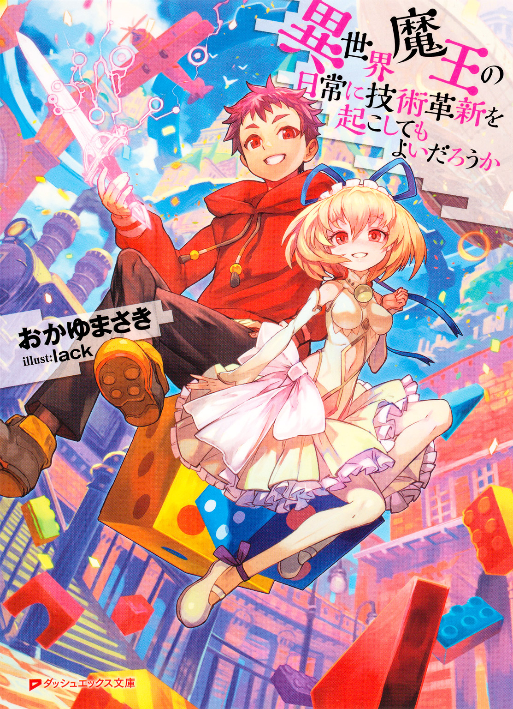
この本は縦書きでレイアウトされています。
また、ご覧になる機種により、表示の差が認められることがあります。
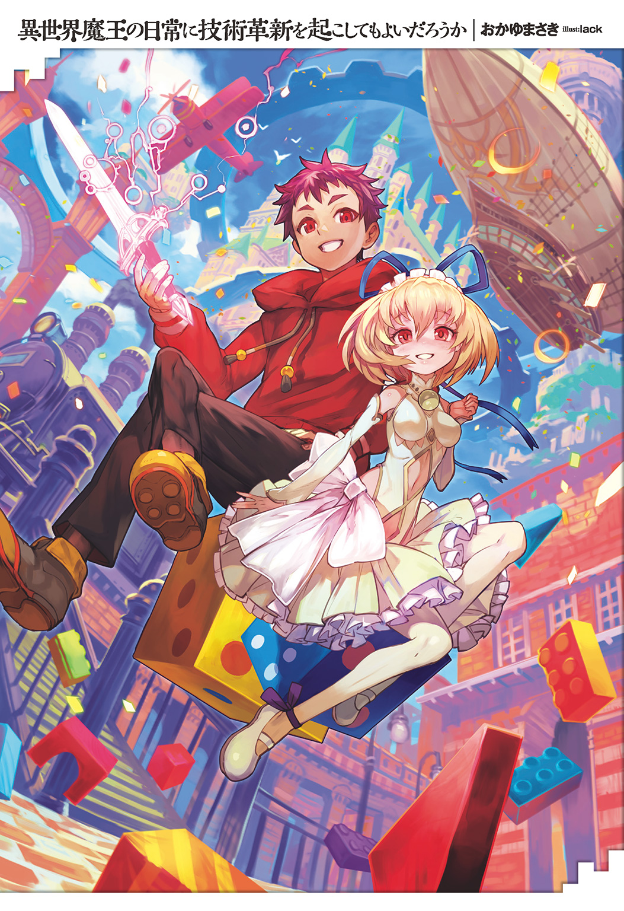
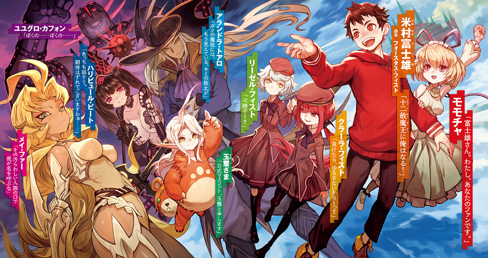
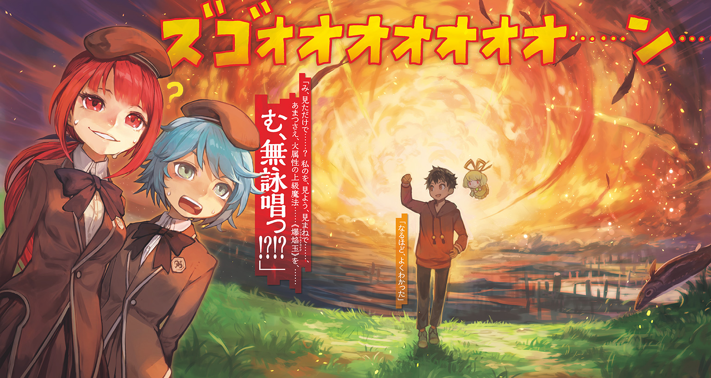
 ダッシュエックス文庫DIGITAL
ダッシュエックス文庫DIGITAL
異世界魔王の日常に技術革新を起こしてもよいだろうか
おかゆまさき
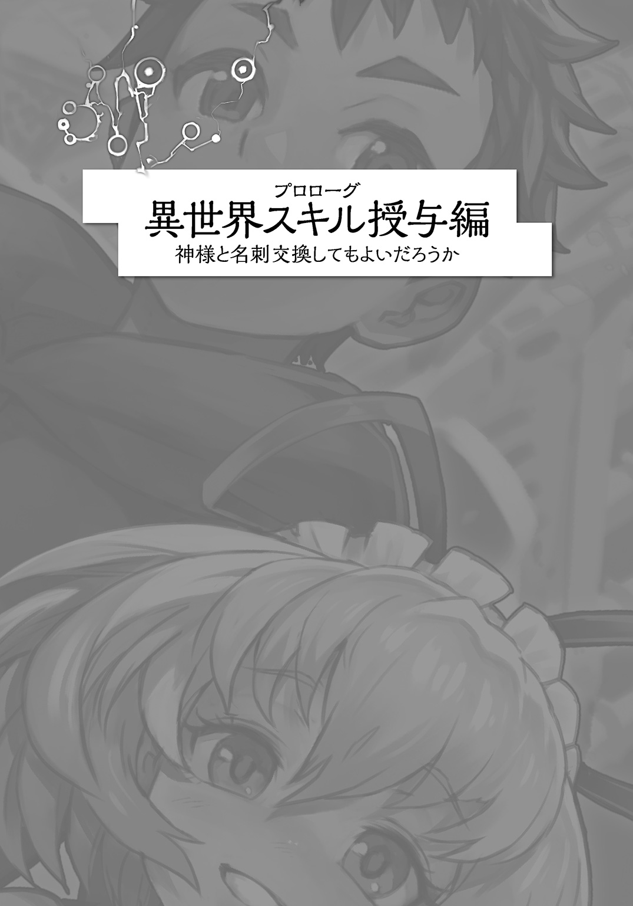
01話 死んだ理由に
思いを馳せてもよいだろうか
「ずっと前からファンでした！」
俺が言ったんではない。
俺が言われたのだ。
「あの、聞いてます？」
無言になっていた俺に、ふんわり発光してる純白ゴスロリ少女が上目づかい。
「ちょっとまって、その前に......ここどこ？」
「わかりませんか？」
俺のまわりに、ブルーなスカイが広がっている。
文字通り、空しかないのだ。
足下には白い雲。
「ひょっとして、ここ、空の上？」
「おしい！ 近い！ ここは天界です」
「......なんで？」
「米村富士雄さん。あなた、死んだので」
「死んだら空の上って、ベタ過ぎないか!?」
「真実は小説よりも奇なりですよ」
「ファー」
言われてみれば、一周してこれは新しいのかもしれない。
ぽかぽかあったかくて、ここ、気持ちがいいし。
天界かー。
そっかー。俺、死んだのかー......
「って、なにノンキなコト言ってんだ！ 俺死んだの!?」
「そうですよ！ このたびは心よりお悔やみ申し上げます。享年28歳でした」
「それはそれはどうもご丁寧に......って、やってる場合か！ げげぇっ！ 俺のおでこに白い三角布！ 頭上には天使のわっかまである！ すごいわかりやすい......！」
「サービスですよ？」
「別にありがたくはない！」
「もしかしてご記憶、ないんですか？」
無かった。
あ、あれ......？
思い出せるのは、今朝までのこと。
いつも通りの出社、駅までの道のり。無言の満員電車。
会社に到着。
そうだ、俺はすごく意気込んでいた気がする。
入社４年目。
何度目かの企画プレゼンの日。
新企画の知育玩具を、部長達の前で説明するのだ。
俺はおもちゃ会社勤務なのだ。
「思い出せました？」
「思い出したが、会社の会議室に入った先から、どうしてもだめだ。俺、そこで急死したの？」
「いえ、もう少しあとに、事故死です」
「まさか、ビルの火事に巻き込まれたとか？ それとも......そうか！ 居眠り運転のトラックが突っ込んできたんだな？ でも会議室は地上９階だぞ!?」
「なにが富士雄さんをそう確信させるのかわかりませんが......」
白ゴス少女は俺へと両手を広げ、
「ご記憶がないようなので、説明しますと。富士雄さんの考えた幼児用知育玩具『ぼくの わたしの がったいどうぶつえん』の夢あふれる素晴らしさ、その芸術性を理解できない愚かな老害上司どもの、ねちねちとした難癖に、富士雄さんはついにぶちぎれたのです」
「俺が？ この、いつもニッコリ・仏の富士雄が!?」
「はい。富士雄さん、今日で『がったいどうぶつえん』は10回目のプレゼンでしたよね」
「ああ......、なんどもリテイクだされて......。ひどいんだよあの上司ども......子供のことなんて全然考えねぇで......」
「その通りです。あの方達のリテイクには理屈もなにもありませんでした。朝令暮改はあたりまえ。一切頭を使っていない指示は矛盾だらけで、上司という立場を振りかざして部下をいびり、社内での己の力を試し、あわよくば自分の名をできるだけ社歴に残したいだけなのが見え見えです」
少女はコクコクうなずき、
「そして富士雄さんは、ついに上司の『だいたい、子供が間違ってコレ飲み込んで死んだら誰が責任とるの？ 富士雄くん、キミが取ってくれんの？』という言葉にぶちぎれて、『平気に決まってんだろぉッ!! これを見てみろぉ！』と、大人のこぶし大のゴリラを丸呑みにしたのです」
「そ......それでどうなったんだ!?」
「そのまま窒息死しました」
「俺のばかぁぁぁああああ......!! あの大きさのゴリラはだめ......！ あれは子供の口にすら入らないヤツゥ」
「あの時の富士雄さん、かっこよかった......（うっとり）」
「マジで!? 死因はゴリラを丸呑みにしたことによる窒息死だぞ......!?」
「申し遅れました。わたくし、こういうものです」
白いゴスロリ少女は俺にスッと名刺を差し出す。
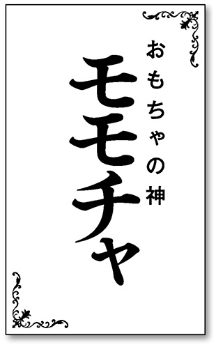
「おもちゃの神......モモチャ？」
「そうなんです。わたし、おもちゃの神でして」
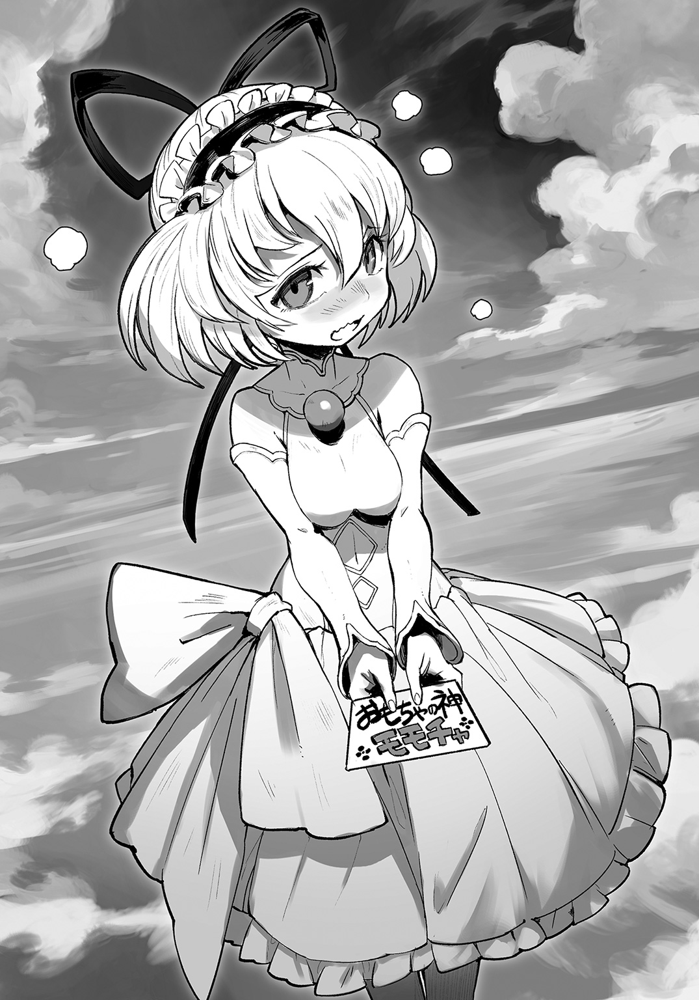
赤くなって照れるモモチャ。
すこしかわいい。
というか髪とか金髪だし、よく見ればけっこう将来が楽しみな美人さんかもしれない。
「で、モモチャちゃん」
「そこはモモチャンでよくないですか？」
「で、モッチーは、死んだ俺に、なんの用なの？」
「......はい」
白ゴス少女は真剣な顔で俺を見あげる。
「富士雄さんの夢、『全ての子供が俺のおもちゃで笑顔になる世界』を、こんなところで終わらせるわけにはいきません」
俺はスーツのネクタイを、自然と整えていた。
「富士雄さん。わたし、あなたのファンです。あなたの作るおもちゃが、大好きです」
だめ、俺、そんなこと言われたら泣いちゃいそう。
「わたしは全力で、あなたを転生させます」
02話 転生先は
自由に選んでもよいだろうか
俺の名前は米村富士雄。
名前の通り正真正銘、愛くるしいまでの日本男児だ。
そんな俺が、28歳でおもちゃを喉に詰まらせ、死んでしまうとは情けない。
本当に、なさけない......っ。
でも、俺は今、なぜか空の上の天界にいて、目の前にはおもちゃの神を名乗る白いゴスロリ娘がいる。
彼女は俺を生き返らせ......というか、転生させるって言っているんだが、
「転生って、あの、異世界に転生ってやつか......？」
「はい！ おもちゃの神として、世界で一番おもちゃを愛する大人である富士雄さんの魂を、どうにかそのまま別の世界に送り込みます」
「ファンタジー！ それならファンタジーの国にしてくれ！ 魔法と剣の世界！ 俺はこの際、そういう世界で、ゆっくりとおもちゃ作りにはげみたい......！」
「すばらしいです......！ 富士雄さんのご希望には最大限、添うようにしたいとおもいます！」
「よし......！ よしっ！ ありがとうモッチー！」
俺は舞った。
ブーン！
両手をひろげ、背広をなびかせ。
ブーンブーン！
雲の上の風、きもちいいぜ......。
「ですが、あの......わたし、神とはいえ、おもちゃの神。......その、神力が、そんなに強くなくてですね......？」
「......ん？ どうしたモッチー」
おもちゃ神がもじもじしている。
トイレかな？
「転生先なんですが、次の３つからしか、選べないんです......」
「３つ......？」
「すいませんすいません！ わたし大きいことばっかりいっちゃってますが、これでも頑張ったんです！ そりゃもう、他の神様なら10も20も、へたしたら１００とかの転生先を用意できるんですが、わたし、ようやくこの３つをかき集めるのが精一杯で......っ！」
「いやいやいや、いいから、大丈夫。３つもある中から選べるなんて、それでもすごいから」
「そ、そうですかぁ......？」
「ああ、普通は転生先は１個に決まってて、選ぶとかないから」
「え、ええ......？」
モッチーは顔を真っ赤にして鼻水をすすりながら、
「富士雄さんが、そう言ってくれるなら、わたし、がんばります......！」
「ああ。やっぱ、神様ってすごいんだな。俺、モッチーのこと見直したよ。じゃあ、１個ずつ教えてくれ」
「そ、そんな、世界で一番かわいいよだなんて......！」
それは言ってないが、まあ、それでもいい。
だって、すごいわくわくする。
選べる転生先なんて、テンションあがってきたぞ......！
「じゃあ、ひとつめはですね、えーと、『クマムシ』です」
「......へ？」
「これはですね、すごいですよー。不死身昆虫のクマムシに転生した富士雄さんは、ＮＡＳＡに捕獲され、そのままロケットで宇宙実験のために打ち上げられてですね、そのまま２００万年宇宙を漂ってから、太陽に突っ込みます」
「パスパスパスパスだめだめだめだめ！ このダメ神がぁッ！」
「さ、さっきは結婚しようって言ってくれたのにぃ......!?」
「そもそもクマムシじゃ、おもちゃ作れないよね!? 子供達のために......！」
「でも、クマムシは貴重な特性スキル【極限環境耐性】を持っているんですよ!? 超生物です！ 太陽の中でも生き残るかもしれません！」
「いっそ死にたい！ ２００万年も独りぼっちで孤独な夜を漂いたくない！」
「富士雄さんの、そういうポエマーなとこ、好きです」
「うるさいよ！」
あやうく地獄に転生するところだった。
この神、本当に俺の味方なのか......？
そもそもＮＡＳＡとか出て来た時点で、異世界でもないしな......。
「では、気を取り直して、二つ目の転生先。『シロウリガイ』」
「......はぃ？」
「これはですね、『しんかい２０００』によって確認された超レア転生先で、光の届かない深海の奥底で吹き出る熱水に含まれるメタンとかを栄養源にする貝でして」
「貝って言っちゃったよ！」
「でも、貴重な特性スキル【極限環境耐性】を手に入れるチャンスですよ？」
「クマムシと同じスキル！ ......待って!? モッチー言ったよね!? 富士雄さんの夢、『全ての子供が俺のおもちゃで笑顔になる世界』を、こんなところで終わらせるわけにはいきませんって！」
「はい、ドヤ顔でいいました」
「じゃあなんでさっきからクマムシとか貝とか、人間じゃないタイプの転生先ばっか出してくるの？ おもちゃつくれない！」
「すいませんっ！ 無能な神ですいませんっ！ じゃあ、富士雄さんが選ぶのは、この２番ということで......？」
「チガウ違うチガウ違う！ なにが『ということで』なの!? ばか！ ばか！ ばかモッチー！ こわい！ 光も届かない深海で俺のまま一人ぼっちで転生するとかこわい！ 頼む......もうこのまま成仏させてェ......」
「だめです富士雄さん！ 富士雄さんの夢、『全ての子供が俺のおもちゃで笑顔になる世界』を、こんなところで終わらせるわけにはいきませんっ！」
「うるさいよ！ 最後の三つ目のヤツがだめだったら、俺もう、問答無用で成仏するから！」
なんで神様に「ファンです！」って見初められ、来世で畜生道に落ちなきゃならんのか。
『しんかい２０００』が出て来た時点で、これもファンタジー異世界じゃないし。
「では、次が最後の三つ目の転生先。『魔王』」
「魔王キタ――......ッ!!」
03話 おもちゃの魂を
受け継いでもよいだろうか
魔王。
それは魔の王。
......魔ってなんだ？
まあいい。
とにかく『魔王』が転生先なら、ファンタジー異世界でもゆっくりと子供達の喜ぶおもちゃ作りに没頭できるにちがいない。
白ゴスの神様少女は続ける。
「すごいですよー？ この『魔王』はですね、３日後に勇者に討伐されちゃうんですけど、その後何度でも城の玉座で復活して勇者のやり込み要素のためにレアアイテムをドリップし続けるんです」
「そんな救いのないループものやだぁっ！ しかも、レアアイテムをドリップ!? ドリップってコーヒー作るときのやつだよね？ どんだけレアなコーヒー豆なんだよ！ というかなんで魔王が勇者を芳醇なホットコーヒーでお出迎えしなきゃなの!? どうぞごゆっくりかよ！ ドロップ！ アイテムを落とすのはドロップ！」
「富士雄さんの、そういうマメなツッコミ、好きです。コーヒーなだけに」
「うるさいよー！」
「この魔王の特性スキルは【心魂契約】っていう、お願いを聞いてあげた相手の魂を奪えるっていうものなんですけど、でも、やっぱり上司のモラハラとパワハラに苦しんだ富士雄さんは【極限環境耐性】がいいですよね？」
「それってモッチーの心づかいだったの!? いや、いいからそういうの！」
たしかに前世の死ぬ直前の俺だったら、すごい役立ちそうだが、モラパワに全部耐えると、ただの高性能社畜が完成しているだけのような気もする。
だめ、我慢しすぎ。
しかし魔王は【心魂契約】かー。
魔王っぽいといえば、ぽいのか。
わしの仲間になれば、世界の半分をおまえにやろう！ （はい/いいえ）
......これだと結局、お願いきいてないけどな。
そもそも相手のお願い聞いてあげなきゃなのが、めんどくさそうだが......、
「他の２択が地獄だから、選択の余地、なしなんだよな」
俺はおもちゃの神にうんうんうなずき、
「モッチー、俺、『魔王』コースでお願いするよ。勇者が三日後に来るみたいだけど、元人間の俺が魔王だったんなら、なんとか説得して、仲良くしてみせるし」
「はいっ！ 富士雄さんなら絶対に『魔王』を選ぶと思ってました！」
「じゃあなんで、あんなに危険な２択を最初に持ってきた？」
ともかく、俺は『魔王』になるようだった。
「さて、無事に転生先も決まったようですし、富士雄さんにはさらに、いくつかのスキルが授与されます」
「さっき言ってた【心魂契約】以外にか？」
「はい、転生先にあまりいいものを用意できなかったんですから、神としてはこれくらい当たり前です。それに、万が一にでも勇者を名乗る冒険者集団に対抗できなければ、魔王と言えども３日の命の運命ですし！」
「それ大事な......！」
特殊なスキルと言えば、転生には必需品。
桃から生まれし桃太郎が特性スキル【きびだんご】を持っていたように、俺も異世界に向けてしっかり準備したい。
「それに、これは富士雄さんだから得られるスキルなんです」
「俺だから？」
「これがなんだか、わかりますか？」
足下に広がっていた白い雲が、いつの間にかテーブルになっていて、その上に見覚えのあるものが載せてあった。
「モッチー、これ、『だいまほうつかいステッキ』......？」
「富士雄さんが最初に企画したおもちゃです」
それは、ヘッドに赤くて透明な火の玉のようなプラスチック製の玉が付いた、おもちゃの杖。
ハ○ーポッターブームもあって、当時俺は子供の魔法使いごっこに最適な魔法の杖シリーズを提案したのだ。
セットの中には水色の玉や黄色、紫といった、いろいろな魔法の玉が入っていて、付け替えることによって使える魔法も違う設定という、現代の錬金術師と名高い大学教授に取材までして作ったロマン武器だったのだが......
「でも結局、没になって、試作品すら作ってもらえなくて......」
じゃあ、俺が今手にしているのは、なんだ......？
「富士雄さん、ここは天界です。作られなかったものも、魂があれば、みんなここに来るんです」
「モッチー......！」
「わたし、これで何度、大魔法使いになりきったことか」
俺の夢見たおもちゃを振り回す、おもちゃの神。
「それじゃあ、こっちはなんだかわかります？」
振り向いたモッチーが、右眼に装着していたのは、
「それは、『パパママ・おしえてスカウター』！ すげえ、それって、そんなふうになるんだ......！」
デザイナーさんを通してない俺の絵だったから、ドラ○ンボ○ル丸パクリ。
モッチーが装備しているのは、あのスカウターをもうちょっと丸っこくしたようなやつで、
「それ、ただ付けるだけじゃないんだ。スカウターを付けた子供の見たままを、小型カメラで親のスマホ画面に送って、しかも会話もできるんだ。で、子供の目線で、子供が不思議に思ったものを、耳元でパパやママが教えてあげるんだ......」
親子の新しい会話スタイルを考えた俺の企画。
これはイケルと、勇んで書いた企画書。
そのままシュレッダー行きですよ......。
「モッチー、そのスカウターの魂も、ここに来てたんだな......！」
「はい！ そして最後にこれです」
「それ『なんでもＭｙひゃっか』じゃん！」
できるハズだったのだ。
型落ちタブレットの性能で充分。
子供専用の頑丈なタブレットで身近なものの写真を撮って、それでどんどん自分だけの大図鑑を作って行くのだ。
子供大百科系の出版社さんとコラボする話も出ていた。
俺だけの夢だけど、ゆくゆくはスカウターとも連動させたかった。
でも、実現直前で、これも没にされて......。
「富士雄さん。この子たちの魂を受け継ぐのはあなたです」
「......え？」
三つのおもちゃは女神の手からゆっくりと浮かびあがり、俺の目の前までやってくる。
そして光り輝きながら、俺の胸の中に吸い込まれた。
「これで富士雄さんは、『だいまほうつかいステッキ』から伝承級スキル【大魔力ブースト】を。『パパママ・おしえてスカウター』から同じく【情報化視界】、【強化索敵】、【天の声】を。『なんでもＭｙひゃっか』からは【大百科】のスキルを手に入れました」
「ありがとう、モッチー！」
おもちゃの魂が俺の中に溶け込んでいく。
さすが神様。
さすが天界。
うれしい！ 俺は今、おもちゃと一体になったのだ......!!
「そして、これがわたしからの最後のプレゼントです」
白ゴスの少女神は、俺の両手をつかんだ。
さすが神。ぷにぷにあったかいぞ。
「富士雄さんが、異世界でもみんなをにっこりさせるようなおもちゃを、たくさん作れますように」
モッチーの手から、俺の中になにかが流れ込んだ。
「今、富士雄さんの中に生まれたのは、幻想級スキル【玩具創造】です。それでたくさんの子供達に夢を与えてあげてください」
「......わかった。約束する。俺はぜったいに、異世界一のおもちゃ屋王になる」
俺は照れながらも、おもちゃの女神と見つめ合った。
約束だった。
「では、転生先は２番でよかったんですよね」
「ぶっころすぞモッチィィィイッ!!」
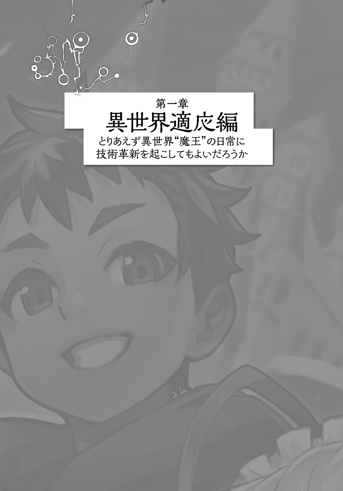
04話 祝！ 無事転生したついでに
ご報告してもよいだろうか
さて、転生だ。
俺は今、時空間を渡っている最中なのか、意識だけの存在になっている。
と、その前に一つ、言っておきたいことがある。
俺はモッチーと、あのあとしばし天界でお茶しながらおもちゃ談義に花を咲かせ、完全に意気投合して、でもずっとそうしているわけにもいかないので、では、そろそろこの辺で......というところで、引き止められ、その......なんていうか......あの後、そのままモッチーと......
朝チュンしてしまいましたぁぁぁ......！
すまん！ なんか衝撃的な展開になった!!
ああ......事故死してからが、俺の人生の本番だったんだなぁ!!
一言でいうと、素晴らしい夜でした。
神様って言っても、人間とあんまりかわらないもんなんだな......。
......いや、モッチー以外の女性、俺、知りませんが......
初めてが、神様、か......
そんな、モッチーとの一夜の思い出をあれこれ反芻していると、こうして離れ離れになってしまったことが、だんだん切なくなってきてしまう。
これが、初恋に破れたっていうやつなのかな。
でも、こんな俺を、モッチーがあれだけ好きでいてくれたからこその、転生。
モッチーの想いに応えるためにも、転生おもちゃ作り生活、がんばるぞ......!!
あやうく幸せの中で成仏するところだったけれども!!
「よし......!!」
............しかし、ずいぶん長いな......。
異世界へ魂を移動させるには少しだけ時間がかかるらしく、俺の意識は暗闇の中で、だんだんぼーっと眠くなってきている。
「いやいや、モッチーのことを、想い返せ！」
ごぽごぽ......
「んっ？」
なんかきた。
「おっ？」
目を開く。
起きたばかりなのか、視界がよくない。
そしてどうやら俺は、全身をなにかに包まれているらしい。
布団？
ちがうな。
もっとまとわり付くような、これ......
ぶくぶく......
って、水の中じゃねえか！
「んおーっ！」
マジか！ あれ!? モッチーの野郎、間違えたのか!?
俺、やっぱり深海の貝に転生したんじゃね!?
おいいいいいいいいいいッ!!
「ごぽぽー！」
あ、ちがう。
なんか、俺の目の前に、透明なガラスの壁みたいのがあって、そこに俺の姿が映ってる。
ふぅ......。
これ、ヒトだ。
俺だ！
よかった......。
素っ裸だけど、貝よりはましだ。
モッチー、疑ってごめん。
俺はどうやら、酸素マスクのようなものを装着させられて、狭い空間で、透明な水だかゼリーだかの中に入れられているらしい。
回復カプセル的な？
ちょうどドラゴン○ールで、よくベ○ータが入ってるようなやつだ。
モッチー、ドラゴン○ール好きなのか......？
「ん？」
俺は水溶液の中で目を凝らす。
目の前に映る俺。
これ、なんか、俺の見た目、若くねーか？
どうみても子供というか、14、15歳くらいの時の俺に見える。
「なんでだ......」
モッチーは確か、シーツの中で「すごくカッコイイ姿で転生します」とか言ってたような......。
あいつ、ひょっとしてショタコン？
しげしげと、若い時の自分とにらめっこしていると。
■ ■ ■ ■ ■ ■ ■ ■
名前： フォースタス・フィスト
真命： 米村 富士雄
種族： 人間
クラス： 魔王
■ ■ ■ ■ ■ ■ ■ ■
突然、視界の中のガラスに映る俺の輪郭が光り、にゅっとステータスみたいなものが出てきた。
もしかして、自動でスカウターのスキルが使われたとか？
《＃ 所有するスキル【情報化視界】並びに【天の声】が発動しています》
おっ？ 視界に追加情報テキストと、初音ミ○っぽい読み上げロイド的声がテレパシーみたいに直接脳に来た。
やっぱ、スカウターのスキルらしい。
すげえ......『パパママ・おしえてスカウター』ってこんな感じになるのか!!
確かに魂を感じる......！
けど、ちょっと待て。
この声、モッチー......だよな？
モッチーだよな!?
《＃ ......チガイマス ワタシハ テンノコエ。 もっちーナドトイウ ビショウジョメガミデハ アリマセン》
待ってモッチー!?
モッチーあなた、俺が転生するとき、
『やっぱり行かないで富士雄さん！ ここで一緒に暮らしてくださいっ！』
って泣いて俺を引き止めて、でもやっぱりそうもいかなくて、
『またいつか、絶対逢おうね......？』
とか、かなりしんみりお別れしたのに、これはどういう!?
《............（かぁぁっ/////）》
まあ、じゃあこれは【天の声】っていうことにしておくけども......！
いや、嬉しいから単純に!!
モッチー、これからもヨロシクな!!!
............、なんかジタバタしてる音がするけど、照れてるのかな？
とはいえ、この回復ポッド的な箱の中でずっとこうしているわけにもいかない。
今はとにかく、外に出よう。
なんかお腹も空いてきたし！
ステータス、マジでクラスに魔王って書いてあるが、魔王もお腹が減るんだな......。
「んーっと、これか」
俺は目の前のガラスっぽい扉に、少し屈んで手をかける。
「おわっ」
びっくりした。
なんか、目の前のガラスの向こう側から、大きなテディベアが俺を見てるんだが......。
なんだ、このかわいいぬいぐるみ。
■ ■ ■ ■ ■ ■ ■ ■
名前： ？
真命： ？
種族： テディベア
クラス： ？
■ ■ ■ ■ ■ ■ ■ ■
ハテナハテナじゃないよ！
解れよ！
勇者到着まで あと 71時間42分39秒
05話 第一村人を
スカウターで発見してもよいだろうか
ハテナハテナじゃないよ！
解れよ！
《＃【情報化視界】と【大百科】をコラボさせますか？》
まじで!? するする！ モッチーやってくれ！ 俺の夢！ 実現させて!!
というか事務的なやつなら、平静を気取れるのなモッチー！ かわいい！
《＃ じょ、【情報化視界】と【大百科】をコラボさせています！ 残り時間90秒》
わかったからはやく！ はやく！ このテディベアすごく気になる！
このぬいぐるみ？ キグルミ?? 俺を煽るように踊り始めた！ むかつくから！ むかつくから！
《＃ 残り60秒》
あーっ！ 行っちゃう！
あのクマ、走ってどっかいっちゃうー！
《＃ 残り30秒 ............ ......10、９、８》
ああぁぁ......
《＃ 完了しました。今後、【情報化視界】の情報は【大百科】と同調します》
おそいよモッチー......！
もうあのテディベア、どっか行っちゃったよ！
でも、『パパママ・おしえてスカウター』と『なんでもＭｙひゃっか』のコラボうれしぃぃっ！ ありがとモッチー！
......とにかく、はやくこのポッドから出よう。
俺はもう一回、さっきの体勢。
ちょっと屈んで、扉に指をかける。
「ふんっ」
重い。
重いので思いっきり下から上に踏ん張ると、
バゴン！
え？ 壊れたんだけど......！
真上に吹っ飛んでいって、がーんっ！ と高い天井にめり込む扉。
俺を包んでいた水がざざーっと溢れだして、しゅわーっと床に広がっていく。
ま、いっか......。
俺は口からマスクを取り外し、外に出る。
薄暗い。
石造りの大きな空間だ。
部屋？ なのか？
ふいにスカウターが反応する。
石！ 石！ 石！ 石壁！ 石壁！ と意味のない情報をいちいちクリックして消していた俺の視界に、誰かが壁の向こうから近づいてくるという情報が浮かんだのだ。
壁を透視するように、ヒトっぽい輪郭が近づいてくる。
おお、これ、【強化索敵】かな？ めっちゃ便利。
魔王に不意打ちとかありえないし、にげるコマンドも通用しないんだぜ。
これなら第一村人との遭遇も怖くない。
どれどれ、どんなやつがくるのかな？
■ ■ ■ ■ ■ ■ ■ ■
名前： ヨーハン・フィスト
種族： 魔族
クラス： 執事（家令）
■ ■ ■ ■ ■ ■ ■ ■
ん？ 魔族だと？
怖いやつじゃないだろうな......
《＃ トロフィーを獲得しました♪》
な、なんだいきなり！
モッチーの声と同時に、俺の【情報化視界】の右上に、メッセージが現れる。
《＃『シルバー』 魔族の解析者》
こんなの、あるんだ......。
い、意味は、あるの？
《＃ トロフィー獲得リワード 【情報化視界】制限解除》
あるみたい！
《＃【情報化視界】派生デミスキル、【魔族ステータス看破】が解放されました》
■ ■ ■ ■ ■ ■ ■ ■
名前： ヨーハン・フィスト
種族： 魔族
クラス： 執事（家礼）
〔戦〕 １２０
〔謀〕 ５０
〔非〕 ２
■ ■ ■ ■ ■ ■ ■ ■
お、ステータス増えた。
増えたが、〔戦〕？ 〔謀〕？ 〔非〕？
よくわからん。
《＃ ステータスの説明を聞きますか？》
頼むモッチー！
《＃ 〔戦〕〔謀〕〔非〕は、力ある魔族の存在を明示するステータスです。
〔戦〕は、腕力、魔力などの総合的なパワーを表す指標です。
〔戦〕はおおむね、武装した人間の軍勢を単独で殲滅できる最大数値を表しています。
〔謀〕は、知恵や情報、資産、人脈などの謀略力を表す指標です。
〔謀〕はおおむね、最大で同値の軍勢を戦場、または戦場外で無力化することができます。
〔非〕は、魔族の持つ非理法である、特殊なスキルによるブースト力を表します。
任意の数字を〔戦〕〔謀〕に掛け合わせ、飛躍的に力を高めることができます》
一回じゃ覚えられないよう。
詳しくはモッチーと、あとで復習するとして。
つまり、この、すでに俺の前に到着し、全裸の俺をしげしげ見つめる、この執事服の老人は、やる気になったら、たった一人で武装した軍勢１２０人を屠り、50人を戦略的に無力化できる......ってことか？
なんだそのワンマンアーミー。
魔族、こええ。
どんな殺戮執事なんだよ......
っていうか、あれ？
俺、やばいんじゃないの？
いや！ 俺は魔王！
きっとこの執事より強いはず！
「あの、ヨーハンさん......？」
「わたくしめのことは、ヨーハンとお呼びください、若」
若ときたか！
「じゃあ、ヨーハン......、ちょっと寒いんで、着る物とかないですかね」
「御意」
執事は一礼して、壊れたポッドの横の物入れをごそごそやり始めた。
「こちらを」
「おそろいの執事服......！」
「御意」
「いや、御意じゃなく、これだといろいろまずくないか......？」
「若、もうしわけありません。今はサイズが合う服がそれしかなく。わたくしめは、若のそのお尻姿でまったくかまわないのですが」
お尻姿ってなに!?
俺は急いで執事服を着た。
ぞわっときたぞ!?
「しかし若、なぜわたくしめの名を？」
執事服に身体をなじませていると、ヨーハンが訊いてくる。
なんて答えよう。
「ま......魔王とも、なれば、そのようなこと、たやすいっていうか......」
「ははっ、御意に」
なんか通じた......！
でもこの恰好、やっぱ完璧におじいちゃんの孫執事だぞ。
魔王がこれでいいのか？
威厳とか、最初が肝心な気がする。
《＃【玩具創造】スキルを使い、執事服を任意のデザインに変更しますか？》
すごく便利なんですけど！
俺はさっそく【大百科】からカタログをピックアップ。
でも14歳前後の俺では何を着たって魔王の威厳なんか出るわけないので、ジーンズとパーカーにしておいた。
一瞬で執事服の繊維がほどけ、一秒全裸。
「うおっ」
魔法少女変身シーンを体験しながら、服が再構成される。
お、ぴったり。
......せっかくのファンタジー世界が、一気に俺だけファスト・カジュアルになったな。
威厳？
はは、そういうの、いいんで。
それよりも、この【玩具創造】スキル。
名前通り、おもちゃ作りが、めちゃくちゃ捗りそうなんだが......！
《＃ 幻想級スキル【玩具創造】は触れた物体にあらゆる形質変化を与えるスキルです。
【玩具創造】のスキル効能には以下の【デミスキル】が含まれています。
【再構成】 今行われたように、物体の構成を組み替えて形を変形させます。
【復元】 壊れた品を元に戻します。
【増産】 過去に作ったものと同じ物品を瞬時に作り出します。
【融合】 二つのものを一つに合成します。
これらを掛け合わせて使用することも可能です》
うおおお......！
燃えてきたぁぁ！
夢がすごい勢いで広がりんぐ......！
「それでは若、どうぞこちらに」
よし、このヨーハンさん、どうやら敵ではないらしいぞ。
というか、味方っぽい。
目の前で俺が突然、早着替えしたというのに、ちっとも驚かないしな。
俺は執事のあとについて、わくわくしながら石造りの部屋を後にした。
勇者到着まで あと 71時間36分20秒
06話 すごい勢いで俺を煽ってくる脳筋将軍を
スルー検定してもよいだろうか
おっす。
オラ、米村富士雄。
今、ちょっとピンチかもしれない。
「人間の、子供......ですと!?」
あー、なにこれ。
俺は、執事のヨーハンに連れられて、大広間にやってきていた。
どうやら俺が転生してきた場所は、大きな魔王の城のような場所だったらしい。
で、俺がぽこぽこ、たゆたっていたポッドから出て、しばーらく歩くと、ここに出た。
謁見の間？
王様がいて、家臣たちが、ははーってする部屋だと思う。
俺が、舞台裏みたいな所から、トコトコと玉座の前に姿を現すと、ズラーッと膝をついて並んでいた家臣団みたいな、キリっとした魔族達がぎょっとなって騒ぎ始めた。
「ヨーハン殿！ 冗談ではありませんぞ！」
「人間の幼子が、我々の王!?」
「なんたること......！」
「これではもう、我が一族はおしまいですぞぉお！」
「こ、こうなったら、オレがトーナメントに......!!」
「ムリぞな！ 他家の魔王に、あっという間にバラバラにされるのがオチぞな！」
ちなみにこのヒト達、俺とかに比べると、かなり顔とかが青白いが、別に貧血とかではなさそうだ。
ざっと30人くらいだろうか。
半分が将軍みたいな甲冑を着込んだ筋肉とかすごい魔族。
もう半分が、ローブを着た文系っぽい魔族。魔術師かな？
あと、メイドっぽいのと、執事っぽいのも少し。
そのヒト達が、俺を見て、なんか悶絶してる。
「ヨーハン、これ......」
「我がフィスト家を代表する者達です」
「なるほどね」
俺としては、なんも、なるほどじゃないんだが......。
もう少し説明して欲しい。
確か、俺の魔王ネームが、
■ ■ ■ ■ ■ ■ ■ ■
名前： フォースタス・フィスト
真命： 米村 富士雄
種族： 人間
クラス： 魔王
■ ■ ■ ■ ■ ■ ■ ■
フォースタス・フィスト。
フィスト家ということは、これ、俺が所属する一族でもあるのか......？
「おーいおいおいおい、どうしたどうしたー」
その時、大声で、家臣団のさらに後ろの出入り口から、ひときわガタイのいい、いかにも猛将っぽい大男がやってきた。
トイレにでも行ってたのか？
どれどれ、スカウターはと......
■ ■ ■ ■ ■ ■ ■ ■
名前： バンベルグ・フィスト
種族： 魔族
クラス： 魔将軍
〔戦〕 ２０００
〔謀〕 ０
〔非〕 ３
■ ■ ■ ■ ■ ■ ■ ■
やべえ。
脳筋やべえ。
「バンベルグ殿！ 実は......」
文官っぽいメガネの学級委員風魔族が、バンベルグになにやら説明している。
けど、俺はそれどころじゃない。
一騎当千どころじゃない。
こいつ、やばすぎる!!
ヨーハンの〔戦〕１２０とかでびびってた俺、なんなの？
２０００て!!
２０００人の戦士を殲滅できるんですぞ!?
あと〔謀〕ゼロて！
この際、話が通じないかもしれないのが一番怖い！
「ぶひゃひゃひゃひゃひゃひゃっ！ こ、こいつが魔王......!? ぐっひゃっひゃっひゃっ......！ 便所には行っておくもんだな！ あやうくこのバンベルグ様が新しい魔王様を前に漏らすところを家臣どもに見られるとこだったぜ......！」
委員長魔族に説明を聞いたバンベルグが爆笑してる！
脳筋が笑ってる！
「おい、小僧ッ!!」
「こ、小僧て......！」
フィスト家が誇る将軍なのだろう。
こんどは突然激怒したっぽいバンベルグが、手にしていた巨大な棍棒の先端を俺に突きつけ、
「なんでおまえのようなヤツがここにいるのかはわからねーが、とっと失せろ！ ここは人間のガキがいていい場所じゃあねぇ。今日は特別な日だ。命だけは取らねぇでやる。ったく、こんなモヤシ小僧がどこから入ってきやがったんだ......！」
ざわめきが止んだ。
そして家臣団は、なんか納得したように、俺に批難の視線を向け始めた。
「あー......」
どうやら、みんなの間では、これは間違い！ ということになったらしい。
「ヨーハン殿、しかたねえ、トーナメントには、俺が出る」
「ですが、いくらバンベルグ殿でもっ！」
「しかたねーだろ!! じゃあ他にどうしろってんだ！」
またざわつきはじめる家臣団。
というか、待て。
このバンベルグでも、やめろって止められてるトーナメントって、なんだ？
「お待ちください」
ヨーハンの声に、再び場が静かになった。
このじいさん、ただの執事じゃないのか？
「さ、若」
「......は？」
なんでここで俺に振る!?
「......いや、なんかよくわからんが、あいつが、そのトーナメントっていうやつに出るって言ってんだから、それでいいんじゃねぇか......？」
俺がここで場違いってのは、よーくわかった。
こっちも別に、そういうもんに出たくはない。
俺がしたいのは、子供のためのおもちゃ作りなのだ。
家臣団の中に子供さえいれば、俺も役に立てるんだが、見あたらない......！
俺のステータスなんて実際、たかが知れて――
「......ん？」
なあ、モッチー。
《＃ なんでしょう》
モッチーで返事しちゃったよ！
【天の声】じゃないのかよ！
まあいいや。
あのさ、俺のステータスって表示できる？
《＃ もちろんです。 魔王フォースタス・フィストのステータスは、こちらとなっています》
すると俺の視界に、モンスター図鑑のように、ゆっくり回転する俺の全身図が投影され、その横に、
■ ■ ■ ■ ■ ■ ■ ■
名前： フォースタス・フィスト
真命： 米村 富士雄
種族： 人間
クラス： 魔王
〔戦〕 １８０００
〔謀〕 ６０００
〔非〕 １６９
■ ■ ■ ■ ■ ■ ■ ■
......は？
勇者到着まで あと 71時間28分02秒
07話 家臣ぽい魔族たちの城を
崩壊させてもよいだろうか
何者だよ、俺。
魔王とは聞いていたけども！
これだと俺、フルパワーをゴゴゴと出せば、単騎で１８０００をたいらげて、６０００の軍勢を戦場から追い払っておけるスペックなんだが？
んで......〔非〕......の、非理法って、スキルのこと、だよな？
これ、たしか〔戦〕と〔謀〕に掛け算できるっていう話なんだが、もう、ちょっと、計算するのも恐ろしいことになってる......！
モッチー、ちょっとこれ、信じられない。
《＃ でしたら試してみればどうですか？ 大丈夫です、富士雄さんならできます！》
試すって......！
まあ、じゃあ、試すか。
俺は、バンベルグを中心に、
「だがしかし！」
「けれどもしかし！」
「いやいやしかし!!」
と、喧々囂々の家臣団を横目に、魔族から遠ざかるようにして、謁見の間のテラスに近づく。
いい眺めだった。
やっぱりここはお城っぽい。
遠くに見える山並みとか、湖とか、スゲーファンタジーっぽいな。
空気と光と広がる青空、なんか違うわー。
まあ、そういうのはあとで堪能するとして。
「うーん、こうか？」
俺は膝を曲げてしゃがみ、石造りの床に両手を当てる。
「......、錬成ッ！」
なんつってな!!
言わなくてもいいんだろうけど、俺は【玩具創造】のデミスキル、【再構成】を使って、
「よし」
石の床から、瓦割りセットを作った。
これで、ちょっと試してみよう。
でも俺、空手とかやったことないんだが......
いいや、見よう見まねで。
俺は、これも【玩具創造】で、右の拳にパーカーの袖を使ってバンテージを作って巻く。
なんかパーカーの袖がちょうど「おれよりつよいひとに、今、会いに行きます」の人っぽくバサバサになった。
よし！
構え！
「ふー、ふー、はッ！」
拳を真下の10枚瓦に突き下ろした。
パゴッ！
「ぎぃぃいいやああああああああああああッ!!」
「なんだぁああああああッ!!」
「敵襲ッ!! 敵襲ゥゥゥうッ！」
「自分には婚約者がぁああああああ......っ!!」
俺を中心に、波紋を描いて、床が崩壊した。
というか、城が崩壊した。
「うおわあああああああああああッッッ！」
俺もその大崩壊に巻き込まれる。
《＃ トロフィーを獲得しました♪》
落下中の今!?
《＃『シルバー』 人間破城槌》
これすごいマイナーなトロフィーだよな、絶対。
《＃ トロフィー獲得リワード 【情報化視界】制限解除Ⅱ》
トロフィーすごい役立つじゃん!! トロフィー集めにはまりそうなんだが！
《＃ 富士雄さん！ 大丈夫ですか富士雄さん！ フォースタス・フィストさん！》
「うおおおおッ!? モッチー!?」
《＃【情報化視界】派生【デミスキル】、【視覚化マスコット】が解放されました》
俺の【情報化視界】の中に、ねんどろいど◯クみたいにデフォルメされた白ゴスモッチー出現!?
《＃ あ、あの、ふつつかものですが......》
すごいかわいいっ！ って、今それどこじゃないんだけど!!
再開の挨拶は、ちょっと後回しにして、
「うおりゃああああッ！」
俺は、俺をも押し潰していた巨大な屋根の部分を放り投げ、
「いまはこっちが先な！」
スカウターに次々と映る、瓦礫の下の家臣団！
「大丈夫ですかーっ！」
俺はバコバコと瓦礫をかき分け、目を回している魔族達を救出する。
さすがに魔族なので、死者や怪我人は出ていないが......っていうか、モッチーも俺の視界の中で、瓦礫を持ち上げようとしたり、気を失った魔族の手当てをしようとしているが、意味ないからそれ!!
かわいいけど！
というより俺の作業の邪魔なんだが！
《＃ はうっ！ はうっ！ ちょ、どこクリックしてるんですかぁっ//////》
「うう、なにが......なにが起こった......」
「勇者の軍勢が来るには、まだ時間が......」
視界からモッチーをサイドに寄せつつ、瓦礫をとっさに【玩具創造】で変形させたベッドへ、
「大変でしたね、大変でしたね」と、俺が家臣団達を寝かせていると、
「これは、どういうことだ......!?」
背の高いハンサムな将軍が、お供を連れて走ってきた。
「ん？」
とっさに、俺はスカウターを確認。
■ ■ ■ ■ ■ ■ ■ ■
名前： フィリップ・フィスト
種族： 魔族
クラス： 魔将軍
〔戦〕 ４０００
〔謀〕 １０００
〔非〕 ４
■ ■ ■ ■ ■ ■ ■ ■
バンベルグより強いやつ来た。
「フィリップ様！ と、突如、城が、崩壊し......！」
「あの方が、助けてくださったのです！」
救助した魔族の一人が、俺を指さす。
「礼を言う。見たところ、人間の少年のようだが」
どうしよう！
ひどいマッチポンプ!!
勇者到着まで あと 71時間３分27秒
08話 試しにひとつ
提案させてもらってもよいだろうか
どうしよう！
ひどいマッチポンプ!!
「すいません、俺がやりました！」
第一声で謝罪！
しかし！
「いや、救助にはこちらから礼を言う。それより、キミはなにか、この崩落の原因に心当たりはないか？」
「あ、あの、ですから――」
「兄貴そいつだ！ 俺は視界の端で見てた！ そいつが城をぶっ壊しやがった！」
生きてて嬉しいよバンベルグ!!
瓦礫の下から泥まみれで姿を現す大柄な脳筋将軍は、どしどしと俺の目の前までやってきて、
「ぶっ殺す！」
拳を振り上げ、俺で瓦割りだぁぁああッ！
「せいっ」
ふぉんっ
「おごあああああああッ!!」
ひっくり返って背中から地面に地割れを作ってめり込むバンベルグ！
なんか思わず一本背負いしちゃったんだがぁぁ！
「貴様、なにものだ！」
「怪しい者ではないんですが！」
俺に向けて長剣を抜刀するハンサム魔族、フィリップ・フィスト！
「フィリップ様、お待ちください。この者こそ、我らフィスト家が待望した魔王。フォースタス・フィスト様であります」
いいところに来た！ 執事のヨーハン！
なんであんた、さっきのでまったくの無傷なの!?
良かったけど！
「まさか......、人間の、子供だぞ！」
目を剝いて驚いているフィリップ。
やっぱそれがネックなのかー。
「ちょっと質問があるんだけど、いいですか......？」
俺は片手を軽く上げて、
「その、さっきから言ってるトーナメントって、なんなのか、教えてもらっても？」
俺とフィリップ、そして側に控えるヨーハンと大地にめり込むバンベルグのまわりに、いつのまにか家臣団が集まってきている。
フィリップはしばらく迷ってから、ヨーハンの顔を立ててか、抜いていた剣を納め、
「この魔大陸に、勇者とその軍勢が侵攻しようとしている。兆候はすでに各所で観測され、一部ではもう上陸しているとの噂もある。このままいけば早期の開戦は確実だろう」
ひとつうなずき、現状をまとめるように説明を始めた。
そうか、魔族からすると侵攻ってことになるのか。
しかも開戦確実って。
「たかが冒険者の頭目ごときに、万が一にも魔族が劣勢となることなどないだろうが、この魔大陸にある魔族十二家が今のようにバラバラのままでは、そこにつけ込んだ冒険者どもに各個撃破される恐れがある......」
ふむ、人間は知恵が働くからなー。
「そこで過去にも先例があった、魔族十二家の中で代表となる魔王を一人選ぶという『十二斂魔王』制度を復活させ、一時的にでも魔族を統一するようにと玉璽様がおっしゃり、こうして急遽、話し合いがもたれることとなったのだが......」
ぎょくじ様？
待て、今、なんで頭の中に、ポッドの外にいたテディベアの姿がよぎった？
わからんが、今はクマの人形のことなんて考えているべきじゃない。
な、なんだろうなー、ぎょくじさまって。これはあとで聞こう。頭の中にメモメモ。
「しかし、なによりも力こそを信奉するのが魔族。話し合いは、いつの間にか、代表戦による十二斂魔王決定トーナメントになっていたのだ」
なんだろう、少し好感が持てる。
少年漫画展開だからだろうか。
画面隅のモッチーも、なんか興奮してる。
「我々はどうにか話し合いで解決したかったのですが......」
フィリップのため息に合わせるように、文系メガネ魔族がそう漏らした。
「というのも、我がフィスト家はお恥ずかしいことに、ここしばらく魔王と呼ぶべき傑出した人材を輩出できないでいます。力によるトーナメントともなると他家には一歩も二歩も遅れを取ってしまうのです」
フィリップは忸怩たるものを感じているのか、首を振り。
「もうＡブロックの勝者は決定し、今、Ｂブロックの試合が始まろうとしているところだ」
「Ａブロックが、もう決まったのですか!?」
「ああ、あのメイが四つどもえのバトルロイヤルを提案してな。その案が採用され、大方の予想通り、魔王メイ・ファーがＡブロック代表になった」
フィリップの言葉に、戦慄が家臣団を貫通していく。
魔王メイ・ファーか。これも覚えておこう。
「我々が属するＣブロックの試合は、早くて一時間後には始まってしまう。それまでに、我々フィスト家も代表を決めなくては......」
フィスト家の現最高戦力とも言うべき魔将軍の顔色は優れない。
あたりまえだよな。
端から聞いてても、胃が痛くなるくらい、すごいギリギリの話に聞こえるんだが......。
「このままでは、あのメイ・ファーが『十二斂魔王』に！」
「フィスト家と一番馬が合わないのがバリバリ体育会系のファー家なのに！」
「Ｂブロックには、あのハリビュール・ビートがいる」
「お忘れですか？ 我々のＣブロックにも優勝候補のトアロ家があるのですぞ！」
「フィスト家はもう終わりだ......」
家臣団に動揺が伝染、増幅していく。
俺は考えをまとめる。
つまり、勇者の軍勢を前に、一致団結して対抗するための、トーナメント。
うーん......
「お城を壊しちゃった責任も取らなきゃだし、俺の利害も一致するし......」
俺はおずおずと、喧々諤々の家臣団に声をかけた。
「あのー」
「なんだ」
振り向くフィリップに、俺は提案する。
「そのトーナメント、俺が出て手っ取り早く『十二斂魔王』っていうのになっちゃだめかな」
勇者到着まで あと 70時間48分11秒
09話 トーナメント控室で
まったりしてもよいだろうか
これまでのあらすじ。
魔王の中の魔王を決める武闘大会。
『十二斂魔王トーナメント』に、俺が出ることになりました！
提案したのは俺なんだが、フィリップの鶴の一声で決まったらしい。
らしいというのも、用意してもらった控室みたいなこの部屋に、さっき執事のヨーハンが来て、俺の代表出場が決まったと教えてくれたからだった。
どうせ勇者とはいつか相対しなきゃいけないとモッチーには聞いていたし、なんか、家臣団のヒト達も、困ってたみたいだし。
スカウターの表示を信じるなら、フィスト家では、俺が出場するのが一番いい気がするし。
「うーん、それにしても」
この控室、まことに優雅だなー。
俺の賃貸ワンルームマンションの何倍くらい広いんだ......？
ここに住んじゃだめかな、俺。
「さすがは魔族の城ということかー」
《＃ すいません、富士雄。こんなバトル展開になっているとは......》
「は？ いやいやモッチーは気にすんなって。こうして転生させてもらえただけで、俺は嬉しいよ」
俺の【情報化視界】の中の、３頭身のデスクトップモッチーがもじもじする。
《＃ でも、富士雄......》
「それに、俺ってもしかしたら変な貝とかクマムシで、おもちゃ作りどころじゃなかったかもしれないんだから、これくらいのことはなんてことないって」
《＃ い、意地悪いわないでくださぃっ/////》
「というか、魔『王』として生まれたなら、家臣を見捨てちゃだめな気がするんだよなぁ」
まあ、正直言って「自分にそんなことができるのか？」と我ながら思ってしまう部分もあるのだけど、俺はモッチーを、......というか、モッチーが俺に託してくれた『作られなかったおもちゃ達』の魂が俺に教えて、授けてくれたスキルを信じたい。
きっとこの力で勇者と仲良くなれるはず。
それに『勇者と相対する魔王』に転生するっていうのはこれ、『十二斂魔王』のことだろ。
《＃ わたし、そういう富士雄の考え、好きです》
キュンと来た。
「ええと......、あ、あのさ、モッチー」
《＃ なんですか？ 富士雄》
「......、あ、いや、ええと......」
《＃ ？？》
「こ、この世界の魔術とかって、どんなのなんだろーな！」
......タイミングを見て、俺、モッチーにプロポーズしたいんだけど......!!
さすがに今は駄目だろうなぁぁ......。
変な遠距離恋愛になっちゃうけど、こんなおもちゃ好きな女の子、俺のまわりには、もうあんまりいないだろうし......。
というかまたモッチーと、夜が明けるまでおもちゃトークしたいし......！
俺は、なんか「みんな書いているので」と渡された、『このトーナメントで優勝した魔王を十二斂魔王として認め、条約内において命令に従う』的な契約書に同意同意同意！ とサインを書きなぐりながら、もじもじ！ これがモッチーとの婚姻届だったらなぁ......！ って、もう結婚とか考えてるの!? 照れる......ぁあ顔！ 赤い！ 熱い！
《＃ そういえば、富士雄はヨーハンさんに魔術師を呼んでもらっているんですよね》
「あ、え？ あ......ま、まあ、付け焼き刃でもあったほうがいいかなと......」
「十二斂魔王に俺はなる！」と言ってみたはいいものの、さすがにこのままトーナメントっていうのは、俺も不安だった。
でもこの世界にも魔術はあるっていうし、さわりだけでも習えれば、ゼロよりはマシなんじゃなかろうか。
「だが、俺としては、もう一個のリクエストの方が重要！」
《＃ はいっ！》
試合の前のモチベーションアップのためにも、俺は子供におもちゃを作ってあげたい！
ので、子供も連れてきてって、ヨーハンに頼んだのだ！
ま だ か な ！
《＃ ヨーハンさん、遅いですねー》
「Ｂブロックのトーナメント、なんか、総当たり戦になったらしいから、時間はできたって言ってたけどな」
聞くところによると、フィスト家にはもっと前に魔王が誕生していたはずで、生まれた魔王に修行というか、きちんと準備をさせるはずだったらしいのだが、どういうわけかぎりぎりになってしまったらしい。
なんでも、『十二斂会議』のために作られたこの城、宮殿（？）に、一族の威信をかけた魔王生誕セットまで持ち込んで、がんばったらしいのだが、生まれたのが俺みたいのだったら、そりゃ、正直ごめん......って思う。
でもがんばるよ!?
ちなみに、俺が原因の事故で崩壊した城は、
【玩具創造】のデミスキル、【復元】でなおした。
ほんと便利な、【玩具創造】。
《＃ 幻想級スキルですので！》
いや、モッチー。前から思ってたんだが、幻想級って聞いただけだと、どんくらいすごいのか、よくわからんのだが。
《＃ この世界の【スキル】には、ランクが設定されていまして、【玩具創造】は幻想級で、ＳＳＳ級で最高ランクなんです！》
この子は説明とか苦手な子かな？
モッチーの話をまとめると、スキルランクっていうのは、こんな感じになるらしい。
■ ■ ■ ■ ■ ■ ■ ■
Ｅランク【マニュアル級】バイトくん。
――――――――――――――――――――――――――――――――
Ｃランク【本職級】それをやるなら、あの人に頼めばいいよ？ くらいの玄人。普通の職人。
Ｂランク【雷鳴級】その業界、スジのものなら知らない者はいない。名人。村に１～２人。
Ａランク【特記級】都市や街を代表する業師。ギルドマスター。
Ｓランク【奇譚級】当世における達人と呼ばれる者。複数の国に名声が知れる。国の召し抱え。
※このあたりから、魔族ステータスに表示される〔非理法〕がカウントされ始めるらしい。
ＳＳランク【伝承級】生物がたどり着ける最高位。世界にその名が知れ渡る。長く語り継がれる。
――――――――――――――――――――――――――――――――
＞＞＞＞＞＞＞＞超えられない壁＞＞＞＞＞＞＞＞＞＞＞＞＞
――――――――――――――――――――――――――――――――
ＳＳＳランク【幻想級】現界には知られていない。知られることのない技。神の技。
■ ■ ■ ■ ■ ■ ■ ■
ふ、ふーん......
《＃ 反応うすすぎですよね！ うっすうすですよ!?」
確かに、０．０１ミリくらい薄くて、モッチーにはあれかもしれないが、正直俺も、どうリアクションしていいかわからない。
まあ、確かに【玩具創造】って神の技であって、人が持ってちゃいけない感じもする。
「モッチー、これ、やっちゃってないか......？」
《＃ え......？ そ、そうでしょうか......》
「まあ、気にしないことにしよう！ 俺これ、おもちゃづくりに使うんだし！」
《＃ で、ですよねっ！》
こんこんっ
「おわっ」
椅子に寄りかかってモッチーの相手をしていた俺はバランスを崩し、両手を振り回す。
「失礼いたします」
入室してきたのは、フィスト家執事のヨーハンだった。
やべぇ【強化索敵】意識してなかった。
以後、反省。
「フォースタス様、子供と魔術師の用意ができてございます」
軽く腰を曲げ、顔を伏せるフィスト家執事のヨーハン。
「よかった、間に合ったんだ。外で待ってもらってるのか？」
俺は素早く壁沿い、サーチされている廊下の向こうにいるであろう人物をチェック。
出現していた輪郭は２つ。
この大きさ、２つとも子供かな？
■ ■ ■ ■ ■ ■ ■ ■
名前： クラーラ・フィスト
俗称： 火宴のクラーラ
種族： 魔族
クラス： 魔術師
〔戦〕 ２００
〔謀〕 ０
〔非〕 ９
■ ■ ■ ■ ■ ■ ■ ■
■ ■ ■ ■ ■ ■ ■ ■
名前： リーゼル・フィスト
俗称： 氷苑のリーゼル
種族： 魔族
クラス： 魔術師
〔戦〕 １００
〔謀〕 １００
〔非〕 ９
■ ■ ■ ■ ■ ■ ■ ■
殺戮執事のヨーハンより強い子供が外にいる!!
勇者到着まで あと 69時間51分00秒
10話 魔族の双子少女魔術師に
魔王として紹介されてもよいだろうか
殺戮執事のヨーハンより強い子供が外にいる!!
【情報化視界】と【強化索敵】、それに【大百科】。
３つのスキルの合わせ技で構成される分析結果に、俺は気持ちを整える。
「まさか、子供と魔術師がいっぺんにくるとは......」
「さすが若。そこまでおわかりになりますか。実はそのことで、一つお願いがございます」
ん？ なんでヨーハン、小声になった......？
「お連れした魔術師なのですが、その方々が魔術を使った際、ぜひ、言っていただきたい言葉がございまして」
「ふむ、どんなこと？」
するとヨーハンは、両手を前方に広げ、太い白髪眉を吊り上げ、目を見開き、
「『そ、それは、まさか、無詠唱ッ!? す......すごいじゃないか！』......と」
「それを......俺が言うの？」
「御意」
ま、まあ、いいけど......。
「それでは、お連れいたします」
ヨーハンに招かれ控室に入ってきたのは、やはりスカウターが見ぬいていた通り、二人の子供。
ただ俺の予想と違ったのは、どうやら二人が可愛らしい双子の女の子だったということで、
「ご紹介いたします」
ヨーハンが片腕でまず指し示したのは、学校制服のような黒のブレザーとスカート、ベレー帽の、気の強そうな瞳を持った赤髪魔族少女。
「こちらは本年度、わずか10歳にして魔術学院最高峰、『イーベルベイン魔術大学通称「ＭＩＴ」』を飛び級主席で卒業し、現在は同大学、大学院に通われております、『火宴のクラーラ』こと、クラーラ・フィスト様」
次にヨーハンは、クラーラの隣。
青髪ジト目、やはり黒の制服姿のベレー帽魔族少女を俺に示し、
「こちらはクラーラ様と同じく、わずか10歳にして魔術学院最高峰、『イーベルベイン魔術大学、通称「ＭＩＴ」』を飛び級ダブル主席で卒業し、現在は同大学、大学院に通われております、『氷苑のリーゼル』こと、リーゼル・フィスト様にございます」
子供は子供でも、すごいお子様なんだなぁ。
「ちなみに、若」
「な、なんだろうか」
「この二人は、我が孫娘でございます」
ドヤ顔してんじゃねえよヨーハン!!
親バカというか、爺ィバカだぞこの爺ィ!!
だが......っ！
ともあれ、爺バカのヨーハンのおかげで、俺のリクエストである『子供』と『魔術師』がやってきてくれたのだ。
そこは感謝しておこう。
魔法使いっぽい制服にベレー帽もおしゃれだし、ふたりとも緊張しているのかな？
ほっぺが赤くなってて、ほかほかしてる感じでかわいい。
というか、ちょっとおめかしとか、してるっぽい。
「緊張するわね」
「失敗はだめぞ？ クラーラ」
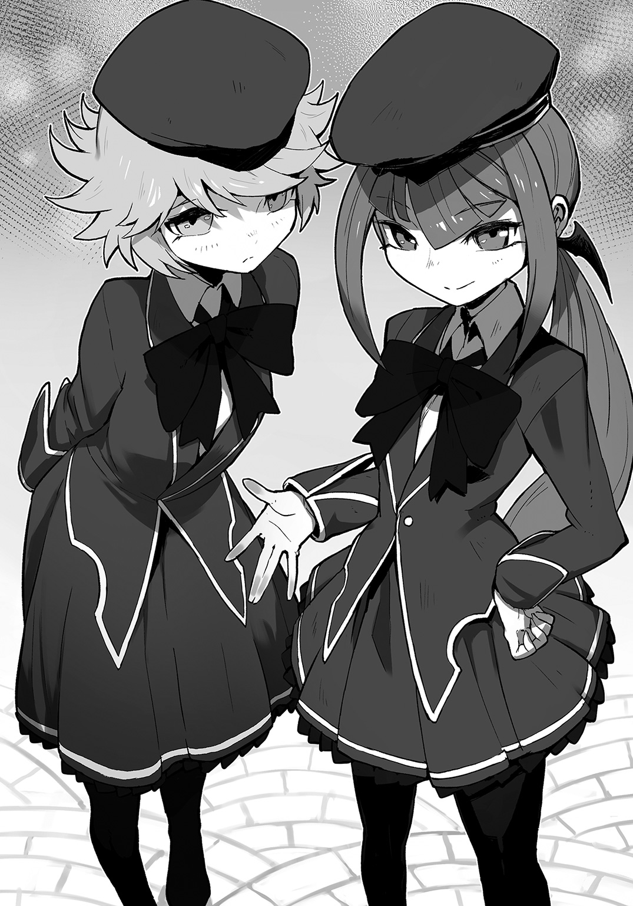
「するわけないわ。リーゼルも、今日は気合いれるのよ？」
「無論ぞ」
こそこそと二人でそんなことを言ってる姿、いじらしい。
「ん......？」
だが、なんか妙な違和感が......
「あ、あれぇ......？」
この二人、俺を、見てくれてない気がするんだが。
あ、このパターンって、まさか......
クラーラが、じりじりしながらヨーハンに尋ねる。
「で、おじい。フィスト家が仕える、新しい魔王様って、どこ？」
勇者到着まで あと 69時間43分13秒
11話 魔族の双子魔術少女に、
俺のおもちゃをプレゼントしてもよいだろうか
前回までのあらすじ。
かわいい双子の魔術師が、俺を無視する。
あらすじおわり。
「で、おじい。フィスト家が仕える、新しい魔王様って、どこ？」
「皆無ぞ」
クラーラとリーゼルは、まるでアイドルオーディションに挑む直前のように、やる気をみなぎらせていた。
「わたしたちは、魔王様がわたしたちの魔術を見たいっていうから来たのよ？」
「トイレぞ？ 魔王様も緊張ぞ？」
「まさか、このフィスト家の魔王よ？」
だがこの双子魔術師、目の前にいる俺が、やっぱりどうやら眼中にないらしい！
「............なっ」
た、たのむ！ 紹介してヨーハン！
俺のこと早く紹介して！
チラっ......
あ、だめだ！ ヨーハン、孫にすごいデレデレだ！
しばらくこれ、執事の爺ィは使い物にならんぞ！
......しかたない。
「あのー......」
魔族の双子少女が、初めて俺の存在に気づいたかのように、横目でこっちを見た。
「魔王の、フォースタス・フィストです。よろしくおねがいします......」
「は......？」
名乗った俺を見るクラーラとリーゼルの肩が揺れ、
「おじい......？ え、冗談......？」
「本当でございます。こちらが、『十二斂魔王トーナメント』にフィスト家代表として出場される魔王、フォースタス・フィスト様でございます」
「はぁああああッ!?」
やっぱ普通はこうなっちゃうんだね......!!!!
「人間じゃん！ サルじゃんッ!! そもそも、なんでこんなサルがここにいんの!?」
「絶句ぞ」
うわぁ、かわいい双子に侮蔑の視線を向けられると、人ってこんな気持ちになるんだぁ......。
「行こ、リーゼル。ばかばかしい」
「帰宅ぞ」
しかし、ここで引き下がることはできんのだ！
「ちょっとまったぁぁあああああッ！」
特に、『子供』には!!
「......なによ」
「......なにぞ」
「俺、二人に渡したいものがあるんだ！」
「はぁ......？」
俺は竹細工っぽい籠を、壁沿いの棚の上から手に取り、
「......【再構成】！」
簡単なおもちゃを、作り出す。
「これ、なんだけど」
双子の魔族少女二人に、竹とんぼを一つずつ、差し出した。
「なにこのゴミ」
「クズぞ」
「ゴミでもクズでもない！ 見てろ！」
竹とんぼこそ、俺が子供の頃、おじいちゃんに教えてもらって初めて作ったおもちゃだった。
俺は控室から空の見える屋外テラスに移動し、
すぃふぃぃぃいいいん......っ
「どうだ！」
ついてきた双子、クラーラとリーゼルに振り向いた。
二人の視線は、ひゅいーんと空に舞い上がり、ぽとりと床に落ちた竹とんぼに釘付けだった。
「......か、か、かしなさいっ！」
「よこせぞ」
俺から懐かしおもちゃを奪い取った二人は、さっそく真似して空に飛ばそうとするが、
「お、おかしいわね」
「不満ぞ」
竹とんぼは、へろへろと乱れ飛び、舞い上がらない。
「いいか、もういっかいやるから、よくみてろ」
すっふぃぃぃいいいいいん......！
俺は背筋もまっすぐ、自分を竹とんぼ飛ばしマシーンと化し、コツを伝授した。
「なるほどね」
「簡単ぞ」
すふぃぃいいいいいんっ！
ふぃああああああんんっ！
「みて！ みてリーゼルっ！ 私の方が飛んだわっ！」
「否ぞ、我のが華麗ぞ」
広いテラスを、一本の竹とんぼを追い掛け走り回る双子の魔法少女。
びゅぅぅいいいいいいん...っ！
ひゅひゅひゅひゅひゅ......っ！
しゅしゅしゅしゅしゅしゅ......っ！
ぴゅいぃぃぃぃいいんんっ......っ！
「ふぅ......はぁ......」
「......くっ、......くっ」
やがて、かわいい双子は、前髪を汗でおでこにへばりつかせ、息も絶え絶え、涙目になってへたり込むように、床に座り、
「なにこれ、ちょーツマンナイんですけど」
「退屈ぞ」
「な、そうだろ？ それ竹とんぼっつってな？ これがなかなか奥が深......って、え？ うそだろぉぉおおおッ!? ふたりとも、呼吸困難になるくらい笑いころげて、咳き込んで苦しさのあまりに、そうやって座り込んだんだろ!?」
「はぁ？ 私たちが、いつ？ いつそんなことした？」
「知らぬぞ」
「じゃあ返せ！ 握りしめてるその竹とんぼ返せ！」
「いやよ!! これは学院のみんなに自慢するんだから！」
「鼻高々ぞ」
「く......っ、そんなに気に入ってくれたなんて、俺、すっごくうれしい......っ（びくびくっ）」
だめだ、ニヤニヤとまらん。
やっぱ、おもちゃではしゃぐ子供たち、サイコーです......！
「でも、そうね。フィスト家のものとして、サルからもらいっぱなしってのも、気分が悪いわ」
「最悪ぞ」
「代わりに、このクラーラ・フィスト食べかけのスコーンをさし上げるわ。感謝しなさい、ほら」
「至高ぞ」
「いらない！ そんな至高のメニューはいらない！」
俺は顔に食べかけスコーンを押し付けてくるクラーラにスコーンを押し返し、
「けど、もしリクエストしていいなら、俺に魔術を教えてくれないか？」
「はぁ？」
「面倒ぞ」
「もう一個ずつ、竹とんぼやるから」
「ちょ、ちょっと待ってなさい......？」
クラーラとリーゼルは、俺に背を向け、
「（どうする!? リーゼルはどうしたらいいと思うっ!? これもう一個くれるって！）」
「（チャンスぞクラーラ。このタケトンボがあれば新学期、我々は学院のスターぞ）」
「（それしかないようね......）」
振り返り、髪をなびかせた。
「仕方ないわね。特別よ？」
勇者到着まで あと 69時間６分41秒
12話 ついに魔術を
この目で拝見してしまってもよいだろうか
「仕方ないわね。特別よ？」
「稀有ぞ」
屋外テラスの開けた場所に、クラーラが進み出た。
「魔術っていうのわね、いい？ いくら覚えようとしたって、使える奴には使えて当たり前だし、使えない奴には使えないっていうシロモノなの。だからまずは実際に見せてあげるわ。本物の魔術というものを」
「クラーラが先ぞ？」
「じゃあ、私が炎属性と土属性を見せるから、リーゼルは水属性と風属性を頼むわ。得意でしょ？」
「ラジャーぞ」
「じゃあ、いくわよ。よく見てなさいよ、あんた。百聞は一見にしかず、一回しかやらないから」
ん？
クラーラが両手を胸の前に持ち上げた時だった。
今から始める武道の演舞に全神経を集中するように腰をかがめた俺の視界に、なにか邪魔なものが重なった。
モッチーではない。モッチーは画面端でごろごろしている。
見えたそれをたとえるなら、半透明な、樹木の影絵？
クラーラが広げた両手の中に、立体的な、もち◯ちの木みたいなものが出現した。
すると不意に、複雑な流線型の樹形図っぽいものが、白く縁取られ、
■ ■ ■ ■ ■ ■ ■ ■
魔素契約樹
属性： 火炎魔法
等級： 初級
名称： 操火
効果： 自然の火を自在に操る
■ ■ ■ ■ ■ ■ ■ ■
【大百科】が発動したのか、インフォメーションが出た。
そして、樹形図の根から吸い込まれ、太めの幹を登っていく怪しい光エネルギーらしきものに、
■ ■ ■ ■ ■ ■ ■ ■
魔素
■ ■ ■ ■ ■ ■ ■ ■
という表記が出ている。
......ふむ、
《＃ トロフィーを獲得しました♪》
お？ 俺の情報化視界の右上に、メッセージが現れる。
《＃『プラチナ』 魔素の解析者》
プラチナトロフィー？？ 結構これ、レアなことなのか......。
《＃ トロフィー獲得リワードにより【魔素知覚】を獲得しました。さらに【魔素知覚】デミスキル【魔素契約樹知覚】を解放します》
これはわかりやすくなった！
......なるほど、魔法を使うときには、まず、魔法陣のように、空間へこの【魔素契約樹】を生み出して、
そこに【魔素】を走らせることで、魔術を発動させるしくみなのかな？
これ、知覚できるようになって、よかった。
だって、
一言、いわせてほしい。
美しい。
【魔素契約樹】
それは、俺もいつか、こういうおもちゃも作ってみたいと思わせる、無駄のない機能美＝デザイン性を持つ、考えるまでもなく製作者の思想を感じさせる一品だった。
クラーラが生み出した【魔素契約樹】が、彼女の影から、彼女の体内に蓄積された魔素を吸い上げ始める。
そして根から幹を登るクラーラの魔素は、予想通り、枝葉の先へと渡り、そこまでたどり着くと、赤い果実を実らせた。
瞬間、毛を逆立てるような力の波が、俺の神経を撫でる。
「んっ？？」
「ふふふっ、どうやら感じたみたいね、私の魔力。その質と量を」
クラーラが薄く笑い、そして、その果実が熟れて、弾けると同時。
クラーラの胸の前に、ぼわっと赤い炎、ひゅぼひゅぼと空中に現れ、円の形を描いたり、正方形の箱形になったりしている。
「......ほう、それが炎属性初級、《操火》か」
「（フォースタス様、お約束の、例のあれを）」
俺の背後から、ヨーハンの小声が届く。
おっと、そうだった！
「そ、それは、まさか、無詠唱ッ!? す......すごいじゃないかクラーラ！」
「あんたにも、それくらいはわかるのね......」
クラーラは赤い髪をファサっと搔きあげ、
「たとえそれが炎系魔術の初級、《操火》であっても、無詠唱で使うとなると、それ相応の腕が必要」
「お、おう......っ」
彼女が器用に炎を操るたびに放たれる微細な魔力は、さっきみたいにこそ、俺の神経をざわめかせないが、確かに魔力の流れとして感じることができた。
「ふふふ、ちなみに私は、中級の《火炎噴射》まで無詠唱でいけるわ」
「（フォースタス様）」
「えっ？ あ、う、......噓だろっ？ そ、そんな話、聞いたこともないぞっ!?」
......こんな感じでいいだろうか！
ちらッ
クラーラさん、俺から目をそらして、『こんなの大したことないけどフェイス』してるけど、
全身からあふれるどや汁すごいいいいいいッ!!
「ふふふ、まあ、さすがのわたしも、上級魔法の《爆焰玉》は無詠唱とはいかないけど、見たい？」
「ぜひ!!」
「言っておくけど、学院でもこれが使えるの、一握りの教師だけだから」
勇者到着まで あと 68時間50分34秒
13話 基本魔術の概念を
根底から理解してしまってもよいだろうか
彼女は《操火》を消し、さらに両手を広げ、空間を練るようにかき混ぜた。
クラーラに重なるように、先ほどと同じような樹形図が生み出される。
俺の【情報化視界】の中に、再び《操火》と表示された。
ん？ これ、さっきの初級魔法だよな。
クラーラは上級魔法を使うって言ってた気が......。
まあ、黙って見ていよう。
さっきと同じように、幹にエネルギーが注がれ、複雑な枝をめぐって果実を作る。
これもさっき見たのと同じだ。
そして果実が落下し、赤い炎が生まれるかとおもいきや、【魔素契約樹】の根本にあった影へ落下した果実は、そこで芽をだし、今まであった初級の影樹を飲み込むように成長、さらに複雑な樹形図を生み出した。
「ということは......」
予想するに、たぶん、これが火炎の中級魔法の生成過程だろう。
■ ■ ■ ■ ■ ■ ■ ■
魔素契約樹
属性： 火炎魔法
等級： 中級
名称： 火炎噴射
効果： 魔力の火を任意の場所から任意へ地点へ吹き付ける。
■ ■ ■ ■ ■ ■ ■ ■
やっぱり。
......と、なれば、
予想通り、吸い上げられた魔素は、さらに複雑な樹形図をめぐり、初級より大きい、おそらく中級魔法の力を封じ込めた果実を実らせ、魔力を振りまきながら、ぽとりと落下する。
が、今度は、新たな芽が出てくる様子がない。
『――なおも附す』
クラーラが、このとき初めて、詠唱を開始する。
それと同時。
落下していた中級魔術の果実から芽が出て、にょきにょきと樹形図が育ち始める......！
『陽の黒点よ 我が宿願となり 滅せよ......』
魔素が幹と枝葉を満たし、オレンジ色の果実が実り......
弾けた。
「っ！」
クラーラの腕の中に、太陽のように白熱した球体が、生まれているっ！
《操火》とは比べようもない魔力だった。
子供ならこの感覚だけで泣き出すだろう。
まるで目の前で巨大な和太鼓を乱打されているような、魔力による圧迫感！
『――病魔のごとく!!』
赤髪の魔族少女より放たれた火属性上級魔術《爆焰玉》は、白い尾を大気に残し、飛び、景色として見えていた湖の表面に着弾。
突き刺さった湖が、大爆発を起こした。
「うぉおおおおおお......ッ!!!! すごい......っ!!」
「ふぅ......ま、ざっとこんなものね」
なるほど、なるほど......。
「一つ訊きたいんだがクラーラ。上級魔法を使うときには、今みたいに初級の魔素契約樹から中級を経て、上級まで一段ずつ上がっていかなきゃなんないのか？」
「......は、は?? ぷろ......とまぐ、なに？」
「いや、だから、縦になった樹形図みたいなやつ。にょきにょき薄黒い。魔素を通して魔法を作る魔素契約樹だよ。生やしてただろ？」
「ちょ、ちょっと、リーゼル、こいつ、なに言ってんの？」
「たぶんクラーラの魔法がすごすぎて、ただの知ったかぶりぞ」
「でも説明もしてないのに、魔術が初級から段階を上げていくってこと、知ってるんだけど」
「見たまま言っただけぞ、聞きかじりぞ」
双子は再び、なにやらコソコソ話。
しかたない。百聞は一見にしかずと、目の前のコーチもおっしゃっていたことだ。
「まずは、こうか？」
俺は、【玩具創造】を発動させ、試しにクラーラと同じように、空中に【魔素契約樹】を描き出す。
ふむ、ここまでは竹とんぼと同じ要領だな。
【魔素契約樹】の素材は、いまいち、よくわからんが。
「どうだ、うまいもんだろ」
俺はその【魔素契約樹】、影絵で出来た樹木を双子の魔族少女に自慢するが、
「な、なにが？」
「不審ぞ」
「......いや、だから、......まあいいか」
二人にとっては当たり前のものを見せて機嫌を悪くさせたのかもしれない。
クラーラと同じ工程をたどろう。
契約樹に俺の体内の魔素を吸わせ、まずは初級《操火》の果実を根本に落とす。
成功。
中級《火炎放射》の【魔素契約樹】を作り出し、その果実も実らせ、落とす。
成功。
「よしっ」
さらにこの果実を、【魔素契約樹】に育てれば、
――成功。
《爆焰玉》果実の出来上がりだ。
俺はその金色の果実を、自分の手のひらにのせ、握り、
「フレイムゥゥゥ・ストラァァァイクッッ!!」
さっきの湖に向けて、ぶん投げた。
きぃんッ！ と、音を立てて白熱球が昼間に光線を描いて湖に突き刺さる。
ズゴォォオオオオオオ......ン......
湖面が、さらなる大爆発を起こした。
「なるほど、よくわかった」
俺は、肩を回して、右手の感触を確かめる。
この【魔素契約樹】ってやつ、実にうまいことできてる......。
ちょっと、感動した。
「......な、な、なにやってんのあんた!!」
「は？」
血相を変えたクラーラに、俺の中の余韻が消し飛ぶ。
「み、見ただけで......？ 私のを、見よう、見まねで......、あまつさえ、火属性の上級魔法......《爆焰玉》を、......む、無詠唱っ!?!?」
勇者到着まで あと 68時間43分32秒
14話 とりあえず魔術が使えるようになったので
トーナメントにわくわくしてもよいだろうか
「み、見ただけで......？ 私のを、見よう、見まねで......、あまつさえ、火属性の上級魔法......《火焰玉》を、......む、無詠唱っ!?!?」
「いや、無詠唱っていうか......なんて説明すればいいんだ？」
この感動、すぐには言葉にできそうにない。
だってこれ、物騒は物騒だけど、やりようによっては、すごい『おもちゃ』になりえるんだが......！
「はっ」
いかんいかん、もともと魔術は魔王トーナメント用に覚えようとしたもの。
今おもちゃを作りたい欲求は、ひとまず横に置いておくのだ......！
「あ、でも、これでなんとか、戦えるように、なったのか......？」
「は、はぁっ!? たた......かう??」
「なんで身構える!? ちがうぞクラーラ！ 言ったろ？ 俺はただ、このままだとトーナメントが不安だから、魔術を習いたいんだって」
「い、言ってないわよ！」
「あれ？ そうだっけ？」
俺も言ってなかったかもしれんが、まさか、ヨーハンおじいちゃん、孫達に肝心なことを伝えていないのか......？
「あんた、ただの人間じゃないわね！ なにもの......っ!? ま、ま、まさか、あんたが、ゆ、ゆ、勇者......!?」
「殲滅ぞ！」
おかげですっかり双子魔術師に警戒されてしまっているのだが。
というか、子供魔族は、勇者怖いのな......？
「いや、だから、俺がフィスト家の魔王なんだって」
「ほ、本当......なの？」
「うん、まあ」
「く、く、う.........」
クラーラは奥歯を嚙み締め、うつむいてしまう。
その可愛らしい頭のなかで、なにかがせめぎあっている。
そして、
「......し、信じないわッ！ そんなこと！ あんたが魔王!? サルのガキのくせに!? ふんっ！ リーゼル！」
「私の番ぞ」
こうして俺は、天才魔術師の双子に、それから交互に、水属性、土属性、風属性の魔法を見せてもらい、
「おーッ！ 《飛翔》って、めっちゃ便利だな！」
リーゼルが見せてくれた風属性上級魔術、《飛翔》を無詠唱で使ったところで、
「う、うわああああああああんんんッ！」
「ぐ......ぐすっ、ぐす......プライド、ズタズタぞ」
ついに双子が崩壊した。
「しまった!!」
宙に浮かび、テラスを見下ろしていた俺は二人のもとに降り立ち、
「す、すまん、調子にのった......」
「うるっさい！」
「黙れぞ」
目の前に現れる【魔素契約樹】の造形美に、俺は夢中でそれを取り込んだ。
だが、結果として、彼女たちの得意なものを全部奪ってしまったことになったわけで......。
「ねえ、ほんっとうに、あなた、今まで魔術を見たことも、使ったこともないわけ!?」
「お、おうっ、なにしろ、さっきこの世界に生まれたばっかりだからな」
「んっ、ぐっ、ぐぐぐ......」
クラーラは赤くて長い髪を、帽子が床に落ちるのも構わずかき回し続け、やがて、
「しかたないわね、あんたを、フィスト家の魔王だって、認めてあげてもいいわっ！」
「不承不承ぞ......」
「え？ い、いいのか......？」
「フィスト家も、あんたみたいのが魔王なら、あ、安泰かも、しれないし......」
「安堵ぞ」
ふぅぅぅ......、なんとか、俺が魔王だと二人に信じてもらえたようだ。
頑張ったかいが、あったな！
「というか、さっきからあんた、『ぷろとま』とか、『ぷろとまぐらむ』とか、なんのことなの？」
「んっ？」
ここは、言葉を慎重に選んだほうがいいだろう。
「こう、魔法使うときに、見えるだろ？ こういう影絵の木みたいのが」
俺は竹細工の残りで、実際に物理で同じものを作って見せるが、
「な、なんなの？ それっ」
クラーラとリーゼルの、この瞳の輝き方は、おそらく初見の好奇心......というか、絶対にこれを新しいおもちゃと勘違いしてる。
ふむ。
《＃ どうやら、本当に【魔素契約樹】は富士雄にしか見えてないみたいですね》
これはそのようだよなぁ......。
そればかりか、魔素も見えていないらしい。
ただ、果実状態の時から発生する『魔力』は、感じているみたいだな。
ガソリンは見えてないけど、燃料が燃え上がる時の炎の熱は感じてるってことなのか......？
しかし、【魔素契約樹】を魔術学校のエリートでも見たことがないとなると、どうやって説明したらよいものか......。
「フォースタス様、そろそろ試合の用意を」
見れば控室の入り口で、フィスト家の文系家臣の一人が膝をついていた。
「えええええええっ！ 待ってよ！ フォースタスにはこれからちゃんと説明してもらうんだから！」
「バッドタイミングぞ」
「よし、クラーラとリーゼルには今度、ちゃんと説明してやるから。また、あとでな」
「絶対よ？ 約束なんだからね!?」
「確約ぞ」
「ああ、お前たちにはもっとおもちゃを作ってやりたいし、教わることも多そうだ」
俺は左右から俺の腕をつかんでくる双子の頭を、ぐりぐりと撫でてやる。
「そうよ！ 魔術にはまだ上級の上に、秘伝級もあるんだから！」
「光属性と闇属性も存在ぞ」
「あ、あと、合同魔法とか！ 本当はもっともっと、すっごい奥が、深いんだから！」
「まじでか！ じゃあ、あとで絶対な!!」
「うん！ 絶対がんばってね！ 負けたら許さないわよっ？」
「必勝ぞ！」
「「「おおーっ！」」」
俺たちは拳を天井に突き上げた。
それから俺は、双子魔術師と別れ、迎えに来た文系家臣とヨーハンの後をついて、宮殿内を中央へと移動する。
「モッチー、俺、おもしろいことおもいついちゃったぞ？」
《＃ え？ なんですかなんですか？ 教えて下さいっ》
「ふっふっふ、それは見てからの、お楽しみってことで！」
すごい予感がしていた。
この世界の魔術、絶対におもちゃづくりに応用できる......！
俺は右手に、【魔素契約樹】を一本、生み出して目の前で眺める。
『それでは、入場してください！』
「へっ？」
薄暗くて細い通路が終わっていた。
『Ｃブロック 二回戦 フィスト家魔王！ フォースタス・フィストの登場です！』
階段を登った俺は、コロシアムの真ん中にいた。
「は？ ちょ、いきなり!? メモしたいこととか、一杯あるんだがぁああっ！」
勇者到着まで あと 67時間39分12秒
15話 改めて自分のステータスを
他の魔王と比べてみてもよいだろうか
「はぁぁああ......、くぅぅ......っ」
俺は陽の下で大きく伸びをした。
しかたない。
もう少し時間があればとも思うんだけど、あとは実際にやってみるしかないか......。
《＃ 富士雄、深呼吸！ 深呼吸しましょう！》
「な、なんだよモッチー、落ち着けって！」
《＃ だって、すごい観客ですよ!?》
「いや、わかるけど！」
俺の声も大きくなった。すごい賑わいだった。
「それだけ注目されてんだろうな」
コロシアムの真ん中からの景色は、サッカー中継で選手が見ている視線からスタジアムを一望するシーンそのままっていうか。
観客席の雰囲気も、人間が魔族に置き換わっただけで、よく似ている。
旗とかも振ってるし。
なんかこう、全体的に若者が多い気がするんだが、そういうのも似てるのかな。
《＃ 富士雄は、まさか、緊張とかしてないんですか......？》
「してるけど。フィスト家はこれ、チケット取れてんのかな......てか、チケット？」
十二家の魔族がひしめいているとなると、こっからフィスト家を探すのは無理そうか？
んー.........。
《＃ もうっ、集中してくださいっ！ 富士雄はさっきからなにをしてるんです!?》
「え？ ああ、おもちゃ作り」
俺は指折り、左右の両手を閉じたり開いたりする。
《＃ い、今ですか......？》
「モッチー」
《＃ な、なんですか......？ 富士雄》
「ほんとに【玩具創造】のスキル、サンキューな。すっごい、わくわくしてる」
《＃ お、おねがいですから富士雄、今は目の前の試合に集中してください！》
「フォースタスさまーッ！」
「ん？ この声......」
方向は真横、右？
聞き覚えのある少女の声音に振り向けば、
「負けたら、ゆるさないからーっ!!」
「必勝ぞー!!」
「おおおおおっ!! クラーラ！ リーゼル！」
早速の応援！
ということは、あそこがフィスト家の席かな？
おお、みんないる。イケメン将軍のフィリップもいるし、
脳筋のバンベルグ......は、めっちゃ不機嫌そうだ......が、クラーラとリーゼルには懐かれてるみたいだ。
俺は手を振るが、双子の魔術師以外、なんだかノリが悪いな！
あれ？ 俺が出場するの、実は不承不承で、あんまり認めてないの......？
『それではＣブロック第二試合ディェースっ！』
「おっ？」
拡声された音がスタジアムに響いた。
『魔王同士が競い合う、「十二斂魔王トーナメント」もいよいよ佳境!!
お次の試合は、
『魔眼のアランドラ』ことアランドラ・トアロ
ヴァーサス!!
『生まれたてのフィスト』こと、フォースタス・フィスト！
注目の試合、まもなく始まりマァースっ！』
「こっちのノリは、いいんだな！」
俺はアナウンサー席っぽいものをスタジアムに探す。
『実況は引き続き「鬼火のティーパイレン」閣下に魂を捧げるこのフランベルジュ』
客席中段、マイクっぽいものを片手につかみ、テンガロンハットをかぶった金髪の女がテーブルの上に足をのせていた。
『そして解説は、この「ガリアッレ・アレプテン」配下、メルドー・アレプテンが務めようじゃぁないか！』
隣に、テーブルに肘をついて顎をのせ、白衣を肩に引っ掛けたメガネの魔族。
年齢は外見からすると、どちらも元の俺と同じ28、29ぐらいか？
『しっかし、うぷぷぷ......っ！ 見て！ 見てぇ！ ルックディス！ フィスト家！ もはや「十二斂魔王」をあきらめたと考えてよさそうディェースっ！』
ん？ なんだか、スタジアムがえらく沸いてるんだが......。
「あ、そうか、俺が人間の子供だからか」
なんか照れるな......。
「おー、クラーラとリーゼルが暴れとる」
実況席にカチコミに行こうとする双子の魔術師を、バンベルグとフィリップがどうにか取り押さえている！
がんばれフィスト家！
『そして相手はＣブロック優勝候補！ あのメイ・ファーも一目置く伊達男！ 「魔眼のアランドラ」！ 今日も未来視の「魔眼」が炸裂するのか!? シード配置とも言えるまさに天の配剤！ 運命はこの魔王に微笑んでいるに違いない！ トアロ家は実にラッキーディェース!!』
『はっきり言ってトイレタイムだ。オレも失礼しよう。この試合に解説などいらないだろうからな......』
『ここで解説のメルドーが離席ッ！ これは試合前から波乱ディェース!!』
スタジアムは大爆笑に盛り上がっている。
「聞いての通りだ。運が悪かったね。フィストの」
俺の前方に、腰までのストレート銀髪を持つ、背の高い青年が現れていた。
「あ、は、はぁ......」
男の俺ですら、見とれるッ！
これが魔族の美貌!? ちょっとヤダ、なに？ こいつ笑えるくらいかっこいいんですけど!!
灰色がかった青い瞳とか超キラキラしてるし!!
全体的に仕立ての良い服ってのは一目瞭然だし、頭の狩人みたいなツンと尖った帽子が、いかにも貴族！
しかも黒い毛皮のファーとかで縁取られたベストに細いスラックスは、もうこれちょっとしたパーティにいける......というか、きっとこのトーナメントを、彼はパーティだと実際に思ってそう。
なんか、そういう表情だ。
爆発しよう！
「ボクは今日、ここに遊びで来ているわけじゃないんだ。せめて、すぐに終わらせよう」
■ ■ ■ ■ ■ ■ ■ ■
名前： アランドラ・トアロ
種族： 魔族
クラス： 魔王（トアロ家魔王）
〔戦〕 ２００００
〔謀〕 ８０００
〔非〕 ３９
■ ■ ■ ■ ■ ■ ■ ■
俺の【情報化視界】の中に、魔王の表示が立ち現れ、美魔族青年を白く縁取り、その能力を華麗に表示した。
俺、パーカーとジーンズのしま◯らルックなのに！
「魔族の世界は力がすべて。キミでは勇者を、この大陸から退けることができない」
あ、あれー？ しかも待って？ ぱっと見、俺のステータスより、強くないか......？
俺はとっさに、自分のステータスを立ち上げる。
■ ■ ■ ■ ■ ■ ■ ■
名前： フォースタス・フィスト
真命： 米村 富士雄
種族： 人間
クラス： 魔王
〔戦〕 ２１０００
〔謀〕 １００００
〔非〕 １８６
■ ■ ■ ■ ■ ■ ■ ■
「モッチー！ これ、どーゆこと!?」
『それでは、試合、スタートディェエースッ!!』
勇者到着まで あと 67時間22分01秒
16話 とりあえずは魔王相手に
拮抗してみてもよいだろうか
『それでは、試合、スタートディェエースッ!!』
「せめて今日の夜、ボクのワインセラーから祝杯の一本を選ぶ手間が愛おしく感じられるくらいのあがきは見せておくれよ」
「ま、まてッて！」
俺の戸惑いなど、トアロ家の魔王だという美青年魔王、アランドラには関係ないようだった。
■ ■ ■ ■ ■ ■ ■ ■
魔素契約樹
属性： 火炎魔術
等級： 初級
■ ■ ■ ■ ■ ■ ■ ■
魔素契約樹
属性： 火炎魔術
等級： 中級
■ ■ ■ ■ ■ ■ ■ ■
魔素契約樹
属性： 火炎魔術
等級： 上級
名称： 爆焰玉
効果： 魔力による爆撃。火の玉を着弾させ、任意の範囲を焼きつくす。
■ ■ ■ ■ ■ ■ ■ ■
生まれた表示が瞬時に書き換わり、あっという間に俺の【情報化視界】の中に、この表示が４つ！
なんてなめらか、一瞬の魔術ギアアップ!!
つまりは４連並列の《爆焰玉》無詠唱ッ!!
来るッ！
４匹の黄金色した猛禽類が俺めがけ殺到するかのよう、火焰球!!
「だれもキミを責めることはないだろう。安心してお逝き」
俺は思わずパーカーのフードをかぶって背を丸めるが、
「これじゃ無理だよなっ！」
ズカカカァッ！
閃光、燃やし溶かし尽くす轟音！ もうもうたる白爆煙が立ち上がる......!!
「あっぶなぁああ......ッ！」
俺はさっきまでいた場所から圧に押されて大きく飛び退き、手足を地面についてカエルのように、顔だけ上げた伏せ状態。
「......な......ッ!?」
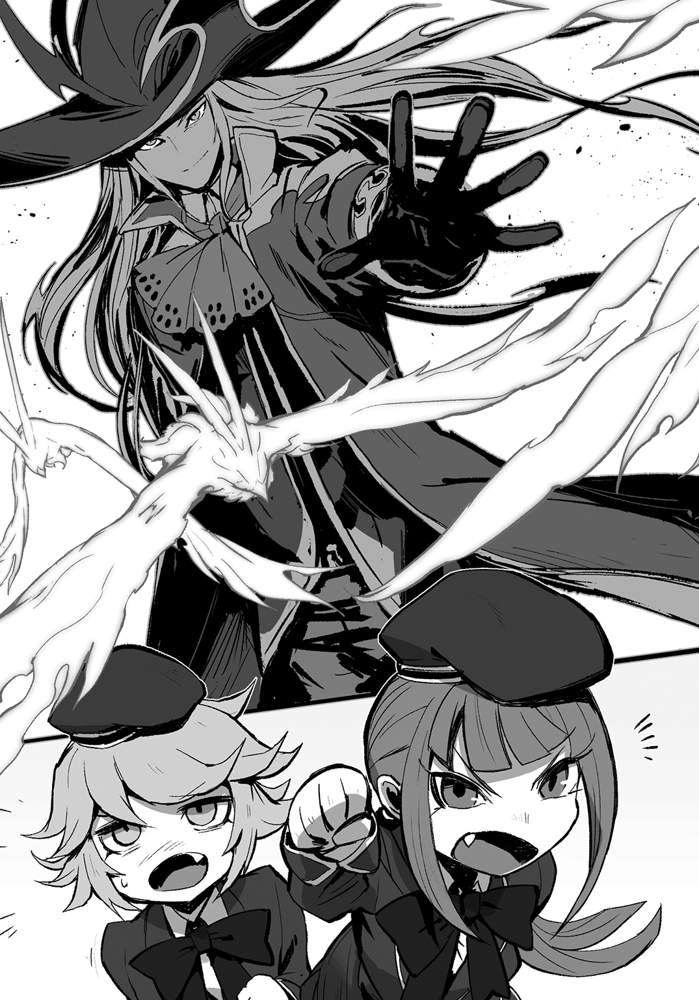
『これはどうしたことディェエエース！ 消し炭になったと思われたフィスト家魔王！ まだ生きていたぁぁああ!! これにはアランドラも呆然ッ!!』
客席もどよめき過ぎだろ。
でも、まあ、
「俺も超びっくりしてる。アランドラ・トアロだっけ......」
あまりの出来事に、どくどく脈打つ心臓が、身体中の穴から不意に「こんにちは！」しそうになっていた。
「いやあ、ほんとお礼を言わなきゃな......あの双子魔術師に。火属性は、水属性でリジェクトできるって教えてくれてなかったら、今頃なぁ......」
慎重に立ち上がる俺を取り巻いていた水蒸気が晴れてゆく。
美魔族の青年は、前髪をかき上げ、
「......まさか、キミのような人間の子供が、上級魔術を無詠唱で使えるとは思わなかった。どうやら今夜は、美味しいワインが飲めそうだね。素晴らしいリジェクトだ」
「......本当に一部の人しか信じてくれないんだけど、俺、魔王らしいんで」
『フィスト家魔王！ なんとも控えめディェエース!! なかなかやるッ!!』
俺が覚えた技術は、なんとか優勝候補の１人らしい魔王の気分をアゲさせることくらいはできたようだ。
だが実のところ、俺が使ったのは魔術の無詠唱行使ではない。
それはさっき双子のところでも使った、俺の感覚では、たぶん、それでもギアを上げていくしかない無詠唱をも上回る技術、その応用だった。
俺は控室からこのスタジアムに来るまで、複数の【魔素契約樹】を生み出しては、そこに実った魔術の果実を、弾けさせることなく右腕内部に保存キープしておいたのだ。
どうだ！
びっくりしただろアランドラ！
おまえには教えないけどな......!!
「でもこれ、おもちゃの材料に使おうと思ってたんだけどなぁ......!!」
今ので、俺はあらかじめ作って保存しておいた水属性上級魔術、《氷葬》の果実を４つほど使ってしまっていた。
火属性上級魔術《爆焰玉》に対応するのが、
水属性上級魔術《氷葬》だった。
アランドラが無詠唱、挨拶もなしに放った４つの魔弾。
熱破壊を俺のみに撒き散らす上級火属性魔術を直で撃墜するように、俺は右腕から、触れた物体を一瞬で超硬度を持つ氷の棺桶に封じ込める《氷葬》の果実を放ち、
魔術を相殺。
無効化した。
「お礼もかねてあの双子に、どうにかしてこの技術を教えてやりたいな......」
すでにこれ、魔術じゃないかもしれないが......。
俺は並んだ弾倉を整理するように、各種の魔術を封じ込めた果実を右腕の中でクルクルと並べ直す。
そしてふと、
「（あ、モッチー、ちょっと頼みたいことができたんだが......）」
とあるアイディアが浮かんだので、おもちゃの女神に相談してみる。
勇者到着まで あと 67時間19分48秒
17話 対戦相手の能力を
丸裸にしてもよいだろうか
「（あ、モッチー、ちょっと頼みたいことができたんだが......）」
とあるアイディアが浮かんだので、おもちゃの女神に相談してみる。
《＃ な、なんですか？ 富士雄っ！》
「（この【玩具創造】を使った【魔素契約樹】の生成→魔術果実の体内保存→属性階級別整理っていう工程をプロトコル化して、オリジナルの【デミスキル】にしたい。......この企画書、通りそう？」
《＃ い......、一発ＯＫですっ!! 【玩具創造】によりデミスキルを作成します！ スキル名はなんですか？》
「派生デミスキル名は、そうだな......」
俺は、こちらを警戒するアランドラをちらっと確認しつつ、
「魔術を封じた果実、【封果】を体内ストックするデミスキル【封果チェンバー】ってことで！」
《＃ そ、それって富士雄......【だいまほうつかいステッキ】の企画書にあったアイディアですよねっ！》
えっ!? なんでモッチー知ってるの!? いやっ、あれはステッキを、さらに聖剣を模した玩具に組み込むっていう【マジックチェンバー】っていう派生商品案だけども!!
《＃【封果チェンバー】設定完了......しました!! ......わたし......わたし、この、富士雄の考え、すごく！ すごくいいと思います！ すごいです!!》
「どうやら魔王という名は、伊達ではなかったようだね」
モッチーと脳内会話しながら体勢を変えない俺にアランドラが話しかけてくる。
「ボクの名はアランドラ・トアロ。トアロ家の魔王だ。アランドラと呼んでくれ」
「俺はフォースタス・フィスト。フィスト家魔王。フォースタスでいい」
『挨拶！ 友情を芽生えさせてる場合じゃないディェエース！ 試合はまだ、続いていマァース！』
「ではフォースタス、ボクは認識を改めよう」
明らかにアランドラの雰囲気に変化が生まれる。
「おっ？」
《＃ 本気を出したようですよ!?》
アランドラが発する、魔王の、魔王たる証のような、禍々しいまでの威圧。
その正体が俺の【情報化視界】に鮮明に描かれ始める。
「あれは......、ん？ 見られてる？」
アランドラの両目が、薄暗い樹形図で飾られていた。
「【魔素契約樹】......？」
だが、俺の【情報化視界】はなんかムズムズするだけで、どんな魔術が形成されるのかを示さない。
「......でも、......あれは風属性に近い......のか？ いやぁ、どちらかっていうと、クラーラが言ってた光属性ってやつ......？」
それにしても、【魔素契約樹】といい、魔素がめぐる樹形図――
【魔素樹形図（かってに俺が命名）】って、美しいなぁ......。
《＃ ま、待ってください富士雄！ 富士雄には、あれがどんな魔術か、わかるんですか!?》
「なんとなくな。あぁ......いや、でも、あれは魔術じゃねーな」
《＃ 魔術じゃない？？》
「これ、あいつのスキルか」
《＃ ......なんで、わかるんですか？》
「わからん。なんとなくそう思う」
《＃ なん......っットロフィーを獲得しました♪》
おっ？ 毎度このタイミングもわからん。
というかモッチー、スキル【天の声】に操られてないか......？ 今、声を乗っ取られただろ......。
システムボイスとして使われるモッチー、かわいいです。
《＃『プラチナ』 スキル看破者》
プラチナ！ 俺これで二つ目！
《＃ トロフィーリワード 【情報化視界】制限解除、デミスキル【スキル看破】が解放、及び【魔素知覚】制限解除、デミスキル【スキル構成樹知覚】が解放されました》
俺の予測、あの【魔素契約樹】がスキル関係ってのが当たったってことなのか、これ。
■ ■ ■ ■ ■ ■ ■ ■
名前： アランドラ・トアロ
俗称： 魔眼のアランドラ
種族： 魔族
クラス： 魔王（トアロ家魔王）
スキル：【未来視】【無詠唱魔術】【魔力ブースト】【剣技】【ワイン鑑定眼】
デミスキル：【口説き文句】
〔戦〕 ２００００
〔謀〕 ８０００
〔非〕 ３９
■ ■ ■ ■ ■ ■ ■ ■
つまり俺は【スキル看破】によって新たに相手の所持スキルがわかるようになったのか！
なにげに【ワイン鑑定眼】のスキルがあるってことは、本当にワイン好きなんだな......このアランドラ。
「ということは......」
たぶん、アランドロ・トアロの両目を、今やおもしろメガネのようにヤバイ感じに渦巻いている、あれが【スキル構成樹】か。
「つまり、あれが【ワイン鑑定眼】......！」
さすが『魔眼のアランドラ』という名を持つだけのことはあるな。
《＃ い、いえ！ たぶん【未来視】の方だと思います！》
「本当かなぁ......」
「ボクの魔眼には、もう見えている、キミの敗北が」
■ ■ ■ ■ ■ ■ ■ ■
スキル構成樹
スキル名称：【未来視】
属性 ： 魔眼系
等級 ： ＳＳ級（伝承級）
効果 ： 目に映る物体の超近未来を観る
■ ■ ■ ■ ■ ■ ■ ■
「本当だ！」
【情報化視界】がムズムズっとし、ついに情報が開示された。
『おおっと！ アランドラ、ここで勝利宣言ディェエースッ！ 今回も見せるのか!? 二秒先の世界を見通すという魔眼の力をッ！』
みんな知ってるのかよ!!
っていうか......
「でも、やっぱり俺には、あれがいわゆる【未来視】のスキルには見えないんだが......」
《＃ ふ、富士雄は【大百科】のスキルが示す表示を疑うんですか!?》
「いや、そーいうわけじゃないんだが......なんか腑に落ちん」
《＃ か、かと言って、富士雄をワインとして見ているってわけでは......》
「よし、モッチーが正しいか、俺が正しいか、手っ取り早く試してみよう」
勇者到着まで あと 67時間17分20秒
18話 見えているものが本当なのか
試してもよいだろうか
【未来視】ってことだから、アランドラの方から先に攻めてくるってこともないだろう。
あいつの性格からして、俺の行動を全部【未来視】で予測し、先回りして、すべてをリジェクトすることで、まずは自分の力を俺に見せつけ、こっちのプライドをへし折ってくるはずだ。
とりあえず、この流れを利用しよう。
俺は、パーカーのポケットに腕を突っ込んだままだと、なんとなくアレなので、それっぽく構えてみる。
それに合わせて、アランドラの目を覆う【スキル構成樹】に魔素が流れ込む。
よしよし、警戒しとる、警戒しとる。
アレが本当に【未来視】のスキルなのか。
そうだな......、よし、とりあえず俺の魔術をアランドラに連打してみよう。
【封果チェンバー】のストックは使わない。
そもそも、まだそんなに【封果】を溜めてないのだ。
「いくぞ、アランドラ」
俺は自分の足元から、まず、火、水、風、土の各属性の上級魔法【魔素契約樹】を一本ずつ【玩具創造】で生み出す。
まだ魔素は流さない。
ふっふっふ、ようやく【玩具創造】のチート性能をフルで使う時がきたかな。
俺は、その４本の各上級魔法の【魔素契約樹】を、
「............っ!!」
【玩具創造】のデミスキル【増産】を使い、一気にスタジアム中に茂らせる！
ザワワッ！
と、フィールドが薄暗い森になる。
だがその光景に、誰も反応しない。
【未来視】を持つ、アランドラさえも。
まあ、やるだけなんだが......っ！
俺は視界いっぱい、数百本の【魔素契約樹】に、足元から一気に魔素を注ぎこむ。
スタジアムが、俺だけに見える果樹園となった。
瞬間、
アランドラの【未来視】を形成する【スキル構成樹】が、白く輝いた。
「すッげえ！ 全部リジェクトしてる......ッ!!」
美青年魔族が持つ体内の魔素が【未来視】に注ぎ込まれ、輝くたびに、アランドラに向かって四方八方から乱打される
《爆焰玉》の灼熱魔弾、
《氷葬》の超硬氷塊、
《飛翔斬》の見えざる真空刃、
《鉄鎧攻》が生み出した鉄のゴーレムが、
片っ端から無効化されてゆく。
無詠唱で、果実が成るとほぼ同時に放たれ続けるアランドラの対応リジェクト魔術。
さすが魔王！
俺、魔術を初級から上級へギアアップするのとか、すっ飛ばした魔術行使してるんですけど！
それに追いつく連続無詠唱って、どういうことッ!?
そのすさまじい光景に、やかましいあの女実況も今は言葉を呑み込んでいる。
だが、これで、
「わかった。やっぱりあれは、【未来視】じゃない」
俺はなおも【増産】を加速させながら、試験結果をモッチーに報告。
《＃ えええっ!? じゃあ、なんであんな超反応ができるんですか!?》
「アランドラのアレは、あくまで擬似的な【未来視】。いわば【未来視（仮）】だ。奴は俺の魔力を捕らえて、それを知覚することで俺の次の行動を予測している！」
俺はさらに、あらゆる角度から【封果】を割り、生まれた魔術を打ち込み続け、その様子を確かめながら説明する。
「まず、アランドラはものすごく、俺の作る【封果】に反応している。双子の時に確認したけど、魔術は果実状態になった時点で魔力を放出しはじめる。あいつに見えているのは魔力、その流れだ」
完璧な未来視であったなら、まず、俺の【玩具創造】で生み出した４つの【魔素契約樹】。
なにより、魔術果樹園と化したスタジアムの異変に気が付かなければおかしい。
なのに、アランドラの【未来視（仮）】はなんの反応も見せなかった。
【未来視（仮）】を発動させるアランドラは、果実が魔力を放ってから、初めてそれに気づくのだ。
「奴はその【封果】が放つ魔力から、魔術の種類を瞬時に見分けて、無詠唱でリジェクトしてる。ほら、武道の達人は相手の重心、筋肉や骨格の動きから、次の行動を予測するっていうだろ。これは、あれの魔力バージョン。相手の魔力変化で、次の行動を予測する」
《＃ グラッ◯ラー刃◯みたいですね......》
「それから多分、俺の身体からも、わずかだが魔力が放出されているんだと思う。それこそ【未来視】と名のつく超鋭敏な魔眼じゃないと感知できないくらいのレベルで。まさに潤沢な魔王の魔素容量があってのスキルだな」
《＃ そ、そんなの、どうするんですか!? 擬似的とは言っても、現にまるっきり、アランドラさんがやってるのは【未来視（ほぼ同義）】です！》
「......じゃあ、次はこういうのは、どうかな」
勇者到着まで あと 67時間14分35秒
19話 生まれたての魔王なのに
一回戦を勝ち抜いてもよいだろうか
《＃ そ、そんなの、どうするんですか!? 擬似的とは言っても、現にまるっきり、アランドラさんがやってるのは【未来視（ほぼ同義）】です！》
「......じゃあ、次はこういうのは、どうかな」
俺は、発動中の【増産】に、同じく【玩具創造】のデミスキル、【融合】を掛けあわせた。
複合デミスキル【融合増産】。
「準備、完了......」
俺の目の前で展開される魔素契約樹《プロトマ・グラム》が絡みあうこの工程にも、アランドラは一切反応してこない。
やはり魔族には、魔力の源である魔素《プロトマ》が見えていないのだ。
魔族なのに！
ともあれ、
「【融合増産】、始動......！」
動き始める俺のおもちゃ工場。
俺の予想通り、まずは【融合】により、
《爆焰玉》と《氷葬》が融合し、
《爆焰葬》と《氷撃玉》が生まれ、
《飛翔斬》と《鉄鎧攻》が融合し、
《翔鎧攻》と《鉄翔斬》が生まれ、
そんな感じで、【融合】により新たに生まれた４属性×３属性＝12の新たな魔法と、元々の属性魔法４種類、合計16種類に増えた魔術が、
ザザワザザワッ!!
さらにスタジアム中に【増産】され、アランドラを襲った。
「ウォォオオオオオオアアアアアアアアアアアアアアアアアアアアアアアアアアアアアアアアアアッッッッッッッッッッッッッッッッッッッ!!!!!!!!!!!!!!!!!!!!!!!!」
美青年魔族の振る舞いが早すぎて残像が生まれ、半透明の千手観音みたいになってる！
「なるほど！ 融合魔法も、基本となった属性に対する反属性をぶつければリジェクトできるのか！ さすがアランドラ！」
アランドラの【未来視】メガネ、もとい、【スキル構成樹】が、さらに魔素を吸い上げ、やけくそのように白く輝く！
きっとアランドラは、脳トレ系のゲームも強いに違いない。
それは、赤っていう字を青い色で書いてある場合、その色そのものを言わなきゃいけないゲームを初見でハードモード全クリする勢い！
「く......ッ、すげえぜ、アランドラ......!! だが、これで......ッ」
俺はさらに引っ掛けパターンを紛れ込ませ、アランドラに挑む！
俺も伊達に伝説のクソゲー『電気グ◯ーヴ地獄』を極めてないんでなぁあッ!!
そらそらそらそらそらそらそらァッ!!
「アキャァアアアアアアアアアアアアアアアアアゥォオオオオオオオオオオオオオオオオオオオオオオオッッッッッッッッッッッッッッッ!!!!!!!!!!!!!!!!」
これでも対応してくるかぁぁッ！
「だはぁっ......っ！」
俺も16種類の【増産】と【融合増産】に疲れを覚えはじめ、呼吸を整えるために、アランドラの【未来視】スキル試験を一旦停止する。
「はぁ......はぁ......はぁ......、つ、つよい......！」
胸の奥底でジンジンと、俺の魔素と魔力を司る『だいまほうつかいステッキ』の魂を感じる......!!
だがこれで、アランドラの【未来視】の能力はよくわかった！
問題は、どうやって攻略するかなんだが――
ドサ......ッ
「んっ？？」
もうもうたる煙が晴れた向こう。
「ア......アランドラ......？」
見れば、髪の毛を真っ白にした美青年魔王が、スタジアムの地面に倒れ伏し、
「ア......ア......ヒ......ア......ア......カゼ......」
「お、おいっ！ だいじょうぶかアランドラ！」
俺は慌ててアランドラを助け起こす。
やばい！ 脈が薄いし、唇がカサカサで目のまわりに青黒いクマが!!
「ヒ、ミズ、カゼ、ツチ、ツチ、ツチ、ミズ、ヒィ......」
「すまん！ やりすぎた！ 衛生兵！ 衛生兵!!」
そして、それでも美青年......ッ！
『な......なんという魔術の嵐！ 「生まれ立て」どころでない！ 怒濤のような魔術の乱舞ディェーエス！』
言ってる場合か！
『これは大番狂わせディェエースッ！』
......ん？
『アランドラ・トアロ、魔力枯渇による失神ダウン!! よってぇ!!』
俺は、大歓声のスタジアムに気がつく。
『Ｃブロック二回戦勝者！ フォースタス・フィストォォッ!!』
勇者到着まで あと 67時間11分54秒
エクストラ１ クラーラとリーゼルの
趣味のコーナー
「ちょっとリーゼル」
「なにぞ、クラーラ」
「ちょっとメタっぽいこと訊くんだけど、私、【魔素契約樹】と【スキル構成樹】と【魔素樹形図】の区別がつかないんだけど」
「だめぞクラーラ。それ、フォースタス様しか見えてなくて、他の誰も知らないやつぞ」
「いいじゃない、ここ、外伝的趣味のスペースなんだから」
「【魔素契約樹】は、魔術を司る【魔素樹形図】ぞ。【スキル構成樹】は、スキルを司る【魔素樹形図】ぞ」
「ふぅん......？ つまり、【魔素樹形図】ってのは、【魔素契約樹】と【スキル構成樹】の総称ってこと？」
「その通りぞ。【魔素樹形図】が一般名詞で、【魔素契約樹】と【スキル構成樹】が固有名詞ぞ。ちなみに【スキル構成樹】は、正式には【非理法構成樹】ぞ」
「読みづらッ!!」
「なので、読みやすさ重視で【スキル構成樹】ぞ」
「なんで魔術を司る【魔素契約樹】は、【魔術構成樹】って名前じゃないのかしら。【契約樹】って......なんなの？」
「伏線ぞ」
「今のラノベ業界で回収できるのかしら......」
20話 唐突だが、モッチーとの温泉回的なモノを
ここで一発挟んでもよいだろうか（１）
「んー、やはり俺は......」
俺は、完成したばかりの露天風呂を前に、一人うなった。
「天才なのかもしれん......！」
《＃ かもじゃなくて、まぎれもなく天才だと思いますけど......!! こんな大露天風呂、すごすぎです！ 素敵です......富士雄ぉぉ》
モッチーも大・絶・賛!!
場所は、例によって『十二斂魔王城』ともいえる大宮殿の一角。
その大宮殿の中央に位置していたスタジアムで、俺は今日、アランドラと戦って勝利を収めたわけなのだが、そこに連結されている、フィスト家に割り当てられた城部の最上階。
俺はそこに、【玩具創造】のスキルといくつかの魔術を使って、星空の下の風流な露天風呂をつくり上げることに成功していた。
「おもちゃ作りは、万のことに通じているからな......」
まず使用したのは、石材として、土属性中級魔術である《土盾》。
生み出される多彩な魔術製の石材は、すべて【玩具創造】の【再構成】によって大きな天然石風の加工がほどこされ、浴場の基礎部として一滴の水も漏らさぬ敷き詰めぶり。
木材は適当に近くの森へ、風属性上級魔法である《飛翔》で移動して伐採。
これも【再構成】でいい感じになめらか加工、屋根や桶や手摺部分にして設置。
そしてお湯にはこだわらせていただきました。
魔術の師匠である双子、クラーラとリーゼルいわく、どの魔術であっても、初級の《操》系で生み出す火や水、土とかは、自然界の火や水や土と変わりないものなんだけど、中級以上の魔術が生み出す火、水、土、風とかは、すべて魔力でできていて、通常の火や水や土や風が持っていない性質を備えているらしい。
というか、自分で好きな特性を付与できる（？）っぽくて、たとえば火だったら、ドロドロとネバつく火炎だとか、水で消えない火だとか。
あと、そういうのはやる必要はないかもだけど、熱くない火とか、青い火や黒い火とかも、魔術師は生み出せるらしいのだ。
そこで俺は、水属性の中級魔法《水槍》で生み出せる魔力の水を、できるだけ魔力が濃厚に染みこむように【魔素契約樹】をいじって生成。
特濃魔法水として、いろんな薬効が溶け込んだ温泉水の代わりとしたのです。
なんか、特濃魔法水とか、効きそうじゃん!?
さらには、天然温泉にできるだけ近づくように、土属性中級魔法である《土盾》で巨大な水槽をいくつもつくり、中に色々な種類の魔術製岩の瓦礫を放り込み、こう、魔法石から抽出される魔法ミネラルが特濃魔法水へさらに溶け込む感じで、お湯を温める装置を設置！
もちろん、魔法ミネラルがたっぷり溶け込んだ特濃魔法水を温める熱源は、魔力の火炎である火属性上級魔術《爆焰玉》!!
この火炎特性をいじって、ジリジリずっと、マグマのように燃えるよう火加減を調整。
ひゃー、ますます天然温泉っぽーい！
で、これに直接、魔法水が触れるとたぶん大変なことになるから、間には厚い《土盾》が何層にも挟まるようにして特製の魔法温泉釜をいくつも作り、そこを濾過装置のようにして、つねに魔法温泉水を熱く温めながら循環させてるってわけ......！
それから、いくつかの《爆焰玉》で生まれた熱は、温泉水を温めるだけじゃなく、というか明らかに水を熱するだけだとオーバースペックなので、排熱は露天風呂全体の石をじっくり温めるのにも利用されてて、結果、こう、ふつうの温泉にはありえない、露天風呂全体が岩盤浴的なあったかさを持つようになって、
なに？
ここ、天国？
みたいな施設ができあがっています!!
露天風呂のデザインは【大百科】を参考に、古式ゆかしい和式を採用。
「あーもうなにこれ、すっごい楽しいんですけど」
火属性初級魔法《操火》で作った、いくつものオレンジ色の篝火に照らされた富士雄式マイ温泉。
お湯もなんだか予想以上にいい匂いだし、床の石材もぽかぽかで、
「では、一番風呂......いただきます!!」
特権!!
これだけでも魔王に転生してきた甲斐がある......!!
俺は、湯気が沸き上がる湯船にゆっくりつま先から侵入。
「ふぅぅううああああ......っ！」
ざぶっと肩までつかり、俺はいい感じの岩に背を預ける。
けど、ちょっとゴツゴツしてるので、【再構成】ですべすべに調整。
んっ、よし、こんな感じで......ッ！
「ぁぁぁあああ......染みるゥゥゥ......っ」
静寂。
静寂の中に、掛け流しのお湯の音が風流に響く。
ぱちぱちという篝火の音。
「ふぅぅぅぅぐぐぐぐ............」
頼む、おっさんみたいな声、出させてぇぇ......っ。
出ちゃうのぉ......っ。
俺は頭にのせたタオルで顔を拭いて、元に戻す。
「魔術温泉、大成功......」
く つ ろ ぐ。
ああもう、おもちゃ屋さんの隣に、おふろ屋さんもはじめちゃおうかな......！
「しかし、二回戦が急に明日に延期とか、実際ラッキーだよなぁ」
気持ちいい、不思議な匂いのする湯気を吸い、俺は深々。
「モッチーからもらった【玩具創造】も、まだまだ使いこなせてないうちに双子から魔術まで教えてもらっちゃったからさぁ......」
俺は湯の中から両手を持ち上げ、にぎったり閉じたり、頭のなかにある、新しいおもちゃのアイディアをぱらぱらめくって整理したり、右腕の【封果チェンバー】内に貯めた魔術の果実を確かめたり。
「もう、あれだよ？ 誕生日に『レゴ・ブ◯ック』と『プラ◯ール』、『シルバ◯ア・ファ◯リー』をいっぺんにもらって、もう、嬉し過ぎてどうしていいかわからない子供みたいな感じっていうの......？ 次にどれをいじればいいの!? いくら時間があっても足りないっていう、そういう......っ！」
俺はずるずるざぶんと湯の中に潜り、ゆっくりぷはーと浮き上がり、
「でも、こうやってゆっくりできる時間をもらえて、温泉とかも作れるのがわかってさ......！」
ものすごい立体感を持った満天の星と、夜闇の中に幾重にも重なるカラフルな天の川を見上げ、俺は呼びかける。
「でさ、モッチー」
恩人。おもちゃの神であり、俺の女神である金髪の少女の名を口にした。
「今日いろいろ新しいスキルが増えたじゃん......？ トロフィー獲得とか自作とかで、モッチーにもらった以外にもたくさん。それをいろいろ整理してさ、魔術もちゃんと属性ごとに、一つ一つ、どうやっておもちゃ作りに役立つか話し合いたいんだけどぉ......っ!!」
静寂。
静けさの中に、掛け流しのお湯の音が風流に響く。
ぱちぱちという篝火の音。
「モッチー？」
モッチーから返事がない。
「あれ......？」
そういえば、俺が温泉に入るために、腰のタオルを取るときに【情報化視界】からも「きゃーっ」みたいに転がり出てったきり、戻って来てないような。
「それなんですけど、おとなりよろしいですか？ 富士雄」
「はぁッ!? モッチーっ!?」
ぱしゃぁんと、俺の腕に抱きついてきたのは、かわいい金髪の女の子。
それは天界で会い、今までずっと【天の声】と【視覚化マスコット】として俺をサポートしてくれていた、
「モッチー!? な、なんで、ここに......？？」
「富士雄とどうしても一緒に温泉に入りたくて、こっちの世界に受肉してきちゃいましたっ！ こんな露天風呂、がまんできません......っ！ 流石です富士雄っ！」
「はぁっ!? それって最高なんだがっ！ モッチーっ!!」
おもちゃの女神はもちろん、裸だった。
「ひゃっ！」
「あ、ご、ごめ......っ！」
俺は、女神をぎゅっと抱きしめてしまってから、慌てるのだが、
「いえ、富士雄。どうぞ、来てください......っ///////」
身体を離そうとした俺の両腕をつかんで、モッチーが抱きついてくる。
勇者到着まで あと 62時間03分49秒
21話 唐突だが、モッチーとの温泉回的なモノを
ここで一発挟んでもよいだろうか（２）
前回までのあらすじ。
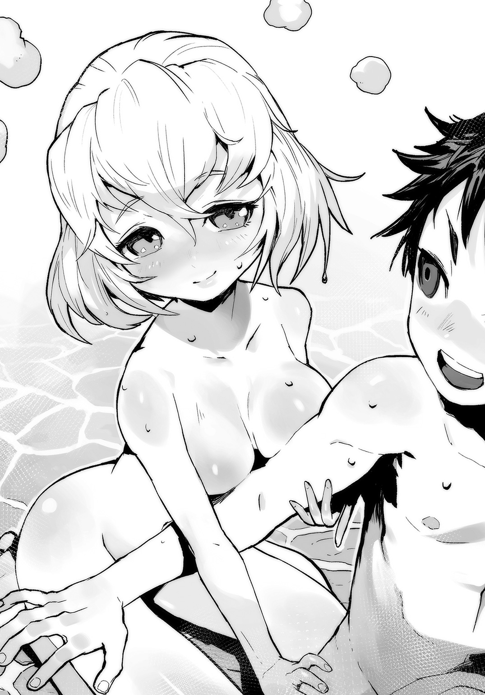
温泉に裸のモッチー登場！
俺とおもちゃの女神は、互いに見つめ合い――
「いえ、富士雄。どうぞ、来てください......っ」
身体を離そうとした俺の両腕をつかんで、モッチーが抱きついてくる。
「............、も、も......モッチー......ッ!!」
「ひゃ、ふぁぁんっ、ふ、富士雄、そんな、きゅうにぃ――......っ」
★Ｒ18規制 ★Ｒ18規制 ★Ｒ18規制 ★
■ ■ ■ ■ ■ ■ ■ ■
Ｒ18規制が発動中につき、代替企画として、
『スカウターでわかるおもちゃの女神であるモモチャの時間経過ステータス』
を掲載します。
『スカウターでわかるおもちゃの女神であるモモチャの時間経過ステータス』
●３分後
歓喜メーター
□□□□
リミットブレイク回数×１
●５分後
歓喜メーター
□□□□□□
リミットブレイク回数×３
●10分後
歓喜メーター
□□□□□□□□□□□□
リミットブレイク回数×５
●15分後
歓喜メーター
□□□□□□□□□□□□□□□
リミットブレイク回数×６
●30分後
歓喜メーター
□□□□□□□□□□□□□□□□□□□□□□□□
リミットブレイク回数×11
●50分後
歓喜メーター
□□□□□□□□□□□□□□□□□□□□□□□□□□□□□□□□□□□□□□□□□□□□□□□□
リミットブレイク回数×26
■ ■ ■ ■ ■ ■ ■ ■
★Ｒ18規制 解除★Ｒ18規制 解除★Ｒ18規制 解除★
「ほ......本心でいいます、富士雄......。ん......は、はぁ、富士雄は、け、獣です......っ」
温かく、なめらかな石の床の上で、モッチーはぴくぴく、うつ伏せでうにうにしていた。
「今更ですけど、はずかしいです......。わたし、これでも神なのに、こんな......っ、く......はっ、......す、すいません、お、お水を、一杯ください......」
俺はコップに汲んだ冷たいお水をモッチーに渡す。
女神はこくこくとそれを飲み干した。
ほてったモッチーの全身から、すぅっと赤みがひいてゆく。
「ってゆうか、なんで富士雄はさっきから無言でわたしを見つめるばかりなんですかっ!? は......恥ずかしいですっ！」
「だって、かわいくて」
「もううううううううっ////////////!!」
せっかく引いた赤みがモッチーの全身に戻ってくる。
「いえ、嬉しいですけどっ。......全身、富士雄に味付けしてもらった気分ですし......ｖｖｖっ」
女神は上半身を起こして、俺にくっついて、小さな声で、
「でも、わたしをまるで知育玩具のように弄ぶのは、よくないと思いますっ。いくら、わたしがおもちゃの女神でも、限界というものが......っ」
「じゃあ、次からは手加減する」
「そ、そういう意味じゃっ......っ！」
モッチーは再び真っ赤だった。不死鳥か？
「ふ、ふ、ふ、富士雄っ！ そういえば、富士雄はなにか、わたしに相談があったと思うのですが......っ!!」
「......あれ？ なんだったっけ......」
「もう......っ」
俺はモッチーに手を引かれ、再び湯船の中に移動する。
ちゃぷちゃぷと、俺は女神と向かい合い、
「たしか、富士雄が今日、取得したスキルや、双子に習った魔術の整理です」
「それなんだが、そのまえに」
俺はモッチーが目の前に居てくれる安心感から、ふと、口にしていた。
「もういちど、俺達の目的を確認しておこう」
「「世界一のおもちゃ屋になる!!」」
示し合わせたわけでもなく、俺とモッチーはハモった。
「......近づいてると思うか？ 俺のおもちゃで世界中の子供に笑顔、進んでる!?」
「そのはずですっ！ あの、わたし、こっそり調べておいたんですが」
モッチーはお湯の表面に指を走らせ、
「十二斂魔王になれば、『十二斂魔王議会』が有する大陸のほぼ半分を支配することができます」
女神が湯面に描いたのは◆（ひしがた）。
どうやらこれが、この魔大陸の大体の形らしい。
モッチーはその縦半分に指でラインを引く。◆は左右２つの三角形に分断される。
「十二家はこちらの右半分。この三角形を、だいたいの感じで十二分割して支配しているのですが......」
モッチーは俺から見て左半分の色を変え、そのまま左の端を指でつつく。
すると、そこにぱっとクレーターのような穴が空き、
「ちょっと形が崩れているこっちがわ、魔族では聖域とされているこちらの領土を十二斂魔王は１人で支配します。その聖域内にあるこの『街』は唯一、十二家の魔族たちがどんなしがらみも持ち込んではならない、『魔族特区』とされているみたいですね」
「おおお......なんかかっこいいね」
「まあ、聖域とはいっても不可侵とかそういうのじゃないんですが、十二斂魔王は、勇者を退けたその後も終身的に、大陸のほぼ半分であるこちら側の領土を統治、掌握する権限をもちますし、同時に十二家の魔王をすべて退けての戴冠ですから、その家は国力、武徳、影響力という意味でも、一挙に十二家の盟主たりえる地位を不動のものにすることができます」
「......なるほど、それは十二家の魔王が争奪戦を繰り広げるのも納得できるな」
話し合いじゃ無理だわ......。
「さらに十二斂魔王は、攻め込んでくる勇者への一切の処遇を自由に決める権利も持っているので、富士雄が十二斂魔王になって、これからやってくる勇者さんを説得すれば、新たな首都で、すばやくおもちゃ屋を開業できるはずです！」
「それだな......。首都に、俺のおもちゃ屋かぁ......！」
「富士雄が手に入れたスキルや魔術は、どれもおもちゃづくりに役立ちそうなものばかりですし！ ああ......っ、富士雄のお店にどんなおもちゃが並ぶか、想像するだけでぇ......っ」
「そーなんだよっ！ やっぱりモッチーわかる!?」
「はい......っ！ 富士雄の夢、『全ての子供が俺のおもちゃで笑顔になる世界』が楽しみです......！ 特に魔術です......っ！ 応用自在なあの魔術と【玩具創造】が合わさることで、こんな温泉が出来上がるなんて、わたし、考えたこともありませんでした......！」
「いや......まだまだ俺は自分の力を使いこなせてない。でも、だからこそ、すごいわくわくしてる。おもちゃづくりの拠点......、首都のおもちゃ屋を手にいれるためにも、なるしかないな！ ......十二斂魔王ッ!!」
「はい......っ！」
俺とモッチーは、改めて手を握り合う。
「あの、それで、十二斂魔王に関して、一つ、お話ししておいた方がいいと思うことが、ありまして」
「ん？ なに......？」
「あの、ええと、その前に、富士雄は......」
モッチーがもじもじしてる。
顔が、また赤く染まって、
「富士雄は、その......わたしでいいんですか？」
勇者到着まで あと 60時間48分33秒
22話 唐突だが、モッチーとの温泉回的なモノを
ここで一発挟んでもよいだろうか（３）
前回までのあらすじ。
おもちゃの女神モッチーが、俺と二人っきりの温泉で、さらになにかを、俺に告げようとしています......!!
「あの、ええと、その前に、富士雄は......」
モッチーがもじもじしてる。
顔が、また赤く染まって、
「富士雄は、その......わたしでいいんですか？」
「もちろんッ!!！ 俺はモッチー一筋だよ!?」
俺は前も後ろもなく断言した。
「はい、わたしもです......。ずっと、富士雄一筋です......。でも、いいんでしょうか、神でありながら、こんなに満たされて......」
「モッチーなんだから、いいに決まってる！」
「ありがとうございます、富士雄......。わたし、これからも富士雄を支え続けます！ 二人でいっぱい、いーっぱいおもちゃを作りましょう！」
モッチーは俺に身を寄せて抱きしめてくる。
「わたし、本当に幸せです。富士雄......」
「俺もだよ、モッチー。というか、今の俺の幸せは、全部モッチーがくれたものだし！」
「いいえ、全部、富士雄の想いが生み出したものです......」
俺はモッチーの頭を撫で、そのまま胸に抱きしめた。
「モッチーも見てたと思うけど、俺がこっちで最初につくったおもちゃ、すごく評判よかった......」
「はい、すごく喜んでもらえましたね。クラーラちゃんもリーゼルちゃんも、すごく楽しそうでした」
「しかし、あんなに竹とんぼが双子にウケるとは......」
俺は双子のはしゃぎっぷりを思い出す。
子供って、やっぱ最高だな......。
「......なんか魔族って、俺、嫌いじゃない気がする」
「富士雄が感じてるそれ、もしかしたら間違いじゃないかもしれません」
首をかしげると、モッチーは俺を見上げ、
「魔族ってかなり早熟な種族らしいんです」
もしかして【天の声】でもあるモッチーって【大百科】を共有して、俺より使いこなしてる？
「魔族は10歳になる前に、精神は人間で言うところの20歳を越えてしまうらしく、種族的に、おもちゃとか、おもちゃを使った遊びの文化自体をすっ飛ばしてきてしまうのかもしれません」
「そっかー。じゃあ、なおさら俺、頑張って、おもちゃ作んなきゃな......っ！」
「きっとみんな、あの双子のように富士雄の作るおもちゃに夢中になります」
「そのためにも......今の俺の能力、スキルとか魔術に、もっと習熟が必要だな」
なんか、燃えてきた......！
「それでですね......富士雄、話を、十二斂魔王のことに戻しますが」
ちゃぷっと、お湯を揺らして女神は微笑んだ。
「今のうちに、言っておきます。これから富士雄は、王として、たくさんの側室を持つ可能性が出てきます」
「......そくしつを持つ、可能性......？」
「私は富士雄が十二斂魔王になると信じているので、そうなってくるんです、必然的に......っ」
モッチーは嬉しそうに両手を広げ、星空を見上げてから俺に視線を戻し、
「フィスト家に強い因子を残すのはフィスト家魔王の責務ですし、十二斂魔王になれば、姻戚関係を結ぼうとする他家の姫はもちろん、同盟の人質としても女性を迎えることとなります」
「待って......、え？ 待って？ は......？ でも、まだ決まったわけじゃないし、いや、なるけど！ 十二斂魔王になるため、がんばるけど！ 俺は、そういうの、違うぞモッチー！ 俺は浮気とか――」
「いえ、あの、富士雄には誤解しないで欲しいのですが......」
ぱっと顔を赤くして、モッチーはもじもじ。
「これは浮気とか、そういうのじゃないですし......あの、わたし、神なので、余裕があるといいますか......、そこらへん、ラディカルなので、富士雄がたくさん、お嫁さんを持つのは、べつに構わないと思っちゃう方でして......」
「......は？」
「むしろわたし、誰か他の人が、わたしの大好きな富士雄を好きだって言ってくれるの、すごく、いい感じです......!!」
「待ってモッチー！ こういう世界で、一夫多妻制って結構あるけど、俺、なんかそういうの、まだ実感が......っ」
「ということは、実は結構乗り気なんですね富士雄っ！ 嬉しいです......。富士雄がみんなに愛される日は近いかもしれません......っ！」
う、うーむ......。
これが種族の違いってやつなのだろうか......。
神と人間。
苦労しそうな気もする......！
「ところで富士雄は、どんな女性が好みなんですか？ もし狙っている娘がいたら、相談にも乗りますしっ！」
「そんなの急に言われても、こ、......こまる。俺はあくまで、モッチー一筋なんだが......。現時点で、他のだれにもなびいてなんかないし」
「またまたっ、そう言ってもらえてわたしもすごく嬉しいですけど、遠慮しなくてもいいんですよ......？」
「モッチー......っ！」
しかたないので、俺は姿勢を正す。
「は、はいっ！」
「どうやらモッチーは、わかっていないようです」
「は、はい......？」
「いいでしょう......。俺がどれだけモッチー一筋なのか、骨の髄まで、教えてあげます」
「ちょ、ちょっと富士雄......っ！ やだっ、目が、怖いですぅ......っ！ あ、そ、そうでしたっ！ そんなことより、二人でこれから、どんなおもちゃを作ろうか、作戦会議を――ひゃっ、ふ、富士雄っ、も、もうだめですっ！ きょ、今日はもうぅう......っっｖｖｖ」
★Ｒ18規制 発動します★Ｒ18規制 発動します★Ｒ18規制 発動します★
勇者到着まで あと 60時間32分37秒
23話 早朝、宮殿周囲を
ぶらついてみてもよいだろうか
温泉回、翌日。
Ｃグループ、二回戦当日の朝。
俺は陽が顔を出す前から起きだして、この十二斂魔王宮殿の周囲に広がる城下町と、それを囲む外壁周辺。
そこに広がる森や原っぱ、街道や湖をめぐるように、軽めのランニングから始めてみた。
やっぱこう、俺が元いた世界とは、なんというか、自然を構成してるものの質がそもそも違うっていうの？
良い悪いとかじゃなく、たぶん、土地も樹木も、水も空気も光も基本構成（？）が違うから、日本とは根本から違う景色が広がっていて、改めてファンタジーって素晴らしいって思った。
こう全体的に、スタジオ○ブリっぽい感じ。
「こっちの世界の色彩設定は誰なんだろうか......」
《＃ ふぁぁあ......お、おはようございます、富士雄》
そして【情報化視界】の中に、寝起きのモッチーさん登場。
俺は自然あふれる場外区域から壁内に戻り、朝ごはん（パン？）っぽい匂いが漂う城下町の一角、住民の魔族たちが住む、居住区画を縫うようにデコボコと石畳が敷かれた生活道路を歩きながら、
「昨夜はお楽しみでしたね」
《＃ な、なにを富士雄はヒトゴトみたいに言ってるんですか!?》
真っ赤になるねんど◯いどモッチーは、今日もかわいい。
《＃ それにしても朝から、すごいスタミナですね、富士雄......》
「いや、いろいろ思いついたりしてさ。気が早いとは思うんだけど、どうやって勇者と和解しようかとか。そのためには、やっぱりいろいろ仕込みが必要じゃんね......」
城下町は、中央の『十二斂魔王宮殿』を中心に、環状に作られた計画都市っぽかった。
住人はたぶん、宮殿に勤めてる武官と文官、あと維持したりする職人達とその家族。
昨日モッチーが言っていた、『十二斂魔王議会』っていう組織の人たちだと思う。
......だと思うん、だけど、なんだか街には、それ以上の活気がある気がする。
やっぱり、『魔族特区』は魔族同士の交流が盛んだったりして、それなりに発展もするのだろうか。
というか、街のあちこちを見て回るにつれ、だんだん気になってきてはいるんだが、
「なんか、異様に広い敷地を持つ、大きな建物がいっぱいある気がするんだが......誰か偉い人のお屋敷か？」
《＃ 各家の大使館は宮殿に集約されてますから、そういうのと違うでしょうし。あれじゃないですか？ 江戸時代に各藩が、江戸に藩邸をおいてたじゃないですか。あれはその、十二家バージョンみたいな》
江戸時代を語り始める女神かわいいです。
「いや、それにしてもでかすぎだろ。並のホテル以上だぞ？」
その疑問は、時間が経ち、街に人が出始めてから氷解した。
「学校だ!!」
《＃ 学校です！》
なんかこの街、学校がたくさんある......！
制服を来た魔族の男女が、通りに現れ始め、屋台で朝ごはん的なの食べてる!!
そして、見た目的に人間の子供はやっぱり珍しいのか、みんなこっちをチラチラ見てくる......！
慌てて太い通りに出て、人混みに紛れる。
「あれかな、こう、子供を他家の魔族の間で揉ませる中で、強くするために留学させてるみたいな？」
《＃ いろいろな考えを持つ学生同士の交流は知識の交換と発展に最適でしょうし......というか、街が全体的に学生街なんですね、きっと》
「ふむ......学生街か......。なんか街の雰囲気に見覚えあると思ったんだ......。となると、意外と子供が多そうで、かなり嬉しいんだが......!!」
周囲では魔族っぽい商人や職人たちが、早くから店の支度を始めている。
あそこにあるのは八百屋さん......だろうか。
野菜っぽいものが籠に入って、ゴロゴロと並べてある。
俺もちょっと、お腹すいたな......。
あのりんごっぽいツヤツヤした赤い実、うまそうなんだが......俺、お金、もってない。
あ、お水はさっき、城外の小川で飲んだんだよ？
冷たくておいしかったです！
というか、こっちのお金ってどんなんだろ。
やっぱ、銅貨、銀貨、金貨とかなんだろうか。
それだとあんまり、魔族っぽくない気もするけど。
今度それも訊いてみよう。
......ともあれ、
考えてみれば、いまこの城下町は『十二斂魔王トーナメント』というフェスティバル中で、いわば観光シーズン（？）みたいな稼ぎ時でもあるのだ。
道行く人々も、なんかみんなそわついていて、今も街全体が薄い興奮に包まれている。
いいな。楽しいな。
徐々に賑やかになり始める城下町を、さらにぶらぶら歩きながら、
「なぁモッチー、どう......？ ここ、たぶんここ、常設の商店街というか、マーケットだと思うんだけど、俺のおもちゃ屋を開くとしたら、どのあたりがいいんだろうかっ」
俺は、できるだけ通りを行く子供を見ないようにしながらモッチーに相談する。
だって、そうしないとあそこにいる魔族の幼い兄妹とかに話しかけちゃいそうっ！
今日は大切な試合があるのに、声かけ事案とかになったら魔王として正直困る。
《＃ や、や、やっぱり、子供が集まってくるところですから、ひ、ひ、広場に面してたりすると、いいと思うんですっ！》
モッチーも大変そう！
「だよねモッチー！ さすが、俺もおんなじコト考えてた。こう、その広場でイベントとかもしたいんだけど！ 竹とんぼ大会とか、あ、紙芝居とかするのどう？？ 子供達、絶対集まってくると思うんだけど」
《＃ 素晴らしいです富士雄っ!! あ、あ、それなら、ちょっとした駄菓子とかも、お店に置いて――》
俺とモッチーはひとしきりおもちゃ屋妄想に浸った。
......いや、妄想じゃない。
これはいずれ実現する現実なのだ！
「よし......!!」
俺はほてった両頰をぱしんと叩く。
ゆっくり作戦を実行するのは、コレがちゃんと終わってからだ。
引っ越し直後はドタバタするの、しかたない！
「テンション上がったところで、ここからは今日の試合のために切り替えよう。ええと、実は俺、モッチーに頼みたいことがあって」
《＃ なんでしょう富士雄。わたしでできることなら》
「本当は昨日のうちにやっちゃいたかったんだけど......、ほらさ、俺のスキル、できることがすごい勢いでごちゃついちゃってるじゃん？ これ、なんとか次の試合までに整理できないかなーって......」
《＃ はぁ......うっ、は、はいっ！ ラジャーです富士雄!! 私の方で、整えます......っ！》
「頼む!!」
俺は【情報化視界】の中のモッチーが、顔を赤らめつつ、瓶底眼鏡を装着し、机に向かって仕事を始めたのを横目に、主に石造りの城下町を、フィスト家区画の城部へとてくてく歩きながらタオルで汗を拭く。
それからフィスト家の衛兵と挨拶を交わし、城区画の中、自室として使う許可をもらった控室へと向かう。
てくてくと回廊を歩いたり、スロープを登ったり階段を上がったり。
「ふー......」
見知らぬ土地と街をぶらついて、ちょっと緊張していたらしい。
楽しかったけど、こっちの世界に来たばっかりなので、フィスト家エリアはやっぱり落ち着く。
我が家ァ......。
というか、この魔王としての身体、まじでスタミナあるな。
14歳のフレッシュボディだとしても、疲れとかまったくないばかりか、集中力とかやる気が途切れる気配とか全然ないんだが......。
「おかえりなさいませ、若」
自室として貰った控室に入る寸前、声に振り向けば、腰を折り曲げたフィスト家の老執事。
「あ、ヨーハン、ちょうどよかった。俺、もうちょっと身体を動かしたいんだけど、どこかに、トレーニングできるような――」
俺の視界に、あの双子のおじいちゃんのステータスがいつものように表示されたんだが、
■ ■ ■ ■ ■ ■ ■ ■
名前： ヨーハン・フィスト
種族： 魔族
クラス： 執事（家礼）
スキル：【本領封印】【執事】【斬糸技】【風属性付与】
デミスキル：【風属性斬糸】
〔戦〕 １２０【本領封印】
〔謀〕 ５０【本領封印】
〔非〕 ２【本領封印】
■ ■ ■ ■ ■ ■ ■ ■
スキルが見えてる!!
いや、見えてない!? 【＊＊＊＊】？？ あ、あれっ？？
......っと、そうだ、思い出した。
昨日の一回戦で、アランドラのスキルを見ぬいた時に、トロフィーリワードで【スキル看破】が追加されたんだけど......。
昨日、ヨーハンのこれを見た時にも思ったんだけど、やっぱりこの、ヨーハンの【本領封印】、すごく気になる。
■ ■ ■ ■ ■ ■ ■ ■
スキル構成樹《ストラクチャ》
スキル名称：【本領封印】
属性 ： 封印系
等級 ： Ｓ級（奇譚級）
効果 ： 実力を大幅にセーブする。それに伴い任意の奇譚級以下のスキルを封印する。
■ ■ ■ ■ ■ ■ ■ ■
なんでヨーハン、常時これを稼働させてるんだろう......。
見ればヨーハンの胸のあたりに、小さいが【スキル構成樹】が刻み込まれているのがわかる。
いったい、なんのために......。
ヨーハン、マジで謎の執事だよな。
これからも怒らせないようにしよう。
「若、昨日の疲れは取れましたか？」
「あ、それはもうバッチリ......。というか俺より、対戦相手だった、あのアランドラが心配なんだが」
俺は、パッサパサになってしまっていた美青年魔王を思い出す。
あれはほんと悪いことした。
「アランドラ・トアロ殿も、仮にも魔王。回復にしばらくはかかるでしょうが、あの程度の魔力枯渇ならば、後遺症もないかと。復活したら逆に強くなるくらいです」
「そっか、ならいいけど......って、逆に強く!?」
と、とりあえず、しばらくはワインとかじゃなく、栄養のあるものを食べて欲しい。
「では、こちらへ」
「......ん？」
俺は先立って歩くヨーハンの後をついて歩く。
そういえば、俺、トレーニングルームの件、ヨーハンに言ったっけ？
なんか、今歩いているこの回廊、最初に俺が回復ポッドみたいのから出てきた後、歩いたのと同じルートっぽいのだが。
「おおっ」
やはりそうだった。
謁見の間？
王様がいて、家臣たちが、ははーってする部屋だと思う。
俺が、舞台裏みたいな所から、トコトコと玉座の前に姿を現すと、ズラーッと膝をついて並んでいた家臣団みたいな、正装でキリっとしたフィスト家の魔族達が、
床に片膝、片腕をつき、ははーってしてた。
あれ？ 待って？
俺、ベッドにあったシーツを素材として【玩具創造】で適当に作ったジャージ姿なんだが......！
勇者到着まで あと 49時間58分40秒
24話 単純に『勝利』がもたらす効果を
目の当たりにしてもよいだろうか
「......ヨーハン、どうしたんだ？ これ」
「フォースタス様!!」
声に向けば、一番前で片膝ついてしゃがんでいたのはイケメン将軍！
フィリップ・フィストがこちらに顔を向けていて、
■ ■ ■ ■ ■ ■ ■ ■
名前： フィリップ・フィスト
俗称： 柳技のフィリップ
種族： 魔族
クラス： 魔将軍
スキル：【柔力】【剣技：長剣】【槍技：長槍】【風属性付与】
デミスキル：【風属性剣術】【風属性槍術】
〔戦〕 ４０００
〔謀〕 １０００
〔非〕 ４
■ ■ ■ ■ ■ ■ ■ ■
フィリップのステータスにも、スキルが追加されている。
というか【属性付与】とか、これ、俺のためにあるスキルだよね。
絶対にそれ、俺にそういうおもちゃを作れっていってるよね。
竹とんぼに風属性を付与して、もっと飛ぶようにしろって、言ってるよね......!!
「ハァ......ハァ......【属性付与】ォ......どうしたらそれをぉぉ」
「フォースタス様......？」
「はっ！ いかんいかん！」
俺は両手で自分の頰をひっぱたき、
「ど、どうしたんだフィリップ。こんな、なんかみんな、改まって......」
「我々の、これまでのご無礼をお許し下さいッ!!」
会話が嚙み合ってない！
「え......？ な、なに？」
ゴブレイ？ ゴブ......レイ？
「バンベルグ......！」
フィリップが、自分のちょい斜め後ろで膝をついていた、脳筋将軍の名を呼ぶ。
「た、たのんます......！ フォースタス......様、......フォースタス様！」
バンベルグ!? そ、そんなすごい形相で、なにを俺に、頼むって!?
■ ■ ■ ■ ■ ■ ■ ■
名前： バンベルグ・フィスト
俗称： 樫技のバンベルグ
種族： 魔族
クラス： 魔将軍
スキル：【剛力】【棍技：重棍棒】【風属性付与】
デミスキル：【風属性棍棒術】
〔戦〕 ２０００
〔謀〕 ０
〔非〕 ３
■ ■ ■ ■ ■ ■ ■ ■
あいかわらず【風属性棍棒術】気になるッ!!
いや、昨日試合が終わった時点で、みんなのスキル見えてたんだが、やっぱりバンベルグのスキル構成、卑怯だよ......！
風のように、殴る!!
「え、ええっと......？」
俺がバンベルグのステータスと剣幕に動揺しながら、オロオロしていると、
「はい！ はい！ よろしいでしょうか!!」
「ク、クラーラ......!?」
たくさんいたフィスト家の面々の後ろから、あの双子の魔術師が走ってくる！
■ ■ ■ ■ ■ ■ ■ ■
名前： クラーラ・フィスト
俗称： 火宴のクラーラ
種族： 魔族
クラス： 魔術師
スキル：【魔術無詠唱】【魔術研究】
デミスキル：【合同魔法】
〔戦〕 ２００
〔謀〕 ０
〔非〕 ９
■ ■ ■ ■ ■ ■ ■ ■
「リーゼルも......？」
「恐れながらぞ」
■ ■ ■ ■ ■ ■ ■ ■
名前： リーゼル・フィスト
俗称： 氷苑のリーゼル
種族： 魔族
クラス： 魔術師
スキル：【魔術無詠唱】【魔術研究】
デミスキル：【合同魔法】
〔戦〕 １００
〔謀〕 １００
〔非〕 ９
■ ■ ■ ■ ■ ■ ■ ■
さすが双子、スキルも一緒なんだよね。
そしてデミスキルの【合同魔法】が、やっぱりおもちゃ的に気になる。
いったいどういう効果なんだ......!!
だが、やっぱり【スキル看破】で見ただけじゃなくて、実際使ってもらって発動した【スキル構成樹】を直接見ないと、【大百科】での説明は発動しないみたい。
案外不便！
「昨日は、大変失礼な振る舞いをフォースタス様......魔王様に向けてしまい、申し訳ございませんッ！」
「堪忍ぞ」
「え、え......？ ちょ、ちょっと......!?」
いったい一晩で、なにがフィスト家に起こったんだ......!?
あの双子まで、俺に膝を折って頭を下げているんだがッ！
俺の動揺もどこ吹く風、床に膝をついて完全かしこまりモードの双子は、
「フォースタス様......、ど、どうか、私たちを許してくださいっ！ ......そして、なにとぞこのクラーラとリーゼルを、あなた様の弟子に!!」
「嘆願ぞ」
「......は？ で、でし？」
これはもう、なんなんだろう、このヒト達。
俺は、俺の背後に本物の大魔王でも現れたんじゃないかと、振り向いて確認するが、なにもおらず、前面には、フィスト家の代表的な面々が微動だにせず、かしこまっている。
沈黙を破るように、クラーラが、ひゅひゅひゅっと息を吸い込み、
「理論だけは！ 理論だけは学びました！ 【融合魔法】については、理論上は可能であると!! 私とリーゼルは、その研究のために、今まで【合同魔法】を研究し続けてまいりました！ フォースタス様は、それらを、いともたやすく、しかも無詠唱で......!!」
「融合魔法......って、ああ、あれか」
昨日のアランドラ戦で、アランドラがあんまりにも簡単にリジェクトしてくるから、俺も調子に乗って、魔術を【融合】で合成したやつのことだろう。
「あの試合を見ていた観客も、わずかではあるでしょうがフォースタス様が使われた魔法が【融合魔法】であると気づいているはずです！」
いや、でもあれ、初見でアランドラにクリアーされてるんだが......。
「ですからどうか、この私たちを一番弟子に！ お願いでございます!!」
「直訴ぞ」
さらに深々と頭を下げる双子魔術師！
勇者到着まで あと 49時間49分06秒
25話 改めてフィスト家のみなさんに
忠誠を誓われてもよいだろうか
「あ、いや！ 待て待て待て待て!! クラーラ！ リーゼル！ やめろ！ お、面をあげいっ！」
俺は慌てて、ベレー帽がかわいい制服少女二人の前にしゃがみ込むが、
「あのアランドラが属するトアロ家は、特に魔術に秀でた一族でもあります。その頂点の魔王を魔力枯渇に追い込んだフォースタス様の魔力量......。初めて見ただけで上級術を無詠唱できたことなんか、朝飯まえだったというのが、今なら、今なら......わかります」
双子は、必死だった。
「本来ならば、あのあとすぐにこうして頭をさげるべきでした！ しかし、一晩こうしてリーゼルと話し合ってからっていうのは......だって、だって、すぐにはどうしても、信じられなくて......!! でも、あれは何度思い返しても、【融合魔術】に違いなくてっ！」
かすれる声。肩を震わせるクラーラの剣幕――
「本当に申し訳ございません！ 私もリーゼルも、なんでもします。フォースタス様に忠誠を誓い、ずっとお仕えします！ ですから、この私とリーゼルに、【融合魔術】を伝授してください！」
「奴隷ぞ」
「『奴隷ぞ』じゃねーよ！ というか立て立て！ どうしたんだよふたりとも！ なんだよ急に！ 子供がそういうことをしちゃだめだ!!」
俺は床に仰向けに寝転び、身を寄せてしゃがむ双子の顔の下に頭を突っ込み、
「な、なによっ!?」
「なにぞ!?」
「いいか!? 俺はお前らの、フィスト家の魔王かもしれねえが、ひれ伏してほしいから、やってるんじゃない！」
顔をあげる二人に合わせ、俺も床に座り直す。
「俺はおまえらに、クラーラとリーゼルに笑ってほしいから、竹とんぼしてたときみたいに、心の底から笑顔になってもらいたいから――」
おもちゃ屋さんになりたいんだ！ という言葉を、俺はかろうじて呑み込み、
「フィスト家の魔王に、『十二斂魔王』になろうとしてるんだ」
「フォースタス様......!!」
「崇敬ぞ」
すると二人は、今度は頭を下げることなく、大きな瞳で俺を見てくれる。
ふぅ......わかってくれたか......
「だから、俺に対してはいつもどおり、ほら、昨日控室で初めて会ったときみたいに、やってくれ」
「で、でも......」
「不敬ぞ？」
「お前たち二人だけ、特別だ。フィスト家の一員、フィスト家の明日を担う、いわば未来だからな！」
きょとんと、クラーラとリーゼルは見つめ合い、
「......じょ、条件が、ございます」
「なんだ？」
「だったら私とクラーラを弟子にして！ 弟子にしてくれたら、今までどおりに、接してあげるわっ！」
「んんんん......っ、わかった......！ それなら、しかたないっ」
思わず噴き出せば、クラーラとリーゼルも笑った。
「あなたがフィスト家の魔王で本当によかったわっ！」
「僥倖ぞ」
突如、左右から俺の首に双子が両手を伸ばし、同時に奪うように抱きついてくるっ!?
「ね、フォースタス、あなた大人気よっ？ みんなあんたのことが聞きたいって、昨日から私たち大変だったんだから！」
「行列ぞ」
「だから、いーっぱい自慢しておいたのっ！ ありがたく思いなさい？」
「ちょっ！ おおおっ！ く、苦しッ！ なんだおまえら二人！ やめろクラーラ！ リーゼル！ 俺を倒してフィスト家の魔王になる気か!!」
俺はとっさにフィリップに助けを求めるが、
「お願いでございます！ 我々フィスト家をお導きください、フォースタス様！」
「言ってる場合か！ おまえの親戚の双子に殺されようとしてんだぞ！ 導いて欲しいなら助けて！」
それでようやく、俺から双子が引き離される。
初めてバンベルグが役にたった瞬間だった。
「けほけほ......」
魔族の子供は加減ってものをしらない。
俺は喉を整え、
「今......、クラーラとリーゼルに言った通り、俺はその、『十二斂魔王』ってのに、なってみるつもりだ」
フィスト家に伝えた。
じゃないと、当初の予定通りやってくる勇者と和解することができない。
昨日、モッチーと改めて確認もした。
アランドラも言っていたが、強さで競うトーナメントで決める『十二斂魔王』だ。
今や魔族は、ここにやってくる勇者とドンパチする気マンマンだろう。
となれば、魔族vs人族での戦争が三日後......いや、あと二日後（？）を境にして始まるってことで、そうなれば子供たちにおもちゃどころではなくなってしまう。
駄目、絶対。
「だから、とりあえず任せてくれ」
「.........わかったぜ。オレが間違ってた！」
「バ、バンベルグ......!?」
おいなんで今立ち上がったこの脳筋将軍！
や、やるのか!? やんのんか!?
「なによりフォースタス、てめーは......強い」
ッ!?
「クソッ！ クソッ！ なんなんだありゃあ！ 傑作だ!! 見たかよ！ 昨日のあの、アランドラのキザ野郎ッ!! 干物みたいになっちまいやがった!!」
ガハハハハ！ って笑うヤツ、俺、初めて見た......！
「認めてやるッ！ おまえがフィスト家の魔王だと！」
「お、おおぅ......」
バンベルグ、いい意味でもそうじゃない意味でも、フィスト家のムードメーカーなのか？
なんだか、家臣の面々が改めて、俺に頭を下げているんだが......
《＃ 特性スキル【心魂契約】が発動しました》
「......はっ？」
《＃ 契約相手は『フィスト家』一門。 内容は『フィスト家魔王として十二斂魔王となること』》
ちょっ!! それは待って!! え？ ということは俺、十二斂魔王になったら、フィスト家みんなの魂を吸い取っちゃうの!?
《＃ す、吸い取りをキャンセルして、戻せばいいんじゃないでしょうか......》
それ可能なの!? モッチー！
《＃ た......たぶん！ いえ、富士雄なら絶対できます！》
だ、だったら、かまわんが......！
「若、次の試合が始まるようで」
「え、もうなの!?」
俺は傍らに控える執事のヨーハンに、ちょっとだけ待ってのジェスチャーを示し、モッチー！ そっちはどう？ 俺のスキル、整理できた!?
《＃ ぎりぎり間に合いました！ 急いで説明します！》
「「「「フォースタス様！」」」」」
フィスト家一門が、立ち上がっていた。
「「「「「ご武運を!!」」」」」
勇者到着まで あと 49時間37分11秒
26話 ここでひとまず俺のスキルを
すっきり整理してもよいだろうか
ここまでのあらすじ。
フィスト家のみなさんに、改めて「ご武運を！」って言われた！
というわけで、
《＃ まずこれが、今の富士雄、フォースタス・フィストのステータスです！》
『十二斂魔王トーナメント』Ｃブロック二回戦のため、コロシアムというか、スタジアムへ向かう通路を歩きながら、俺はモッチーの報告を聞く。
■ ■ ■ ■ ■ ■ ■ ■
名前： フォースタス・フィスト
真命： 米村 富士雄
種族： 人間
クラス： 魔王
スキル：『パパママ・おしえてスカウター』由来スキル：【情報化視界】【強化索敵】【天の声】
『なんでもＭＹひゃっか』由来スキル：【大百科】（【情報化視界】とリンク済み）
『だいまほうつかいステッキ』由来スキル：【大魔力ブースト】
魔王特性スキル：【心魂契約】
おもちゃの女神 モモチャ由来スキル：【玩具創造】
アランドラ・トアロ由来スキル：【精密魔力知覚】
ヨーハン・フィスト由来スキル：【本領封印】（未発動）
デミスキル：
【情報化視界】由来デミスキル：【魔族ステータス看破】【視覚化マスコット】【魔素知覚】【魔素契約樹知覚】【スキル看破】【スキル構成樹知覚】
【精密魔力知覚】由来デミスキル：【未来視：二秒先の世界】
富士雄オリジナルデミスキル：【封果チェンバー】
【玩具創造】由来デミスキル：【再構成】【復元】【増産】【融合】
魔族ステータス：
〔戦〕 ２７０００
〔謀〕 １２０００
〔非〕 ２０２
■ ■ ■ ■ ■ ■ ■ ■
「あのー、モッチー」
《＃ わたしかなり頑張りましたよねっ？ お礼にいい子いい子してもいいんですよ？ 富士雄っ》
俺は【情報化視界】内のねんどろい◯モッチーの頭をナデナデシテさしあげながら、聞く。
「なんで【未来視】とか【本領封印】が、俺のスキルに入っているの？ モッチーのはわかるんだけど、アランドラとかヨーハン由来ってなにッ!? というか【未来視】が【未来視：２秒後の世界】っていうデミスキル扱いになってるよ!?」
《＃ わ、わかりません！ まさか、奪っちゃったんですか？》
「奪ってない奪ってない！ ないよな!?」
前を歩くヨーハンを見るが、よかった！ ちゃんと胸のところに【本領封印】ある！
「俺にそういう奪う系のスキルはないから！ 逆にモッチーが説明してくれよっ」
【情報化視界】の中でころころと転がるねんどろ◯どモッチーを指先でぷにぷにしながら、
《＃ 正直言って、こちらの異世界に来てからの富士雄は、神であるわたしの予想を超えていまして、〔戦〕も〔謀〕も〔非〕も上がっていますし、す、す、素敵すぎて、もう......もうわたし、ど、どうしていいかぁ......//////》
自分でも考える。
ぱっと思いつくのは、こういうことだ。
「俺、双子が使った魔術、その【魔素契約樹】を、見ただけで再現できたよな......」
《＃ はいっ、富士雄は、なんていうか、やっぱり、才能、あるんだと思うんです......》
「いや、あの【魔素契約樹】ってのが素晴らしいんだ。アレを見てると、俺も負けてらんねぇって思う。おもちゃ作りに、なんていうか、すごく参考に......って、話題が逸れてるな。......話を戻せばだ、スキルを生み出す【スキル構成樹】なんだが......」
俺は、アランドラが両眼に装着していた、メガネ......というより、仮面状の樹形図を【玩具創造】で手のひらの上に作り出し、
「......な？ 作り方は【魔素契約樹】とおんなじだ。これを使えば、これと同じスキルを、俺でも使えるようになるってことじゃ......」
《＃ 理屈は、通ってる気がしますが......すごくないですか？ それって......》
「百聞は一見にしかず。せっかくだから、この新しいのを使ってみるか！」
《＃ トーナメントの前に【本領封印】はやめましょう！ 効果が未知すぎます！》
「【未来視】の方をだよッ！ 俺のステータスだと、【精密魔力知覚】が本命スキルで、デミスキルで【未来視：二秒後の世界】になってっけどな！」
俺はさっそく、まずは【情報化視界】関連のスキルを一旦全部オフにして、視界をノーマル視界に戻し、それから片手でくいっと、アランドラの【精密魔力知覚】を装着する。
「うーわっ」
するとどうだろう、前を歩くヨーハンの背中。
老執事のボディが、まるで保健体育の教科書に載っているような、皮膚を剝いで全身の筋肉だけを浮き上がらせたように見えるのだ。
その筋繊維は、緻密な流線グリッドで構成されていて、そこに蛍光オレンジの液体っぽいのが流れている。
おそらく、そのオレンジの液体が、知覚化された魔力だ。
「なるほど！」
蛍光オレンジ部分、つまり魔力には光の強弱があって、ヨーハンがまさに動き出さんとしている場所が、ひときわ明るく光る。
執事のおじいちゃんが、右足を前に出そうとすれば、その一瞬前から右足が、動く方向へとオレンジ色に輝く。
普通、光は動いた後に、残光として残る。
車の赤いテールランプが尾を引くみたいに。
魔力はその逆。余光というか、予測光（？）が、動き出そうとする方向に伸びるのだ。
「これはわかりやすい！」
たぶん、デミスキルの【未来視】は、本命スキルの【精密魔力知覚】をさらに鋭敏化するスキルの一種なのだろう。
アランドラは、このスキルで２秒先の世界を見ていたのだ。
「おわッ！」
魔力を直接視覚でとらえる俺のオレンジ視界の中に、突然の予兆。
２秒後、俺の目の前に女性らしき――
「ハーァアイっ！」
俺は視界を【精密魔力知覚】→通常視界→【情報化視界】に切り替える。
っていうか、もしかしてこの【未来視】、【情報化視界】のデミスキル【強化索敵】と組み合わせたら、すごいんじゃないか......？
ともかく、通常視界の段階で、ソイツの正体はわかっていた。
「おまえは......っ」
「覚えててくれたんデスカ？ そう！ 『鬼火のティーパイレン』閣下直属！ 実況のフランベルジュデェース！ フランって呼んでくだサーイ！」
「お、おお......」
近くで見ると、胸がでかい......!!
勇者到着まで あと 49時間25分01秒
27話 こんな感じで
Ｃブロックの優勝者になってもよいだろうか
「覚えててくれたんデスカ？ そう！ 『鬼火のティーパイレン』閣下直属！ 実況のフランベルジュデェース！ フランって呼んでくだサーイ！」
「お、おお......」
近くで見ると、胸がでかい......!!
なんでこのテンガロンハット女、こんなビキニみたいな服着てるんだ？ 熱いの？
■ ■ ■ ■ ■ ■ ■ ■
名前： フランベルジュ（『鬼火のティーパイレン』配下）
俗称： 嬌声のフランベルジュ
種族： 魔族
クラス： 広報官
スキル：【実況】
〔戦〕 １２００
〔謀〕 ４００
〔非〕 １
■ ■ ■ ■ ■ ■ ■ ■
こいつ、実況者か!!
まあ俺のこと、あのときさんざん実況してくれてたけどな。
「ねえフォースタスサン、知ってマスカー？」
「な、なにをだ？」
お互い様なのだが......このカウガールみたいな実況者、こんなところで油売ってていいの......？
というか、なんで俺の腕をつかむ？ そして胸に挟むように身を寄せてくるッ!?
「今、この十二斂魔王宮は、期待の新星『魔術卿フォースタス』の噂でもちきりなんデース！」
「『魔術卿フォースタス』!?」
よせ！ それ以上俺に近寄るなぁッ！ そしてモッチーがすごい目でおっぱいの谷間に釘付けだぁぁっ！
「ハイ、このワタシが、ウワサを流してマァース！」
うふっとシナを作っているんだが、マジこのフランベルジュ、目に毒だな。というか、なんなんだよコイツ、やめろなんか余計なことは!!
「というわけで、フォースタスサン、今からフランの簡単なインタビュー、お受けねがいマース」
「インタビュー......？」
「なんでも、フォースタスサンは、見ただけで上級魔法を無詠唱で使うことができたトカ。フィスト家の双子魔術師、火宴のクラーラサンと氷苑のリーゼルサン、そうっ！ あの『暁月の双子』が昨夜、独占インタビューに答えてくれマシタ」
あ、あれ......あの双子、なんかいっぱい自慢したって言ってたけど......。
体良く取材されていたらしい......!!
「他にも、一撃で山脈を消し、湖を飲み干し、ドラゴンにさらわれた双子を助けたトカ！」
「クラーラ＆リーゼルの中で俺が大変なことになってる」
「フォースタスサンのいろんなこと、フランは知りたいんデース......！」
おいおい、なんで俺、壁ドンされてんの？？
これ、２秒先が読めてたら避けられてたっぽいぞ！
「できれば二人っきりで、激しく......ネ？ フォースタスサン」
ヨーハン！ そっと顔を伏せてないで助けろ!! 今こそ【本領封印】を解除すべきだろォォ!!
「５分......いえ、10分でかまいまセーン......」
ま、待て！ 俺にはモッチーという心に決めた相手がぁああッ!!
「フラン、そこまでだ」
「イ、イタタタタッ！ な、なにをするんデースっ!?」
ッ!?
白衣を着た、この男っ！
■ ■ ■ ■ ■ ■ ■ ■
名前： メルドー・アレプテン（『濁流のガリアッレ・アレプテン』配下）
俗称： 悪罵のメルドー
種族： 魔族
クラス： 広報官
スキル：【解説】
〔戦〕 ２００
〔謀〕 １９００
〔非〕 １
■ ■ ■ ■ ■ ■ ■ ■
「フォースタス・フィストと言ったかな......」
あー......このメガネ白衣、覚えてるぞ。
俺の試合、トイレタイムとか言って、席立った奴だぁ......。
「二回戦をマグレで勝ち抜いたからといって、調子に乗るのもここまでだ」
ブレないな!!
「キミもよくよく間抜けな魔王だな」
「......は？」
「ここでは情報が勝敗を分ける。キミのことはあれから、各魔王の諜報機関が調べあげた」
「は、はぁ......」
「なんでも、ドラゴンの大群を単独で撃破し、二人の美しい姫君を救ったこともあるとか......。そのほかにもキミに関する膨大な情報が、今や各魔王に筒抜けになっている。『魔術卿フォースタス・フィスト』」
双子のせいで、俺の設定が一人歩きしてる模様。
「確かに次の相手、魔王ユユグロ・カフォンは『魔眼のアランドラ』ほど、注目はされてはいない」
ふむふむ、じゃあ、今大会のダークホースなのかな？
「だが彼は、一回戦で期待の新星だった魔王アキナペル・ナキワカリを下した今大会のダークホースだ！」
......!!
「彼は『透刃のユユグロ』と呼ばれていてな、その攻撃を見切った者は未だかつて一人もいない。キミがアランドラ・トアロを超える魔術の使い手だとしても、それを使う暇すら彼は与えないだろう。魔術が得意だというキミとユユグロの相性は最悪だ。せいぜい気をつけることだ、人間の少年」
白衣メガネはそれだけ言うと、フランベルジュの耳を引っ張ったまま、行ってしまった。
スタジアムに続く通路には、フィスト家魔王の俺と執事が残される。
「あ、はい......」
◆ ◆ ◆ ◆ ◆ ◆
11分後、
『今大会のダークホースと目された、あのユユグロ・カフォン！ どーしたことか！ 動かナーイッ！』
アナウンスの絶叫で、俺はそれに気がつく。
「あ......えぇ......っ？」
『まさかの秒殺！ 恐るべきは「魔術卿」ッ!!』
俺の目の前では、身体中をギッチギチの革ベルトで縛り上げた、ビザール魔王が床に伏せってぴくぴくしてた。
『よって勝者！ フォースタス・フィストーッ!! これにて、Ｃブロック代表は、フィスト家代表、『魔術卿フォースタス』に決定ディェエースッ!!』
「か、勝ったんだが......ッ!!」
勇者到着まで あと 49時間03分45秒
28話 Ｃブロック決勝で起こったことは
こんな感じと認識してもよいだろうか（１）
とりあえず、一言。
【未来視：２秒先の世界】とリンクさせた【強化索敵】、想像以上にやばい！
最初から説明する！
俺、やっぱり魔術を【魔素契約樹】で再現することで、いきなり使えたみたいに、相手が持っているスキルも、【スキル構成樹】を【玩具創造】で再現することで使えるようになるみたい！
『十二斂魔王トーナメント』Ｃブロック決勝。
『十二斂魔王トーナメント』は、その名の通り、十二家の魔王を収斂させ魔王の中の魔王を決めて、統一的な対勇者戦線を作り上げるために行われているもの。
ＡＢＣの３ブロックに分かれ、まずはそれぞれのブロックで一人ずつの代表魔王を決定する。
Ａブロックは魔王４人が一斉に戦うバトルロイヤル形式だったらしい。
そしてＢブロックは魔王４人による総当たり戦で、これで時間が掛かったらしく、その間に俺は双子に魔術を習うことができた。
そして俺の属するＣブロックは魔王４人によるトーナメント方式で代表を決めようとしている。
４人でトーナメント戦だから、三回戦は実質的には決勝だ。
早ぇえ......。
ともかく、この戦いに勝った魔王が、Ｃブロックの覇者となる。
考えるともなく、そんなことを思いつつ、俺はスタジアムの床を、踏んでいた。
観客席は、二回戦、昨日のvsアランドラ戦の倍以上に膨れ上がっていた。
「フォースタス様～!!」
「師匠！ 必勝ぞーッ！」
クラーラとリーゼル、双子の声がかろうじて俺に届く。
師匠と呼ばれているが、実際には二人が俺の魔術の師のようなものだ。
というか、あの二人、俺の情報をダダ漏れさせたの、ぜんぜん悪びれてないのな!!
「よし！ 子供はそうでなくちゃな......っ!!」
俺は腕を上げて応えた。
今回は、フィスト家のみなさんも、俺を一生懸命応援してくださっている。
......なんだ、あの「フォースタスLOVE」っていうでかい旗......。
恥ずかしい。
「お、おーう！ がんばるぞー......！」
「あ......ぁ......ア......」
千と◯尋に出てくるカオ◯シみたいな、でもアレよりは野太いうめき声で、俺はそいつの登場に気づく。
「ん......？」
ユユグロ・カフォンは今まで見た魔王の中で、一番魔王っぽかった。
背は２メートルを優に超えている。
というか、骨格とか体格が、普通の人間の倍くらいにいびつなサイズで、手足が長く太く、背中を大きく曲げて這うようにスタジアムに出てくる。
巨人族というか、そんなにでかくはないんだが、全体的に太く、イビツで威容なシルエットを描いていた。
■ ■ ■ ■ ■ ■ ■ ■
名前： ユユグロ・カフォン
俗称： 透刃のユユグロ
種族： 魔族
クラス： 魔王（カフォン家魔王）
スキル：【次元隙】【剣術：大剣】【伸縮体技】【お菓子作り】
デミスキル：【次元刀】
〔戦〕 １３０００
〔謀〕 ４０００
〔非〕 １５
■ ■ ■ ■ ■ ■ ■ ■
【お菓子作り】て!!
もう【情報化視界】に映る情報と、やつの姿形、どっちを見ればいいか迷う！
なにしろ、そんな威容な巨体を、ユユグロは紫色のスキンスーツとベルトでぎっちぎちに締めあげているのだ。
「へ、変態だーッ！」
《＃ ............っ!!》
純情なモッチーなどは、ユユグロの股間に釘付けになっている。
しかもユユグロは自分自身で、すごい角度でそそり立ったそれを、指差し、
「ぼくの......ぼくの......」
こっちにアピールしてくるのだ。
「お、おい！ や、やめろ！ モッチーの教育に......、......って、え、あ......あれェっ!?」
俺は気づく。
よく見れば、黒くて太いそれは彼のイチモツではない。
彼は股間に、巨大な剣だ！
巨剣を股に、挟んでいる！
なんで......？
腰脇に差しているのではなく、掃除の時間にホウキにまたがった魔女ごっこをする子供のように、剣にまたがる感じで、股に大剣を差している。
ふざけてるんじゃなくて、本気で！
その剣を、指差して、俺に、アピールしてる!!
「ぼくの......ぼくの......！」
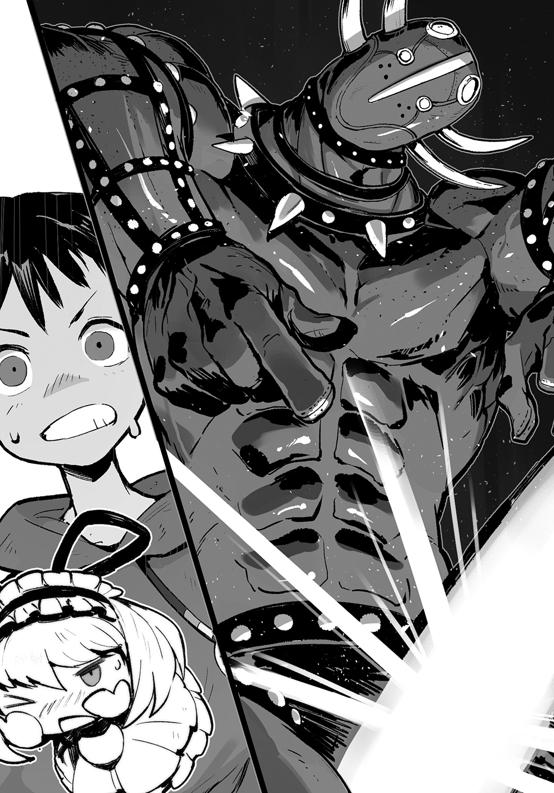
「わかったから！ わかったから!!」
「ぼくのぉ......っ」
ユユグロが、その大剣をズラリと抜いた。
「!?!?」
俺の【情報化視界】が発動した。
俺に見せびらかすようにひるがえした刀身が、異様だった。
あ、あれは！ あの形は!!
■ ■ ■ ■ ■ ■ ■ ■
名前： アリス・ニージュレード
俗称： 魔剣アリスたんペロペロ
種族： 魔剣
クラス： Ｓ級インテリジェンス・ソード
デミスキル：【次元刀】
〔戦〕 ２０００
〔謀〕 ６００
〔非〕 ８
■ ■ ■ ■ ■ ■ ■ ■
「い、痛剣!?」
《＃ 痛剣です！》
剣が、女の子の形になっていた。
「す、すごい......!!」
《＃ すごい......!!》
俺とモッチーがハモるくらい、それは素晴らしい剣だった。
巨大なひらべったい青龍刀の刀身が、巨大で平たいまま、女神の形をしていて、そこに精緻な絵画のように少女が彫り込まれているのだ。
その銘は、そう！ 『魔剣！ アリスたんペロペロ』!!
なにこれ、超怖い。
確かにユユグロ・カフォンは二回戦のアランドラ・トアロより、ステータスは低い。
だが、やばい。
もう全体的にやばさがにじみ出ている！
現に、
『この奇抜なダークホース、ユユグロ・カフォンに、ルーキー魔王、「魔術卿フォースタス」はどのように立ち向かうのか！ これは見ものディェース!!』
とか、実況のフランが魔王紹介をしている最中だっていうのに、ユユグロからこっちに、どんどんスキル構成樹が伸びてきてる!!
■ ■ ■ ■ ■ ■ ■ ■
スキル構成樹《ストラクチャ》
スキル名 ：【次元隙】
デミスキル名称：【次元刀】
属性 ：空間系
等級 ：ＳＳ級（伝承級）
効果 ：生み出した【次元隙】を切り裂くことで、刀身を別の【次元隙】先へ空間転移させる。
■ ■ ■ ■ ■ ■ ■ ■
こいつの中では、もう試合始まっちゃってるーっ!!
29話 Ｃブロック決勝で起こったことは
こんな感じと認識してもよいだろうか（２）
っていうか、これ、この【次元隙】って、絶対、俺に、このスキルで『ピタゴ◯スイッチ』作れって言ってるよね!?
もう絶対、クラーラとリーゼルが喜びにあふれるんだが......ッ！
その挑戦、受けて立つ。
見せてやる！ 俺のピタゴラ力ってやつをよぉおッ!!
「モッチー、頼みがあるッ!!」
《＃ は、はいっ！》
「アランドラの【未来視：２秒先の世界】を、俺の【強化索敵】とリンクしてくれ......！ 早く！」
《＃ さっき、フランベルジュさんの時にやばいと思って、もうリンクしてあります!!》
「なにそれ偉いッ！」
モッチーがここまで有能でなかったら、間に合わなかっただろう。
結果的に、ユユグロの能力は俺の予想を遥かに超えていたのだ。
俺の脳天のすぐ上に、ユユグロから伸びる、影絵の蝶が連なったような【スキル構成樹】。
「ッ!?」
知覚されるは刃！
アリスたんの頭が頭上左斜め上の【次元隙】を切り裂いて登場するビジョン!!
「おっとぉぉおッ!!!」
これが【次元刀】ッ!! これが透刃の正体!!
「ッかッ!!」
そして２秒後、未来視ビジョンが示すまま、俺に振り下りる魔剣！ アリスたんぺろぺろ!!
度肝を抜かれた俺は、
「うおッ!!」
思わず瞬間的に、俺はユユグロの【次元隙】に干渉していた。
全ては感覚。
だが俺は確かに、影絵の蝶のようなスキル構成樹、その窓を、閉じ――ッ!!
きゅぎゅばきぃんんッッ！！！！
空間を渡り、俺の頭を叩き割るべく飛来したアリスたんの刀身が、窓に挟まれ、粉々に砕け散った。
まじで？
「ピキャァアアアアッ!!」
その衝撃が、ユユグロにも伝わったのだろう。
両手で股間を押さえたビザール魔王は、口から泡を吹き上げ、そのままゆっくり、うつ伏せに卒倒した。
「......は？ ......え、まさか、」
『なにが！ なにが起こったんディェース!?』
「......へッ？？」
『一瞬でッ！ 一瞬で魔剣が砕け！ 今大会のダークホースと目された、あのユユグロ・カフォン！ どーしたことか！ 動かナーイッ！』
アナウンスの絶叫で、俺はそれに気がつく。
「あ......えぇ......っ？」
『まさかの秒殺！ フォースタスがどんな魔術を使ったのか、我々には知ることもできないのディエースッ！ 恐るべきは「魔術卿」ッ!! 腕の一振りですべてを為したァ！』
「まさか、アリスたんが、こんなことになるとは......!!」
勝者を一方的に伝えるフランの実況、メルドーの無責任な解説を聞き流し、
「ユユグロ......？」
紫色のラバースーツ魔王に駆け寄り、ゆさぶる。
「お、おいっ！ 大丈夫かッ!?」
無理もないッ!!
俺も言葉にできないが、股間にあったご自慢の剣が粉々！
なんだかとっても、無理もないぃぃいッッ!!
俺も、こんなつもりじゃなかったんだがぁああッ!!
しかし、次元の断裂......？ には、さすがの魔剣も、砕け散った模様で......ッ!!
「アリスたんっ！ アリスたんンンっ！ ぁあ......あ、あぁあ......あ......」
股間を押さえながらパニックを起こしたように大剣の柄を握りしめて悶絶するユユグロ。
「そ、そうだっ！」
俺は、俺に降り注いだアリスたんの破片を、パーカーのフードから見つけ、手に取り、
「【復元】!!」
【玩具創造】のデミスキル壊れた品を元に戻すことができる【復元】を発動！
すると、バラバラになったアリスたんペロペロの破片が、俺が生み出した魔素樹形図同士でつながりはじめ、ユユグロの刀身に集結......!!
元の痛剣を、形作った。
【復元】完了......!!
「ぁあ......あっ、あっ！」
床に横たわり、再起不能状態のユユグロの瞳から、涙があふれた。
「アリスたんっ！ アリスたんっ！ ぺろ......ぺろっ ぺろぺろぺろ......」
お熱いことだ......。
俺はその光景から、そっと目を逸らした。
気持ち悪いので!!
「フォ、ふぉ、フォースタス......フィストォォ......」
「......!?!?」
「こ、こ、こ、この借りは......礼は......き、き、ききっと......か、返すゥ......」
「え？ 借り？」
「こ、こ、こ、この......勝負、ぼく......の、ま、負け......だ......っ」
魔剣アリスたんぺろぺろを抱きしめ、担架に乗せられ運ばれ、すれ違いざまに俺はユユグロからそう告げられ、
『よって勝者！ フォースタス・フィストーッ!! これにて、Ｃブロック代表は、フィスト家代表、『魔術卿フォースタス』に決定ディェエースッ!!』
「か、勝ったんだが......ッ!!」
「フォースタス様ぁぁあッ!!」
「秒殺ぞぉぉおッ!!」
俺は背後から、観客席から殺到してきたフィスト家の面々、特に双子のクラーラとリーゼルにもみくちゃにされたのだった。
「フォースタスの兄貴ィィいいッ！」
「待て、バンベルグはだめだぁああッ!!」
俺はさっそく【未来視（真）】でバンベルグを避ける。
べ ん り！
というか、フィスト家は、みんなでよってたかって俺の身体を千切る気か!? まさか俺、本当は認められてないんじゃ......！
不安が全身によぎります。
『これにて、三人の十二斂魔王候補者が出揃ったのですね......』
それは、実況と解説コンビの声とは、また別の響き方でスタジアムを圧した。
「んぐっ!?」
俺は、観客席の中段。貴賓席らしい場所に立つ、それを見上げた。
■ ■ ■ ■ ■ ■ ■ ■
名前： ？
真命： ？
種族： テディベア
クラス： ？
■ ■ ■ ■ ■ ■ ■ ■
そこに居たのは、俺が魔王生誕ポッド内部から見た、あのテディベア。の、キグルミの頭をフードのように外した、妖精王女様のような娘だった。
「玉璽さまーっ！」
クラーラが乙女チックに壇上に一礼した!?
「おー、あれが、ちょっと前に言ってたぎょくじ様か......」
というか、今もまだステータスが？？？？ってどういうことだ？
《＃ 大百科に載ってないってことですかね......》
「そういうこともあるんだな」
「玉璽様は唯一、魔族を、――その王たる『十二斂魔王』として承認することができるお方だ」
フィリップも、片膝をついて壇上を見上げている。
「な、なるほど......？」
あ、玉璽さまが、俺を見た。
『では、もう面倒くさいので、Ｃブロックのフォースタス・フィスト殿を「十二斂魔王」といたします』
「「「「「「「「「「「「......、......はぁッ!?」」」」」」」」」」」
勇者到着まで あと 48時間00分09秒
30話 怪しい玉璽
こんなに怪しすぎてもよいだろうか
俺やフィスト家一門。
そしてスタジアム中に色んな種類の衝撃が走った。
この、玉璽さまっていうひと、たぶん偉い。
キグルミの玉璽さまは、種族自体が魔族とはちがうのか、魔族特有のアンニュイな雰囲気はまったくなく、なんだか全体的に生き生きしていて、エルフみたいに不思議なオーラ。
背は、双子とおんなじくらいだろう。
耳の先なんかしゅうっとやわらかな毛で覆われていて、まさしく等身大の妖精という感じだ。
大きな声では言えないが、高慢ちきな部分がないわけではない、あの魔族達が、なぜか彼女にはナチュラルな敬意を払い続けているのがわかるし、テディベアのキグルミを着た玉璽さま自身も、それを当然という振る舞いをしてる。
だから、玉璽さまの言葉は重い。
わかる。
このキグルミ妖精はそういう立場なのだ。
だからこそ、さも自然にサラリと『十二斂魔王』決定！ と告げた妖精王女様の言葉に、魔族一同、スタジアム全体が絶句しているのだ。
「それはなりませぬ、なりませぬ玉璽様......！」
一段一段、観客席から中心の闘技場に向かって降りてくるテディベア玉璽さまの後を追うように、黒い執事服姿、額から角を生やした水晶スケルトンがカチャカチャと慌てていた。
吹き荒れるスタジアムの混乱模様に、さらに乱雑な情報を映し出していた俺の【情報化視界】が、執事服の水晶スケルトンのステータスを表示。
■ ■ ■ ■ ■ ■ ■ ■
名前： アープシー（十二斂魔王会議所属）
俗称： 苦労人アープシー
種族： 魔族
クラス： 執事（玉璽さま目付役）
スキル：【執事】【蝶よ花よ】【なだめすかし】【いい含め】【太鼓持ち】
【泣き落とし】【説得】【請願】【胃薬不要】【水晶ドクロ占い】
〔戦〕 ２０
〔謀〕 ９０
〔非〕 ２
■ ■ ■ ■ ■ ■ ■ ■
スキルでわかる過酷な人生。
玉璽さまのお目付け役って大変なんですね......！
「玉璽さま、そのように『十二斂魔王』を決めてしまっては、あのメイ・ファー殿とハリビュール・ビート殿が納得するわけがありませぬ......！」
「ではやめます」
あっさりしてんな！
「なんですアープシー。冗談に決まっているではありませんか」
「いえ......玉璽様は本気でいらっしゃった......」
玉璽さまはそのまま、俺の前までやってきてから軽く背後のアープシーに眉を上げている。
「それほど、このフォースタス殿が見事だったというわけです。この魔族たちの沸きようをごらんなさい」
俺に同意を求めるように、頭だけ出しているキグルミ玉璽さまは取り囲む客席を見上げる。
たしかに玉璽さまが手を振ったりすると、そっち方面が盛り上がっている。
すごい人気。
「そもそも『十二斂魔王』を決定するときは常に魔族たちの下馬評、『この魔王がふさわしいのでは』という民衆が抱く評判、想いと一致する結果となるのが常。わたくしはそれに準じたまでです」
「かもしれませんが、玉璽様。ものには順序というものが――」
「よくぞここまで勝ち抜いてこられました、フォースタス殿。わたくしはこの『特別聖域管理都市』、いわゆる『特都』を司る『十二斂魔王議会』の公式マスコット、玉璽と申します」
アープシーの言葉を最後まで聞かず、玉璽さまは俺にそう、名乗ってくる。
「フィスト家魔王、フォースタス・フィストです」
「公式マスコットは噓です」
「わかってます」
「それにしても、あなたからいただいたこのヌイグルミというものは大変よい着心地ですね」
「......!?!?」
あ......ぅ!? 確かに、あの種類のヌイグルミは俺のいた世界にしかないタイプ!?
だが、
「いや......え？ 俺？ が？ 玉璽さまに......その、キグルミ、......を？？」
やばい、覚えがない。
いやいやまて！ 思い出した！
俺が誕生した回復ポッドの外に、テディベアいたじゃんね!?
......あれ？ だとしても俺、やっぱりヌイグルミなんか、まだ渡してないんだが......!!
「くすくすくす......」
玉璽さまはテディベアハンドに包まれた手で、口元を隠し、
「わたくしは、他人が眠っている隙に、そのヒトのスキルを使わせていただくことができるスキルを持っています」
つまり、......え？ 俺、玉璽さまに【玩具創造】を使われたの？
おお、なんか妖精っぽい!?
「それに、あなたを『十二斂魔王』として認めることができるのも、このわたくしだけ。ですから、わたくしには出来るだけゴマを擂っておいたほうがいいのです、フォースタス殿」
なるほど、玉璽様はステータスは、相変わらず、
■ ■ ■ ■ ■ ■ ■ ■
名前： ？
真命： ？
種族： テディベア
クラス： ？
■ ■ ■ ■ ■ ■ ■ ■
だが、『玉璽』自体は、【大百科】に載ってる。
■ ■ ■ ■ ■ ■ ■ ■
【玉璽】
璽とは印章（印鑑）のこと。
玉璽とは、特に、王や皇帝などの『君主』を君主たらしめる証としての権能を持つ印章とされる。
■ ■ ■ ■ ■ ■ ■ ■
確か、社会化で習った、卑弥呼が持ってたっていう金印も、そういえば玉璽ってことだったはず。
つまり、本人が今言ったまんま、たぶん、このキグルミ少女は、そういう王様を決定する的な【スキル】の持ち主でもあるのだろう。
スキル名は【キングメーカー】とかになるんだろうか。
それなら、魔族達に敬意を払われているのも納得だ。
まあ、でもとりあえず、俺にとっては、そんなことはどうでもいい。
よくはないが、今はとりあえず、どうでもいい！
まず解決しなくてはいけない問題は、
玉 璽 さ ま が 子 供 で あ る と い う こ と だ !!
「では、あらためて、ええと......玉璽さま。これ、お近づきのしるしなんで、どうぞ！」
俺は上着、黒い執事服色したパーカーを脱いで、ラグラン長袖Ｔになり、
脱いだパーカーを素材にして、玉璽さまが着ているテディベアと同じデザイン、子グマのぬいぐるみを作り出して、差し出した！
「まあ、ありがとう......フォースタス殿」
「ず、ずるいっ！ なにあれ！ 玉璽さまばっかりずるいフォースタス様!! わたしも！ わたしもあれ、欲しいっ!!」
「同意ぞ！ 所望ぞ！」
「ま......待て！ 待てクラーラ！ リーゼル！ フィスト家の双子らよ！ もう材料がない！ 俺ハダカになっちゃうからもうしばし待て！ 玉璽さまも見せびらかさない!!」
「フォースタス殿」
「なんですか玉璽さま」
「もうこれ以上、この『ヌイグルミ』を作ることを禁じます」
「玉璽さまが横暴すぎる!!」
「よーしよしよし......（双子に見せつけるように黒い子グマのヌイグルミを抱いてあやす玉璽さま）」
「あぁあ～んっ、あぁあ～っっんっ！ （羨ましそうに玉璽さまに両手を伸ばして周囲をそわそわするクラーラ）」
「羨望ぞ......（同リーゼル）」
なにこの茶番。
「そこまでして『十二斂魔王』になりたいか、人族よ」
「ん......？」
俺が勝手に、白虎の門と名づけていたスタジアム入り口から、ソイツは姿を現した。
■ ■ ■ ■ ■ ■ ■ ■
名前： メイ・ファー
俗称： 金輪のメイ・ファー
重翼のメイ・ファー
種族： 魔族
クラス： 魔王（ファー家魔王）
スキル：【重力強大化】【溶爆輝光】
【剣技：長剣】【光属性付与】【手紙交換】
デミスキル：【光属性長剣術】【達筆】
〔戦〕 ２５０００
〔謀〕 １５０００
〔非〕 ４７
■ ■ ■ ■ ■ ■ ■ ■
スキルって、もはや趣味の欄なの？
ともかく、
「さっそく玉璽殿に貢物か。呆れ果てる」
「おお......っ！ おまえが噂のメイ・ファーかっ！」
透け感のある白い光沢を持つ、身体にぴったりフィットの甲冑に身を包んだ、濃いブロンドの髪を持つ魔王が、蒼い瞳で俺を睨みつけている。
「汚らわしい人間風情が、我が名を気安く呼ぶな。千切るぞ」
勇者到着まで あと 47時間41分02秒
31話 ＡＢＣブロックの
勝者魔王三人がそろったのだが
仲良くしなくてもよいだろうか
「よ、余裕ないな......」
メイ・ファーは、彼女が持つ硬い外見の他にも、さらに近づきがたい雰囲気を持っていた。
しかもそのとげとげしい威圧感。
なんか、俺だけに向けられている気がしてならない。
いや......これは、確実に俺が嫌われてる？
白騎士然とした高貴な魔王、メイ・ファーが俺を睨む、この冷やかな視線は、軽蔑の眼差しのような気がするが、俺の勘違いだろうか。
俺、なにかしたっけか......
「ふん......っ」
戸惑う俺をよそに、お綺麗なＡブロック覇者であるメイ・ファーは、頭のティアラ型ヘルムをきらめかせながら、硬いブーツをカツカツ、こちらに近寄ってくる。
「ま、まさか......」
メイ・ファーも、玉璽さまの持っている、ヌイグルミが、欲しいのか？
そんなの嬉しいっ！
魔王の年齢が外見通りだとして、メイ・ファーは見た目、17～18くらい？
一見、強気で男勝りに見えて、実はかなり乙女な部分が......!?
そ う に ち が い な い。
よし、こうなったら双子には悪いが、先に俺の虎の子、ジーパンを材料にしたテディベアをメイ・ファーに――
「あらあら......、抜け駆けは協定違反でございますわぁ、メイ様ぁ」
「んっ？？」
絡みつくような声が、メイ・ファーの背後、白虎の門の更に奥、暗がりから響いた。
「出たな、ハリビュール。おまえと協定など、結んだ覚えはない」
メイ・ファーが甲冑を鳴らして振り返った先。
俺の【情報化視界】も、新たに姿を現したそいつは輪郭を浮かび上がらせた。
■ ■ ■ ■ ■ ■ ■ ■
名前： ハリビュール・ビート
俗称： 邪神官ハリビュール
淫獣ハリビュール
種族： 魔族
クラス： 魔王（ビート家魔王）
スキル：【破砕蝿雲】【棍技：モーニングスター】
【超速移動】【邪神医術】【童貞狩り】
デミスキル：【床上手】【四十八手】【裏四十八手】
〔戦〕 １９０００
〔謀〕 ２４０００
〔非〕 ４３
■ ■ ■ ■ ■ ■ ■ ■
どどどどど童貞ちゃうわーッ!!
もう！ もう違うから!! 身体は子供だけど前世はおとな!!
その名はフィスト家魔王、フォースタス・フィスト。
......ふぅ、セーフな？
というか、見た目からしてとんでもないエロ魔王の登場だ。
Ｂブロック覇者、ハリビュール・ビート。
カッコいい美しいメイ・ファーと並ぶと、その淫靡さがエグいほど際立つ。
メイ・ファーも確かに可憐な女の子と言えるのだが......、いかんせん、比べてしまうと女性らしさに乏しい。
......ん？ ちがうな、やっぱりハリビュールのエロさが異常だぞ......？
廊下で「おっぱいがおっきい！」と俺に思わせた、あのハイテンション実況者、フランベルジュのおっぱいが青臭く感じるくらい官能的な巨乳が、ハリビュールが動くたびに揺れるのだ。
くびれた腰。
そして熟れたという言葉がぴったりの尻ッ！ ふともも！
シルエットだけでエロすぎるそれを、彼女は神官服で包んでいるのだが、それが身体にぴったり過ぎる上に、その素材が、網タイツのような黒いレース素材でできている。
なんだそりゃ。
通り名が示すとおり、邪神官すぎる！
「あなたが噂のフォースタス様......？ あら、あらあらあらぁ......」
声までエロい。どこかエロい穴から声出してるとしか思えんくらい、異常にエロい。
歩き方まで、なんかいやらしい。
ハリビュールは、両手でモーニングスターの鎖をチャラチャラ鳴らしながら近づいてきて、
「あっちも弱そう。期待はずれでございますわぁ......」
なんだろう、このスタジアムに来てから、一番ダメージを食らった気がするんだが。
《＃ そ、そんなことありません！ ありませんでしたから！ 富士雄！ あなたは獣です！ しっかり！》
ありがとうモッチー！ 勇気百倍ッ！ あんぱん！
「メイ様は、もう新参の若いツバメに唾を......液をお付けになったんでございますの？ さすがファー家の魔王様は違いますわぁ」
「黙れハリビュール。おまえのようなアバズレ淫乱女と我を一緒にするな」
「あらあら、幼なじみにその言い草はないのではなくって？ あぁん、寂しくなってしまいますの」
仲いいんだな！
「じゃあ、この際、この人族ツバメちゃんを二人で味見するっていうのはいかがでございます？ メイ様」
「ゲテモノ食いがすぎるぞ。そろそろ、そのだらしない口を閉じろ、ハリビュール」
しかしこの二人、魔族の中で凄まじい人気があるんだな......。
さっきからスタジアムの沸きよう、半端ないし、観客、なんかどんどん増えてないか......？
というか、客席にはっきりと親衛隊......というか、ラブラ◯バー的な一角があるんだが......。
あっちの、銀色のキラキラした光る棒を持った魔族達が、メイ・ファー推しで、こっちの黒紫のとげとげ玉......モーニングスター型の光る棒を持ったのが、ハリビュール推しだろうな......。
というか、学生の街（？）なだけに、若い観客多い......？
俺のＣブロック代表決定に、闘技場まで客席から駆けつけてくれているフィスト家の面々も、今や俺のまわりで、二人の女魔王に釘付けというか、息を呑んで注視し続けてる。
なんか、あれだな。
「あー......ところで、玉璽さま」
俺が今、一番話しかけやすそうだったのが、キグルミ妖精だった。
「こうしてＡＢＣの各ブロックの優勝者が三人そろったんだが、どうやってこの中から一人、『十二斂魔王』を選ぶんだ？」
水を打ったようにスタジアムが静まった。
勇者到着まで あと 47時間29分46秒
32話 それはもう俺と敵対の意思ありなのだと
みなしてもよいだろうか
「こうしてＡＢＣの各ブロックの優勝者が三人そろったんだが、どうやってこの中から一人、『十二斂魔王』を選ぶんだ？」
水を打ったようにスタジアムが静まった。
気になるところだった。
まさか三人が全員『十二斂魔王』になれるわけではあるまい。
すると、俺がプレゼントした黒いテディベアに夢中だった妖精王女は、
「アープシー、皆に説明するのです」
「......玉璽様、まさかとは思うのですが、『選帝条件』をお忘れになったわけでは、ないのでございますよね......？」
「もちろんです」
「では玉璽様、なぜこのアープシーの顔を見てくださらない？ お手元の子グマを模したものと会話なさらず、このアープシーと......――」
「すまないが人族風情、貴様はこの場にお呼びじゃない。自重を知れ」
俺はもっと、玉璽さまとアープシーのコント『玉璽さまと執事』を見ていたかったのに、
「は、はぁ......、......？ メイ・ファー......？」
振り向けば、Ａブロック代表の白騎士魔王が俺にすごいガンをくれている。
「二度とは言わん。その汚らわしい人族の口で我が名を呼ぶな」
うーん、本当に俺になにか恨みでもあるのかな？ メイ・ファーどの。
「そもそもなぜ、このようなモノがこの場にいるのだ？」
腰に差した幅広の騎士剣を鳴らすようにして、メイ・ファーは玉璽さまに一歩進み出た。
「当然だが、異議を唱えさせてもらう、玉璽殿」
「言ってみなさい、メイ・ファー」
キグルミの腕で、玉璽さまは白騎士魔王をうながす。
「『十二斂魔王』は、この我とハリビュールの二人だけで競わせてもらいたい」
それからメイ・ファーは横目で俺を睨みつけ、吐き捨てるように言った。
「この様なモノを、そもそも『十二斂魔王』の候補として認めるわけにはいかぬ」
「おいおいおい、随分と勝手な物言いだな、メイ・ファー」
「誰が我に話しかけてよいと言った。下衆が」
うーん、この取り付く島のない感。
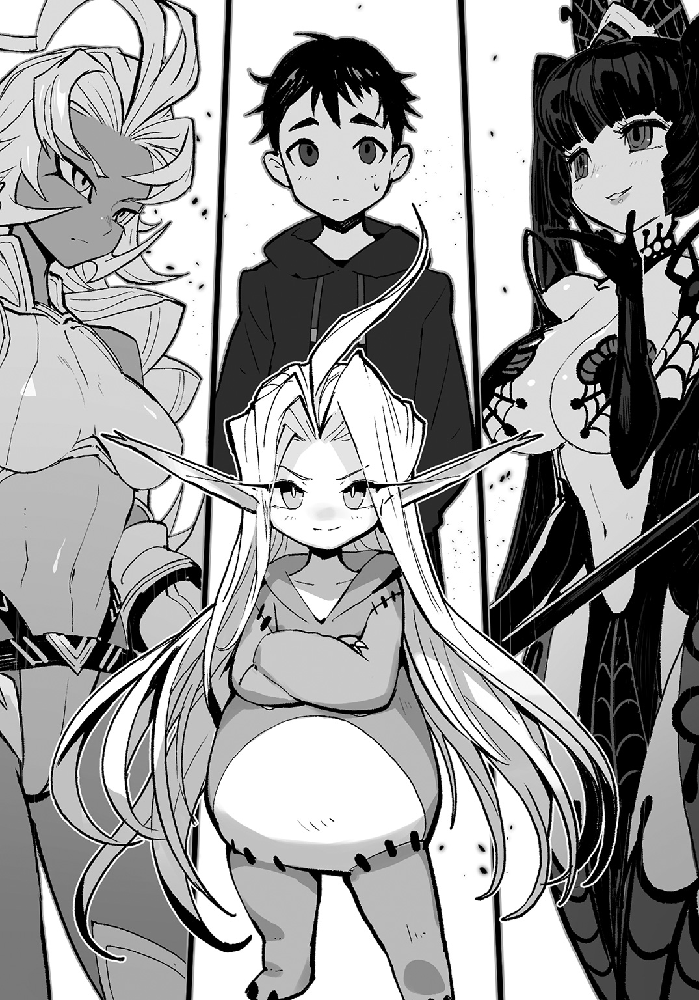
フィスト家とファー家は犬猿の仲とは聞いていたけど、嫌われすぎだろ、フォースタス・フィスト。
「わたしも同意見でございますわぁ。結果は見え見えですの。人族風情では、到底メイ様とこのわたしに太刀打ち可能な理由がございませんわ。どうせすぐに、イッてしまうに決まってますのぉ......」
《＃ ふ、富士雄は獣ですからっ!!》
ありがとうモッチー!!
メイ・ファーが、今からまたなんか言おうとしてるけど、もう無視しよう！
「は......っ、地に落ちていたフィスト家の名が、よもやこれ以上に汚れるとは思わなかった。人族......、最も唾棄すべき......、しかも、ここにやってくるという勇者やらと同じ種族というではないか。大方、人族勇者どもとも内通しているのではないか？ フィスト家は」
「あー......、今の取り消したほうがいいな、メイ・ファー」
だが、さすがに俺は口をはさんだ。
「必要を感じない。とっとと去ね、汚らわしい人族風情が」
「いやいや、メイ・ファー。おまえそれでも実力主義、バトル大好きな魔族――」
「ちょっと、そこをどいて、師匠......」
「......は？」
俺を押しのけたのは、黒のベレー帽からこぼれなびく、赤と青の髪。
「堪忍ポシェットのワイヤーがリミットぞ......」
「お、おい！ 待てクラーラ！ リーゼル！」
制服姿の双子魔術師の両腕から魔力がこぼれ、
「ちょっとストップふたりとも！ メイ・ファーには俺がフィスト家の王として、しっかり訂正させるから、二人はみんなと――」
「よくもフォースタス様を侮辱したわね」
「不許ぞ」
「......は？ え？ い、いや、俺は――」
「いくらファー家の魔王だからって、それだけは許さないんだから!! 今すぐ訂正しなさい！ メイ・ファー！」
「俺のことはどうでもいいから！」
「「よくないわよ（ぞ）!!」」
ハモられた!!
「フィストの餓鬼か。誰の前に立っていると思っているのだ？ そこを退け」
「あなたが下がればいいのよ!! 口で言っても無駄なら......」
クラーラは魔王メイ・ファーに言い返し、
『『なおも附す!!』』
双子が作り出す、【魔素契約樹】は、どちらも火焰上級魔法！ 《爆焰玉》!!
「こ......これは......ッ！」
２本、クラーラとリーゼルの影から伸びる【魔素契約樹】が枝を絡ませ、一対の巨大な幹となる!!
【情報化視界】に浮かび上がるこれが、
■ ■ ■ ■ ■ ■ ■ ■
スキル構成樹《ストラクチャ》
スキル名：【合体魔法】
属性 ： 魔術系
等級 ： Ｓ級（奇譚級）
効果 ： 同系統、同階級の魔術が形成する【魔素樹形図】を合一し威力を高める
■ ■ ■ ■ ■ ■ ■ ■
これが二人が持つスキル【合体魔法】!!
なにこれ、すごい......!! 樹形図の可能性ってほんと半端なくないか!?
ここまで綺麗に【魔素契約樹】を練り上げるクラーラとリーゼルにも、絶対才能があるに違いない。
なれるよ......
おまえら二人は、これなら立派なおもちゃ職人にもなれる!!
やっぱりおまえら二人が俺の魔術の師匠だよ......!!
【合体魔法】の威力、もしかしたらアランドラが放った《爆焰玉》よりも、流れこむ魔素の量は上......
「は......っ！」
って、今はそんな場合じゃ――
「ば、ばか......ッ!! やめろふたりとも!!」
俺にはもう一つの魔素契約樹も、見えていた。
一瞬でメイ・ファーの腕先に現れているそれ、
■ ■ ■ ■ ■ ■ ■ ■
魔素契約樹
属性： 風魔法
等級： 上級
名称： 飛翔斬
効果： 術者自身を飛翔させるほどの魔法の風を斬撃として飛ばす。
■ ■ ■ ■ ■ ■ ■ ■
風属性上級魔術 《飛翔》の応用技、《飛翔斬》。
その無詠唱。
判断、
双子の魔術よりもメイ・ファーの殺傷魔術のほうが速い!!
「そォ......っ!?」
勇者到着まで あと 47時間18分02秒
33話 三ツ巴のはずなのに
魔王が２人して俺を狙ってくるのだが
冷静にさばいてもよいだろうか（１）
――戦闘圧響ッ!!
空気がしなり魔術が炸裂。
余波が吹き荒れる。
ぱら......ぱらぱら......ら
「し、師匠......」
俺はクラーラとリーゼルの前に立ち、メイ・ファーを見据えていた。
「......なんのつもりだ、人族風情」
「それはこっちのセリフだよな」
俺は右腕の【封果チェンバー】から、メイ・ファーの《飛翔斬》の対抗魔術である土属性上級魔法《鉄鎧攻》を指先へと装塡、ぶっ放していた。
結果、双子の眼前で、俺は《飛翔斬》をリジェクト。
――俺に武術の心得はない。
けれど、メイ・ファーが一切の前動作なく放った上級魔術は、双子に致命傷を与えるに充分過ぎることくらい......
「メイ・ファー......お前は今、一番やっちゃいけないことをしたよ」
白騎士然とした魔王に、俺は告げた。
「子供に手ェ出してんじゃねぇえよ......」
「あたしとリーゼルに、なにをされてもヘラヘラしっぱなしだった師匠が......」
「激怒ぞ......」
想像が止められなかった。
脳の中で、描いてしまう。
俺のリジェクトが間に合わず、この二人が――
「......クラーラ、リーゼル......」
「な、なに？ どうしたの師匠、フォースタスさま！」
「腹痛ぞ？ 介護ぞ？」
「いや、なんでもない。......フィスト家のみんなと、客席に上がってろ」
頭を振るって、俺は双子に少しだけ笑みを返し、二人の頭をぐりぐり撫でる。
二人は頷き、バンベルグに守られるように走り去った。
「メイ・ファー......」
俺は顔をあげる。
「そんなに『十二斂魔王』になりたいんだってんなら、今すぐ決めよう......」
「面白い。相手をしてやる、人族」
「あらあら、怒ってしまわれたんですの？ 心外でございますわぁ」
隣り合うメイ・ファーとハリビュール。
スタジアムには今、Ａ、Ｂ、Ｃブロックの代表。そして、
「フォースタス・フィストの提案、認めます」
「玉璽様!!」
だがアープシーが諫める言葉に、玉璽さまは見向きもしない。
「本来ならば、いずれここに現れる勇者の軍勢、その尖兵と三人を対抗させ、その成果によって『十二斂魔王』を決めるはずでした」
スタジアムが再び静寂に包まれていた。
「しかし、玉璽の名に置いて認めます。ここでの勝者一人が、『十二斂魔王』です。では、始めてください」
俺は形にならない【魔素契約樹】を練り上げ、束ねたものを木刀のように握りしめる。
これなら瞬時に、魔術にもスキルにも、対応できる――
「人間風情が。負けを認めるなら今の内にすませろ。跪き、許しを乞え」
「そうすれば二人でいいこいいこして差し上げますわぁ」
「それはもう、できない相談だな......」
俺は魔王二人を見据える。
「子供に手を上げる奴は、......子供という存在を否定したも同然。それは、おもちゃを......おもちゃづくりを......」
俺にだけ見える魔素樹形図の剣を握りしめ、
「笑顔あふれる未来を否定したも同然だッ!!」
《＃ そのとおりです!!》
だよなモッチー!!
それだけはやらせんっ！
メイ・ファー絶 対 に ゆ る さ な い。
怒りが、俺の肌の上を樹形図のように駆け巡っているのがわかった。
『おおっとおォッ!! 突然に始まってしまったんディェエース!! 「十二斂魔王決定戦」ッ!! 玉璽さまのイキなはからい、ここに極まれりィ！』
慌てて駆けつけたのだろう。視界の端。
解説席に座るまもなく実況娘、フランベルジュが片足をテーブルにのせ、スタジアムに乗り出している。
『しかしフィスト家の魔王、フォースタスも愚かな奴だ。これは一見、ＡＢＣ各ブロック代表魔王による三ツ巴の戦いだが、現実はそうじゃない』
ぶれない解説、メルドーの落ち着いた声がスタジアム、観客の歓声の奥に聞こえる。
『重翼のメイ・ファー、そして邪神官ハリビュール・ビートの二人は、古くから親交のある家柄同士。幼い頃からライバルとして肩を並べ競い合ってきた戦友だ。いつもはいがみ合う仲だが、共に戦ったときに見せるコンビネーションは比類無双......。まして今や、二人はそれぞれの名門の名を代表する魔王になり、ブロックを勝ち抜き『十二斂魔王』候補となっている。万に一つも、新参のフォースタスが勝てる道理はない』
メルドーがなんかボソボソ言ってるが、よく聞こえない......！
でも、どうせ俺をよく言ってるはずがないので普通にスルー。
それより前方。白のメイ・ファーはすでに抜刀し、両刃の剣を高く掲げていた。
「跪け」
■ ■ ■ ■ ■ ■ ■ ■
スキル構成樹
スキル名：【重力強大化】
属性 ： 空間系
等級 ： ＳＳ級（伝承級）
効果 ： 範囲を指定し、その域内の重力を増強する。
■ ■ ■ ■ ■ ■ ■ ■
甲冑の騎士魔王の剣を飾るように出現した【スキル構成樹】が、魔素をメイ・ファーから吸い上げると同時、さらに俺の頭上に巨城のような【スキル構成樹】が降臨。
ズムゥゥンンッ！
と、俺を中心とした地面が、空間が沈み込んだ。
『いきなり決まったァァ!! メイ・ファーの通り名の一つ！ 重翼がフォースタスを包んだぁ！ これは危険ディェエース!!」
「............これは............高重力、の......」
「これであきらめる理由ができたな、人族風情。もはや動けまい？ その空間は檻となっておまえの自由を奪う。今、首をはねてやる」
自ら作り上げた過重力領域を、剣を携え、歩み寄ってくる。
そしてメイ・ファーが握る剣のリーチ、俺がその戦域に入る寸前、
「なるほど......」
右腕をかざし、俺はメイ・ファーへ、中指によるデコピンを構えた。
「これは、こうだな」
「ッ!?」
目の前の空間を中指で弾けば、
ドゴンッ!!
鳴ったのは空間か。それとも彼女の純白甲冑か。
ファー家の魔王は真後ろに吹き飛んだ。
34話 三ツ巴のはずなのに
魔王が２人して俺を狙ってくるのだが
冷静にさばいてもよいだろうか（２）
「やはりな......思ったとおりだ。メイ・ファー。あの双子と違って、おまえは決して、いいおもちゃ屋にはなれない。俺は今、怒っている。怒髪天を衝くというやつだ」
俺の中には、まだクラーラとリーゼルの【合同魔法】の情景が残っていた。
あの絡みあうスキル構成樹の美しさ......。
わかる。
あらゆる研鑽の果てにしか、あれは生まれない。
それは夢中になってやり遂げた果てに生まれる輝き......!!
つまりはおもちゃのすばらしさ!!
俺はあの双子魔術師を尊敬する！
だがメイ・ファー、お前はそれに、手を出した!!
「メイ・ファー！ やはりおまえは童心というものを忘れているようだ」
俺は自分の右腕、破城槌型にして指先に絡みつかせた、メイ・ファーのスキル、【重力強大化】の【スキル構成樹】を確かめる。
【重力強大化】も一点集中し、こうして、おはじきを弾くように使えば、破城槌のように使うことができるのだ。
メイ・ファー親衛隊の客席どまんなかにストライクさせたのは、せめてもの情けと思っていただこう。
「もうひとりお忘れでございますのよ？」
俺は頭上を仰ぎ見る。
そこにあったのは蝿の大群。
その向こうに立つは、邪神官ハリビュール・ビート。
ヴェエエエエエエンンンという大音量を放つ黒い雲に、俺の【情報化視界】が示すのは、
■ ■ ■ ■ ■ ■ ■ ■
スキル構成樹
スキル名：【破砕蝿雲】
属性 ： 物理破壊系
等級 ： ＳＳ級（伝承級）
効果 ： 高速回転、極小超硬のトゲ付き鉄球を無尽蔵に操り、対象を削り砕く。
■ ■ ■ ■ ■ ■ ■ ■
「塵屑がお似合いでございますわぁ」
全方位から、削岩機にも等しい騒音と共に黒いヴェールが俺を包んだ。
「ぁあん......、もう......まだイッちゃだめって、言いましたのに」
『まさしく......ッ！ まさしく、姿形も、血の一滴、骨の一片までもが芥と消えたァァッ!! 解説のメルドー！ なんかコメントするディェエース！』
『さきほどのメイ・ファーだが、見ようによっては重翼によって固めていたフォースタスから距離を取ったように見えた。つまり、それがこの二人の魔王のコンビネーションの布石だっただとしたら、さすがとしか言いようがな――』
「おまえもだ、ハリビュール」
「ひゃッ――!?」
俺は地中から一気に飛び出て、ドリル状に束ねた極小の破壊球の先端を、エロすぎる邪神官へと叩きつけた。
ギャギギギギィィィン......ッ!!
地面の下を掘り進んだ俺のドリルの先端は、ハリビュールが展開した防御のための【破砕蝿雲】を安々と貫通。
空中にあった彼女の肢体を、螺旋を描いて吹き飛ばす。
「おまえらは、自分の持つ強大な力を過信し、それに頼りすぎている」
『これはどうしたことディェース！ ハリビュールの【破砕蝿雲】の一部が突如暴走ッ！ 彼女に襲いかかったァーッ！ 地中に逃げていたフォースタス、間一髪ディェース!!』
実況や観客には、そう見えているのか――
もちろん、ハリビュールの【破砕蝿雲】が暴走したわけではない。
ハリビュールを襲ったのは、モザイクをかけたほうがいいような形の【スキル構成樹】をそのまま【玩具創造】で再現して生み出した、俺の【破砕蝿雲】だった。
俺は、普通に使うとまとまりのない、雲状に漂う極小高回転トゲトゲ球で破壊を行う【破砕蝿雲】を、これも一点集中――
つまりはドリル状に練り上げて、地下経由で移動しながらそのまま本人に叩き返したのだ。
というか、逆に俺は問いたい。
こういう破壊系スキルなら、形はドリルだろと。
なぜ気づかないのか、本当に、逆に聞いてみたい......！
メイ・ファーと同じく、本人の親衛隊観客席のど真ん中に吹き飛び、突っ込んだハリビュールは、熱烈なファンにご褒美を与えながらスタンドの斜面にめり込んでいる。
「どのような手段を使ったがわからないが、おまえが強いということは認めよう......」
一方、メイ・ファーは群がってくる親衛隊を張り飛ばしながら、闘技場へ戻ってくる最中だった。
「だが、終わりだ。......フォースタス・フィスト」
『いけまセェェエエンッ！ メイ・ファー！ あの技を使うつもりディェエースッ!!』
35話 三ツ巴のはずなのに
魔王が２人して俺を狙ってくるのだが
冷静にさばいてもよいだろうか（３）
「だが、終わりだ。......フォースタス・フィスト」
『いけまセェェエエンッ！ メイ・ファー！ あの技を使うつもりディェエースッ!!』
俺の【情報化視界】の中で、女騎士魔王の全身に、その【魔素樹形図】が重なり始めた。
■ ■ ■ ■ ■ ■ ■ ■
スキル構成樹
スキル名：【溶爆輝光】
属性 ： 輝光系
等級 ： ＳＳ級（伝承級）
効果 ： 高エネルギーを秘めたビームを放ち、触れたものを爆裂させる。
■ ■ ■ ■ ■ ■ ■ ■
メイ・ファーのティアラに、巨大なスキル構成樹が絡みつく。
その背後に、ジェットエンジンの排気のような烈風と大きな金輪が発生し始める。
......これ、あれだよね。
薙ぎ払え！ 系のビーム技だよね!?
「いや、普通にそれ、やばいやつ......!!」
怒りが頂点に達しているらしいメイ・ファーも気づいていない。
俺の背後の席には、フィスト家がいる。
観客たちは皆、圧倒されているのか、立ち上がることもできていない。
「溶けて消えろ」
直視することができない光条が、メイ・ファーの頭上に灯った。
「..................」
だが、それ以上の変化が、起こらない。
――いや、金輪は停止し、沈黙を始めているのだ。
「......な、なに？」
俺は【魔素樹形図】の剣を振るい、メイ・ファーに生まれているスキル構成樹に干渉。
それを停止させていた。
『なにが......なにが、起こっているンディェエース......!?』
「な、なぜだ......!? 我が【溶爆輝光】が、なぜ発動しないのだッ!?」
やはり、この魔王にも、【魔素】も【スキル構成樹】も、見えていないらしい......。
ユユグロの時に判明していたが、どうやら俺は、他人の【魔素樹形図】――つまり、魔術を作り出す【魔素契約樹】も、スキルを発動させる【スキル構成樹】も、【玩具創造】で書き換えることで干渉できてしまうようだった。
今やメイ・ファーのスキル構成樹は俺に介入され、魔素が注がれるラインを切り離されていた。
俺はそのまま、騎士魔王の目の前に立ち、隙だらけのメイ・ファーの白甲冑に手の平を当てる。
「き、貴様、なにを......っ」
「これ、使わせてもらうな」
俺が発動したのは【玩具創造】のデミスキル【再構成】。
女騎士魔王、メイ・ファーの甲冑が次の瞬間、俺の思い描く通りにバラバラになった。
「ッ........./////////......ッ!?!?」
「......え？ メイ・ファー......、おまえって、鎧の下、それだけだったのか？ というか、すごいかわいい下着だな......！」
「み、見るな貴様ッ!! 千切るぞッ！」
「っと、すまん！」
俺はすぐさま指先でメイ・ファーの下着の端に接触。
繊維をセーターのように広げ、肌を覆ってやる。
「っ!?!?」
驚きの表情を浮かべるメイ・ファー。
俺はコイツを、公衆の面前で辱めたいわけではないのだ。
俺が手に入れたかったのは、メイ・ファーの甲冑。
その素材。
彼女の甲冑はどうやらものすごい特殊な金属でできていることが、俺、すごい気になってた。
俺の【情報化視界】は、常におもちゃの素材になりそうなものを見逃さない。
【大百科】によれば、女騎士魔王の甲冑に使われている素材はこうなる。
■ ■ ■ ■ ■ ■ ■ ■
【シャンバライト・クリスタル】
希少金属。注がれる魔力の量によって硬度を変える。
魔力濃度は変更可能であり、魔力が多ければ多いほど硬く、逆に少ないと柔らかくなる特性を持つ。
■ ■ ■ ■ ■ ■ ■ ■
つまり、【再構成】により、俺が手を当てたメイ・ファーの鎧が変化し、手足を封じる頑丈なアクセサリーとしただけなのだが......
「まあ、下着の質量がそもそも足りなかったが......、今の露出度はハリビュール並だからいいだろう」
「いいわけないッ！ お、おのれっ!! 我の鎧を返せっ!! くッ......、どうして、これ......手錠っ!? 外れない......ッ！ 我ならば、壊せるはずなのに......」
「いや、だめだ。このシャンバライトはハリビュールを拘束するのにも使うから。こっちも予想よりだいぶ量が少ないし」
言いつつ俺は、いまだ客席で目を回している全身網タイツというか、レース素材の神官服を着用の爆乳魔王の手足も、シャンバライト・クリスタルとかいう希少金属で封じさせてもらう。
「二人には、どうしても特性スキル【童心】を思い出してもらう必要があると、俺は思うんだよな......」
俺は残りのシャンバライト・クリスタルに魔素を注ぎこみ、細くとも硬度を保ちながら、
「【再構成】！」
それを一気に作り上げる。
「うん......なかなか、いい出来だと思うんだが......」
モッチー、どう思う？
《＃ メルヘンチックで、素敵です!! これは、メリーゴーランドですよねっ？》
その通りなのだ。
木馬とシャンデリアで構成されるカルーセル。
夢いっぱいの大きなおもちゃといっていいアミューズメントを前に、俺の女神はこう言ってくれているのだが、
「な、なんだ、それは......まさか」
メイ・ファーは蒼白な表情で、俺の創作物を前に愕然としている。
「拷問具......!? これ以上の辱めは受けぬ！ くッ！ こ、ころ......っ」
ッ!?
言うのか？ この女騎士魔王、ついに言ってしまうのか......？
36話 相手のスキルも見切ったところで
そろそろ反撃してもよいだろうか
言うのか？ この女騎士魔王、ついに言ってしまうのか......？
「こ、コロ......、コロッセオを......！ 神聖なコロッセオを、そのような拷問具で汚すことは許さんぞ！」
おしいいいいッ！
あれ？ でも、字面的に、言ってはいる!?
くっコロッセ......ォオ......
まあいい！
「これが拷問具なわけないだろ。これは......メリーゴーランドって言ってな」
が、見たことあってもわからなかったかもしれない。
なにしろ、いわゆる丸いテント型一軒まるまるのメリーゴーランドは、材料量の関係で作れなかったのだ。
だから俺が作ったのは、いわゆる有名テーマパークのパレードの時にズンタカやってきて、キャラクター達が乗っている車？ 輿？ みたいなやつだった。
そういうフロートステージの上に、木馬が４匹くらいいて、台座には車輪がついてて、ひとことで言えばミニサイズのパレード移動式メリーゴーランドって感じなのだが、
「これはおまえとハリビュールを乗せ、このスタジアム中を駆け回るおもちゃ......、魔王二人に楽しい思い出をつくり、その記憶はやがて童心を思い出すためのおもちゃアミューズメントなのである」
「は............!? おも、ちゃ......？ アミュー......ど、どういうことだ!? 貴様、ふざけているのか!? それが勝負にどんな関係があるっ！ いい加減に起きろ！ 目を覚ませハリビュール！」
「んん......ふぁあ、あ......、あっ、な、なんでございますの......？」
二人はジタバタ、もぞもぞと動いているが、俺がありったけの魔素を注ぎ込むシャンバライト・クリスタルは盤石。
俺はなおも【再構成】の力と、素材の特性を活かしながら、飴細工のように伸ばしたシャンバライト・クリスタルでもって、クレーンの要領で捕らえた魔王二人の身体を、フロートステージ上の馬に持ち上げ、
「くっ！ や、やめろっ！ やめろぉ!! 貴様！ 許さんぞ！」
「いったいこれは、どんなプレイでございますのぉっ!?」
馬の胴をしっかり座らせ、ポールにきちんと両手を添えるようにして、固定した。
「よし......メリーゴーランド、始動！」
後部に乗り込んだ俺は、両手で動力滑車をぐるぐる回す。
すると、
♪～♪ ♪～♪ ♪～♪ ♪～♪
内蔵されたオルゴールが、蓄音機のウッドコーンの要領でメルヘンティックな音楽を倍増させ、音楽にあわせてメリーゴーランドはスタジアム、闘技場の観客席沿いをゆっくり賑やかに進み始めた。
「よし、うまくいった！」
あっけに取られてこちらを見ている観客達に手を振りながら、【玩具創造】の出来栄えに満足を覚える。
これだけの大型おもちゃ、いつか作ってはみたいとは思っていたし、夢想もしていたのだけど、実際こうして形にしてみると、感無量......ッ！
モッチー愛してるッ!!
もちろん、馬に繫がれたメイ・ファーとハリビュールは、上下に揺られながら、メリーゴーランドを満喫しているはずなのだが、
「......な、」
はっとするような声。その主、メイ・ファーを見れば、
「なんだ！ なんなのだこれはーっ!!」
俺と目が会い、慌てたようにがちゃがちゃと、馬の上で身体を揺すっている。
「勝手に！ 勝手に動いて進んで......妙なメロディー......でございますわね」
隣のハリビュールは澄ましながらも、興味深げに馬に揺られている。
「いかがかな、メイ・ファー、ハリビュール！ 楽しいだろ......？ 思い出したか？ 童心というものを」
「なんの......ことだ......？ いいからこれを止めろ！ いったいどういうつもりだ！」
「上下に動いて前に進むだけ......。痛いわけでも、苦しいわけでもございませんし、なにがしたいんでございますの......？」
「ふふふ......、ふたりとも、いつまでそうやって平静を保っていられるかな？」
「や、やめろっ！ スピードを、上げるな......っ！」
俺は動力滑車をグルグルと早め、加速！ 闘技場外周をさらに進む！
「そんなことをしても、わ、我は、なにも感じることなど、ない......！」
「じゃあメイ・ファー。なんで少し顔を赤らめ、きょろきょろとまわりを見回してそわそわしている！」
「し、してなどいないッ！ デタラメを、言うな！」
「強情なやつだな、メイ・ファー......。さすがはファー家の魔王と言ったところか」
ファー家がどんな家風だか、知らないのだが......なんとなく、な！
「我には......これが勝敗を左右する決め手などになるとは、到底思えないのだが......」
がつん！ と、メイ・ファーは、おでこをメリーゴーランドのポールに打ち付ける！
「それがなんであろうと、フォースタス！ 貴様の思惑通りになどならぬ!! このメリーゴーランドとやらが、迂遠な精神攻撃だとしたら、なおさらな!!」
「ほう、気丈なことだ。だがな、」
俺は親指でクイッと指し示し。
「だがな、メイ・ファー。おまえの幼なじみはどうかな？」
「な......っ！ ハリビュール!?」
邪神官ハリビュールは、すでに堕ちていた。
勇者到着まであと 46時間57分00秒
37話 口で言ってもわからないなら
魔王二人を童心に返してもよいだろうか
邪神官ハリビュールは、すでに堕ちていた。
「なんでございますの......？ この、このふわふわした気持ち......。尾てい骨の底から沸き上がるむずむずが、止まりませんの......！」
エロ魔王、すでに目がハート!!
無邪気に馬の上で姿勢を変え、メリーゴーランドが与えてくるウキウキをきっと、自分の気持ちと肉体に素直な分、抵抗できなかったのだろう！
魔族は、幼いころの感受性多感な時期を一足飛びにして、成人の精神を手にいれるという。
しかしそれは感受性が低いということを表さない。
逆に、チャンスさえあれば、それは幼い頃に乗り越えていないぶん、いつでも発現してしまうということなのだ!!
たぶんな......!!
「そ、そんな......！ まさか、あのハリビュールが!?」
「もっと......、もっとでございますわッ！ もっと激しく......回してくださいませぇっ」
「それだ！ それが楽しいだ！ 童心を取り戻したようだなハリビュール......！ もっと言ってみろ！ 『楽しい』と！」
「待て！ 目を覚ませハリビュール！ これはこの人間の卑劣な精神攻撃だ！ 正気を取り戻せ！」
「無駄だメイ・ファー。童心は、子供の心をきちんと見つめる羅針盤。子供を見守り、未来へ導く役目を持つ大人がそれを完全に失ってしまったら、子供は安心しておもちゃで遊べなくなってしまうのだから......!!」
俺はいっそう、動力滑車を回す手に力を込める！
『まったくもってフォースタス・フィストの言っている意味がわかりまセェーンッ!! これは本当に、魔術卿フォースタスの精神攻撃なのか!?』
「い......今までに感じたことのない心持ちでございますわぁっ！ これが、童心っ！ この開放感......、呼吸をするのも『楽しい』というものなのでございますのね......っ!!」
全身網タイツ魔王はもう、紫色の瞳をキラキラ、メリーゴーランドの上下運動に身を任せ、観客たちに激しく手を振っている！
ほんとたのしそう！
「おのれ......なんということだ......。ハリビュールの中に編みあげられていた緊張の糸がバラバラになってしまっている！」
その様子に、メイ・ファーは下唇を嚙み、
「ああなってしまっては、もう『十二斂魔王トーナメント』を続ける気迫と気合は、元にはもどらないッ！ 奴はもう、戦えない......!!」
「え？ そ、そうなの......？」
緊張が解けちゃったってことかな？
「こうなったら、我はあのハリビュールの分まで、戦い抜いてみせる!! 我はこのメリーゴーランドなどというモノには絶対に屈しない！」
おもちゃ屋としてのプライドに、真っ向から挑戦してくるようなそのセリフ！
「なに......？」
俺の脳のシナプスに激しい交流電流が流れこむ！
「なら、これはどうかな......？」
俺の手に握られる、うねる魔素樹形図の剣が荒ぶった。
「......あっ」
ふわりと、メイ・ファーの乗った木馬が、浮く。
短時間ならば、今の俺でもなんとかなるはず......！
「俺のメリーゴーランドは今、メリーゴーランドを超える......!!」
俺の【魔素樹形図】がその時生み出していたのは、メイ・ファーの【重力強大化】。
彼女が本能的に下方向へ使っていた力の向きを、スキル構成樹を逆方向へ形成することで反転。
さらに【玩具創造】で同時にメリーゴーランドをぷかぷか使用に改造しながら、
――まさにメルヒェン!!
浮かぶメリーゴーランドを実現させたのだ！
「はぁぁぁぁぁ......んっっ！ こ、こんなぁ......っ」
度肝を抜かれた表情のメイ・ファー！
わずかな間なら【重力強大化】を応用し、こうして空中浮遊的な使い方でも、なんとかなる......ッ！
「言わない......言わないっ!!」
だが効果はてきめんだ......ッ！
メイ・ファーは、足をばたばたさせ、首をいやいやしながらも、おしりをもぞもぞ、瞳、輝いてるの、俺にバレバレなのだった!!
「我は言わぬぞ......！ 我はファー家の魔王！ 絶対に、他の魔王に......人族風情に、屈したりせぬ......！」
「無理はよくないぞメイ・ファー。本当は、ハリビュールのように笑い出したくなるくらい楽しいんだろ......!?」
「んんっ、くぅぅ......っ！ ちがうっ！ 楽しくなど、ない......ッ」
「ほらっ！ ふわふわーっ！ ふわふわーっ！」
「楽しくない......っ！ 楽しくなんか、ないいッ!!!!」
俺は、よりメルヘンチックに、くるくるとメイ・ファーの木馬を、周辺のメリーゴーランドのインテリアを音楽に乗せ、キラキラさせた！
「ぁあ......こ......こんな......っ」
『がんばれー！ がんばれーメイ・ファー!!』
『メイ・ファーさまー！ がんばってー！』
『根性ですぞメイ・ファーどのー！』
スタンドの観客達、特に親衛隊たちは、必死にメリーゴーランドの魅力にあらがう魔王にエールを送り続けている！
だが、
「こんなの、も、もう、決まってる......」
メイ・ファーの顔、真っ赤なんだが！
彼女はポールを握りしめる両手にすがるように、うめく。
ファー家の魔王の表情は、もう、幼子のそれ......ッ!!
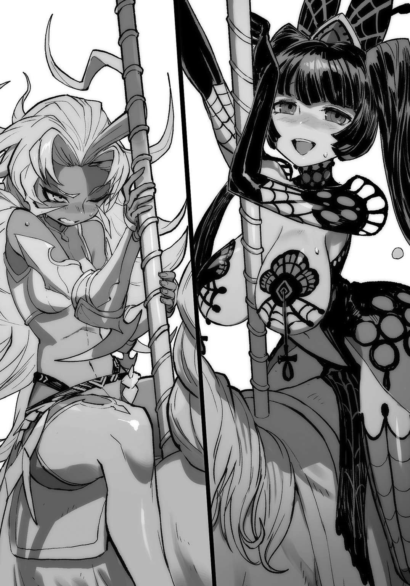
「おのれ......このようなもの、た......楽しいに、き、決まって――」
『そこまでです』
「ッ!?」
突如響く玉璽様の声......ッ!?
「......ぐっ！」
俺は浮かび上がらせていたメリーゴーランドを元通り構成しなおし、床に着地させる。
「はぁッ、......はぁ、......はぁ、......はぁ」
正直、俺もギリギリだった。
正しい使用方以外のスキル行使、しんどすぎる！
同時に俺の視線は、そのままスタンド高所にいる玉璽様の視線を追っていた。
闘技場の一角。
白い一本のタオルが、投げ込まれている。
投げ込んだのは、ロマンスグレーの髪をオールバックにした男性の執事。
執事服の上に、『メイ・ファー命』と書かれたハッピみたいの着ている!!!
「親衛隊ってファー家の面々だったのかよ......!!」
しかもあのラブライ◯ー達、なんかみんな、泣いてるし!!
ともかく、ファー家の執事が投げ込んだあれは、ギブアップを示すタオルとかに違いなく......!!
「メイ・ファー様ァッ！ ご立派！ ご立派じゃったァァ!!」
「もういいんですメイ・ファーさまぁああ!!」
「あんたは世界一の魔王だよぉおお!!」
「我々のために、我々のために、あなたって人は......!!」
おおお......なんというか......
ファー家、仲よきことは、良きことかな！
「しかし、これでメイ・ファーも心を入れ替えただろう......たぶんな......」
しかたない。これに免じて、とりあえず今日のところは、クラーラとリーゼルのことを許してやるとするか......
『メイ・ファー並びにハリビュール・ビート、戦意喪失！ よって十二斂魔王トーナメント、優勝者は』
「......おお？」
そしてその瞬間、
『フィスト家魔王、フォースタス・フィストォォォォッ!!!』
俺の十二斂魔王が決まった。
勇者到着まで あと 46時間50分38秒
38話 ついに十二斂魔王が決定されたのだが
最初にちょっと言っておいてもよいだろうか（１）
『メイ・ファー並びにハリビュール・ビート、戦意喪失！ よって十二斂魔王トーナメント、優勝者は』
「......おお？」
そしてその瞬間、
『フィスト家魔王、フォースタス・フィストォォォォッ!!!』
俺の十二斂魔王が決まった。
「............え、ええっと......？」
『勝者よ、ここまであがってこれますか』
観客席上部、貴賓席みたいなところから、クマいキグルミを来た妖精王女が俺を見つめている。
「おおっ！ 玉璽さま......、って」
ふと俺の耳に、スタジアムの歓声が流れ込んでくる。
「あ、これで......？？ 俺......が」
《＃ やりましたね、富士雄っ!! ついにこれで十二斂魔王です！》
モッチーが俺の【情報化視界】の中でくるくると踊っている。
まわりを見れば、実況のフランベルジュが喉を嗄らさんばかりに、この状況をがなりたて、双子がスタジアムを破壊し、周囲の観客を吹き飛ばしながら、こっちにダッシュ。手を振っている。
それを慌てて追うフィリップとバンベルグ、傍らのヨーハン。
そして家臣団。
「やったわねフォースタスっ！ ねえこれ夢じゃないの!? フィスト家から十二斂魔王が出たのよ!? ねえ、信じられるっ!? 私は無理っ！ 無理よこんなのっ!! 大好き！」
「感無量ぞ！」
「フォースタス様、このフィリップ・フィスト。生涯、あなたについていきます」
「オレぁッ！ 信じてた！ 信じてたぜフォースタスの兄貴ィッ!!」
「おみごとです、若」
「んぐおおっ！ 待て！ 待っておまえら！ 俺が裂けちゃう！」
『おめでとうございます、フォースタス殿』
フィスト家が作る波に呑み込まれる俺の腕を引っ張って浮上させたのは、下まで降りてきてくれたキグルミ王女。
「あなたの戦いに、玉璽である私もつい立場を忘れ、魅了されました。きっと観客たちも同じ思いでしょう。すばらしい試合でした」
「いや......、こちらこそ礼を言わせてもらいたいぐらいなんだが、玉璽さま」
「フォースタス殿がお礼を？」
「ああ」
思い返す。
なんせ、俺はこの一連のトーナメント戦をめぐって、凄まじい勢いで今後のヒントをもらえたのだ。
まず、フィスト家の双子から魔術を習うことで、俺はこの世界でおもちゃづくりが最高になるという手応えを感じ、そこでもうわくわくが止まらなくなっていた。
魔術すごい。
そしてアランドラからは魔力の流れ、つまりはこれからのおもちゃづくりの根幹となるであろう魔素と魔力についての、さらなる発展と機微の兆候を。
ユユグロからは、魔術に並ぶ重要な要素である【スキル】に秘められた可能性を。
スキルすごい。
それからつい今しがたにも、メイ・ファーとハリビュールからは、童心をメリーゴーランドでよみがえらせるという、子供をわくわくさせるおもちゃという枠、それをさらに拡大するヒントまでもらうことができたのだ。
異世界すごい......!!
つまり、俺、この宮殿を囲む城下町、『特都』の『十二斂魔王』になったんだし、いいよね......？
魔族の雰囲気を中心にした、テーマパーク的な改造とか、やっていいんだよねっ!?
暮らしやすさとたのしさは、絶対共存させるからぁぁ......っ！
というわけで！
俺はここで、この異世界で始まる遙かなるおもちゃ道、その縮図をいっぺんに見せてもらった気がしてる!!
転生して早々に、こんな気付きの場、そして実践トライアルの場まで用意してくれているなんて、本当にお礼を言いたいのは俺のほうだった。
俺こそ、魔大陸の住人たる魔族たちと、そしてここに転生させてくれたモッチーに、最大限の感謝を贈りたかった。
これが俺の、みんなに礼を言わなければならない理由。
しばらくの黙考。無言のヘブン状態。
黙ったままになってしまっていた俺は、はっとなって、
「あっと、いけね。え......ええとつまり、玉璽さま、俺はですね、俺の目的にまた一歩、近づくことができて、嬉しいっていうか......」
「フォースタス殿の目的とは？」
「そりゃ、もちろん......っ――」
この感謝の気持ち、一言で表すならば、
「俺の目指す、『子供達が一人残らず、とびっきりの笑顔になる世界』のために!!」
「なるほど......」
「とは言っても、まだ会えていない魔王が結構いるみたいで、そいつらも色んなスキルをもってると思うと、こう......、不謹慎にもワクワクしちゃうというか......」
すると、そんなおもちゃを着込んでいると言っても過言ではない、玉璽さまは、
「わたくしはまだ、フォースタス殿を甘くみていたようです。これなら安心して、あなたにこの王権を授けることができます」
「......そ、そう、なのか？」
「そしてフォースタス殿。たとえここでいくら他の魔王が異議を唱えても、たとえあなたがやっぱり嫌だと言っても、すでに結果は出ており、これを覆すことはできません」
「は、はぁ......」
「フォースタス殿。あなたを次代の『十二斂魔王』に任命いたします！」
「うぉおおおぃいい......ッ！ だからやめろフィスト家ェ......ッ！」
玉璽さまの宣言直後、俺の全身がフィスト家によって再び千切られんばかりに引っ張られる。
やばいやばい！ おまえら興奮しすぎ!!
元の世界なら、この有り余るパワーを胴上げに使うんだろうけど、そういう喜び爆発文化に魔族は慣れ親しんでないのかな？
とにかく俺を四方八方ひっぱるな!!
お ち つ け......!!!
『フォースタス・フィストよ！』
玉璽さまの凜とした声が、スタジアムに響き渡る。
『我が権能と古の盟約の名において、汝、フィスト家魔王、フォースタス・フィストを、魔族十二家の頂点に立ち、それらを統べる王たる十二斂魔王として印綬せんっ！』
「おお......っ！ なんか、じわっと来た!?」
テディベアのキグルミ妖精王女の両手が、俺の頭上にかざされた瞬間、周囲がみしみし鳴る中、俺の身体にも波のような変化が通り抜けていく。
ん？ しかも、心なしか、力が溢れてくるような......
《＃ トロフィーを獲得しました♪》
おおっ！ やっぱし来たか！
《＃【プラチナ】 『十二斂魔王』》
プラチナ大盤振る舞いだな......ッ！
というか、『十二斂魔王』もトロフィーの一種としてもカウントされるのか。
《＃ トロフィー獲得リワード 十二斂魔王特性スキル 【魔族十二家支配】が解放されました》
勇者到着まで あと 46時間23分19秒
39話 ついに十二斂魔王が決定されたのだが
最初にちょっと言っておいてもよいだろうか（２）
《＃ トロフィー獲得リワード 十二斂魔王特性スキル 【魔族十二家支配】が解放されました》
おおッ!? 【魔族十二家支配】？？ って......、つまりそれは、えっと、俺が十二家の代表の魔王になるんだから......え？ 魔族そのものを、支配ってこと!?
《＃ トロフィー獲得リワード 十二斂魔王特性スキル 【最終迷宮管制】が解放されました》
ちょ......なんだなんだ!? トロフィー獲得リワード、一個だけじゃないのか!?
ラ、ラストダンジョン......？
てことは、もちろんそこも......ラストダンジョンも、魔族のテーマパークにしていいんだよね......？
魔王の城にたどり着くための、長く長く厳しいラストダンジョンすら、自由に管制していいってことだよね!?
......そうか、やっぱり十二斂魔王はそういう――
《＃ トロフィー獲得リワード 【情報化視界】制限解除【情報化視界】派生【デミスキル】【思惑看破】が解放されました》
早い早いっ！ ちょ、待......っえ？ 今度は、【思惑看破】？？
なんかそれって、字面的に、地味にすごい気が――って、いや待て、
まだ他にも新取得スキルが.........
...............、
.........もう、ないか？
なんか、今の俺、スキル獲得に翻弄されて、乙女みたいにモジモジしてしまい、玉璽さまとか、俺の周囲でまだまだ俄然盛り上がってるフィスト家の面々に変な目で見られているが――
なんだよ、みんなで俺を見るなよ！
照れるだろ！
よし、だったら俺はみんなを、さっそく【情報化視界】の新たなデミスキル、【思惑看破】で覗いちゃうからな？
まずは、玉璽さまっ！
■ ■ ■ ■ ■ ■ ■ ■
名前： ？
真命： ？
種族： テディベア
クラス： ？
■ ■ ■ ■ ■ ■ ■ ■
きょとーんとしてる玉璽さまの思惑
（玉璽さまのドット表情）
＜？
■ ■ ■ ■ ■ ■ ■ ■
玉璽さまはだめだ！
最初からヘマした！
しかし、いったいなんなんだ玉璽さまって......！
というか、本当に「？」って思ってるのか？ たぶん違うだろうけど！
じゃあ、ちらっと、わかりやすそうなフィリップ!!
■ ■ ■ ■ ■ ■ ■ ■
フィスト家から十二斂魔王が輩出され、アゲアゲになっているフィリップ・フィストの思惑。
（フィリップのドット絵表情）
＜「ああ......ッ！ フォースタス様くらいの力が自分にもあれば......！！ これから自分は、フィスト家の将軍としてフォースタス様を補佐し、フォースタス様の名にも、フィスト家の名にも恥じない武人になることをここに誓うッ！！」
■ ■ ■ ■ ■ ■ ■ ■
ま じ め か !!
ついでにバンベルグ！
■ ■ ■ ■ ■ ■ ■ ■
バンベルグ・フィストの思惑
（バンベルグのドット絵表情）
＜「フォースタスの兄貴と一緒にトレーニングしたいぜ！」
■ ■ ■ ■ ■ ■ ■ ■
脳 筋 な !!
ともかくこの【思惑看破】かなり便利だぞ......？
またモッチーとスキルを整理して、今後に備えなくちゃな！
《＃ はいっ！ 私も今、感無量で......！ 優勝......ゆ、優勝......おめでとうございますっ！ 私も富士雄に、ずっと......ずっとついていきますからっ！》
モッチー好き好き超愛してるッ!!
泣くな！ モッチー泣いちゃダメ！ ああ、俺ももらい泣きしそう！
がまんがまんっ！
だって、いっぺんに新スキルが搭載されたり環境が激変したり、いろいろ整理しなきゃなんないことが山積みだが、忘れないうちに、これだけは言っておかなきゃならない!!
「玉璽さま、このスタジアムに集まってる魔族たちに、俺からひと言、いい......？」
「かまいません。どうぞこちらへ」
キグルミ妖精が導いてくれたのは、観客席からすこしせり出した、演説台のような場所。
その足元に、風属性の中級魔術《風射》を応用した拡声魔術が施してあった。
風属性の樹形図って、ほんっと応用しがいがありそうだよなぁ......。
あー、なるほど、これがマイク代わりか！
よし、《風射：拡声》として覚えておこう。
ともかく、
『あー、あー、テステス......』
俺の声が、スタジアムに響いた。
『このたびは征夷大将軍――もとい、この地から勇者を退ける十二斂魔王に任命されたフォースタス・フィストです。な、なんか......いろいろ応援、ありがとう......！』
微妙などよめきが観客席に満ちる。
『見ての通り、俺は人間、人族だ。魔族じゃない。だがフィスト家の魔王として生まれた。だから俺はフィスト家を裏切らない」
俺はすっと息を吸って、
『そしてフィスト家が愛する魔族を、俺は絶対に裏切らない』
どよめきの色が変わる。
俺は３秒待ってから、
『勇者は――』
【情報化視界】の中のカウントダウンをチェック。
勇者到着まで あと 46時間35分57秒
『おおよそ二日後、この『特都』に到着する。けど、慌てることは、ないんじゃないかな』
ざわめきが収まり、代わりに、スタジアムの空気が濃密な疑問系の気配で満たされてゆく。
『この戦、フォースタス・フィストと勇者の一騎打ちで、決着をつけるつもりだ。
場所はもちろん、ここ！ このコロシアムにて......ッ!!』
スタジアムが、バトル大好き魔族たちの歓声で弾けた。
「勇者をここに呼ぶのですか？」
拡声ステージから降りてきた俺に、玉璽さまが並んでこっちを見る。
「そのつもりですけど？」
「十二斂魔王がそのように言うのでしたら構いませんが、それではいろいろと防備を整えなくてはですね」
「っ......!!」
瞬間、俺の体内を電撃がつらぬく！
もちろんこれは比喩表現で、そもそも雷撃系の魔術ってこの世界にあるのか？
俺のしたためていたプランと、この都市の代表者でもある（あった？）玉璽さまの言葉が融合、啓示となって俺を打つ!!
と同時に、俺の意識より早く、【玩具創造】の【スキル構成樹】が木の根のように全身から四方八方へ広がってしまい......っ！
「それです玉璽さまっ!!」
俺は、今すぐにでも発動してしまいそうになる【玩具創造】を、綱引きのように体内へ収めながら武者震った。
「すぐに......すぐに準備しなければ......っ」
勇者到着まで あと 46時間32分19秒
おまけ 37話終了後の
フォースタス・フィストのステータス
十二斂魔王トーナメント優勝直後のフォースタス・フィスト ステータス
■ ■ ■ ■ ■ ■ ■ ■
名前： フォースタス・フィスト
真命： 米村 富士雄
種族： 人間
クラス： 魔王
新取得スキル
ハリビュール・ビート由来スキル：【破砕蝿雲】
メイ・ファー由来スキル： 【重力強大化】
【溶爆輝光】
十二斂魔王由来スキル： 【魔族十二家支配】
【最終迷宮管制】
【情報化視界】由来デミスキル： 【思惑看破】
■既取得スキル：
『パパママ・おしえてスカウター』由来スキル：【情報化視界】【強化索敵】【天の声】
『なんでもＭＹひゃっか』由来スキル： 【大百科】
（【情報化視界】とリンク済み）
『だいまほうつかいステッキ』由来スキル： 【大魔力ブースト】
魔王特性スキル： 【心魂契約】
おもちゃの女神 モモチャ由来スキル： 【玩具創造】
アランドラ・トアロ由来スキル： 【精密魔力知覚】
ヨーハン・フィスト由来スキル： 【本領封印】（未発動）
ユユグロ・カフォン由来スキル： 【次元隙】
■既取得デミスキル：
【情報化視界】由来デミスキル： 【魔族ステータス看破】【視覚化マスコット】
： 【魔素知覚】【魔素契約樹知覚】
： 【スキル看破】【スキル構成樹知覚】
【精密魔力知覚】由来デミスキル： 【未来視：二秒先の世界】
富士雄オリジナルデミスキル： 【封果チェンバー】
【玩具創造】由来デミスキル： 【再構成】 【復元】
【増産】【融合】
魔族ステータス：
〔戦〕 ３５０００
〔謀〕 １９０００
〔非〕 ２５０
■ ■ ■ ■
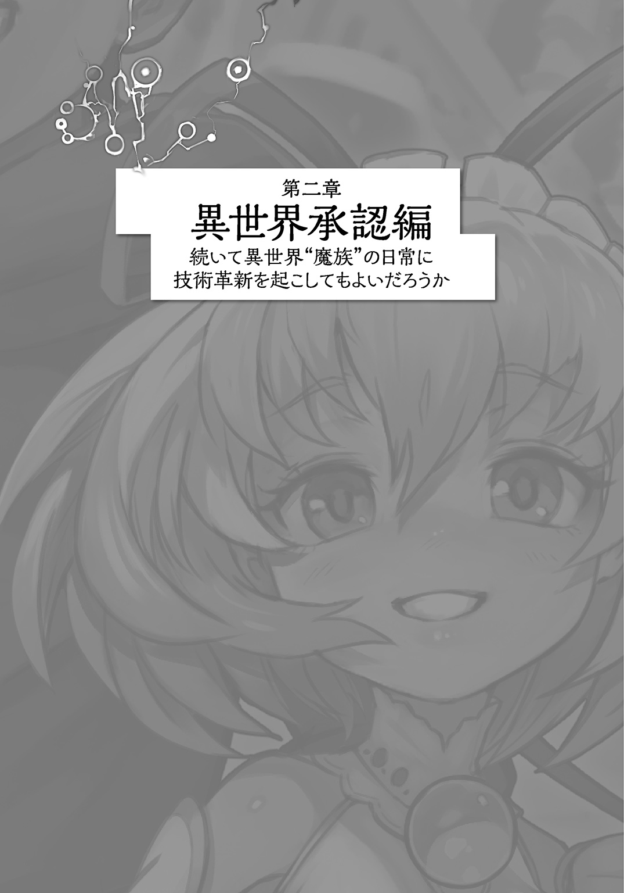
40話 プロローグ
姫と勇者と裏切りの暗殺者
.........
......
...
魔狼の群れに囲まれて、
「ああ......厄い......なんて厄日だ......糞チクショウ......」
貧相な木の根本に転がる長身の男も、また、貧相な風体だった。
森。
人界未踏。
濃く深い森の、深層部だ。
血が足りない。精気が足りない。
なにより足りないものは力だった。
......ギルドのメンバーたちと、......あいつらと一緒なら、殺れた。
だが、一人でもできると思った。
だからここにいた。
やるしかなかった。
――瀕死の状態で転がる男は、有能な暗殺者で、ロクデナシのヒトデナシだった。
名をフーシャルル・ＪＢ・ランプブラック。
フーシャルルは仕事として、とある『姫勇者』の元へ送られ、そして、暗殺対象である彼女に惚れた。
２年前の話だ。
惚れたのだ。
だが厄介なことに、フーシャルルは、自分の中に抱かれたその感情を理解することができなかった。
生まれ落ちて40年。
彼が最も親しみ、胸の中で動かせる情動は唯一、怒りのみだった。
だから猛烈にフーシャルルは腹を立てた。
姫勇者がムカついてしかたなかった。
ずっと、今すぐに殺してやろうと思っていた。
現に、いつでも殺ることができた。
――本気だった。
『姫勇者』ネイシア・ＪＢ・パールヘイズ。
彼女は王家の血を引く、本物の姫だった。
兄が１人と２人の姉。
４人兄妹の末っ子。
本来ならば、一番上の兄が王を継ぎ、末の三女のネイシアなどは、お飾り外交に勤しめば満点。
たとえ身分を利用して放蕩の限りを尽くしても、誰から責められることもない。
そういう身分だ。
だがネイシアには、他の兄妹が持たない力があった。
生まれながらに持っていた、強い魔力。
一人の兄と、二人の姉。
誰かがネイシアの力を恐れた。
ネイシアは幼くも聡い子供だった。
彼女は自分が生み出すであろう跡目争い、その醜い政争を、自分で消し去ることにした。
本能的に城を出た。
身を捨て一介の冒険者になり、冒険者ギルドを作った。
冒険者ギルドに入った者は、慣例としてミドルネームにギルド名を入れる。
ギルドの名はジェイルバード。
称してＪＢ。
合計人数が10人にも満たない、弱小ギルドだった。
他のギルドのように、金儲けや名声に走らず、ジェイルバードは弱者の味方だった。
いつのころからか、彼女の出生を知らぬものさえ、ネイシアを『姫勇者』と呼ぶようになった。
暗殺者フーシャルルは、自分が誰の命令で、ネイシアを亡き者にするのか、意に介さない。
それを知ることは仕事の内に入っていない。
『魔法陣大陸』――通称『魔大陸』に渡り、魔族の王、魔王を倒すと彼女が言い出した時、フーシャルルはすでにギルドの腕利きニンジャとして古株になっていた。
いつでも殺せる。
『フーシャさんはそうやっていつも落ち着いていらっしゃるので、私も見習わなきゃです』
おっとりしているクセに、すぐに一杯一杯になってしまう姫勇者。
困っている誰かを見捨てられず、後先考えず行動を起こしてしまう14歳の姫――
ネイシアの思惑とは別に、彼女が魔王を討伐してしまえば、次代の王は彼女、ネイシア・パールヘイズになるだろう。
彼女がそれを望まなくとも、時代がネイシアを選んでしまう。
だが、俺が殺すまでもなく、このままなら、あの姫勇者は終わるだろう。
――いったい誰が『魔導外骨格』なんてものをこの大陸に持ち込んだ!?
決まっている。
どこまでネイシアの兄姉は糞なんだ。
ネイシアも馬鹿すぎる。
一瞬ですべてが瓦解した。
このままじゃ、なにもかもが糞だ。
「ああ......チクショウ......」
そもそも、オレはなんでこんなところにいるんだ？
壊滅寸前の、あの冒険者ギルドのために、救援を請いに......？
この俺が......？
俺は、とっととトンズラさせてもらっただけだ。
あのクソ迷宮から。
だが、しくじった。
魔狼の群れは、振りきれない。
こんな魔物の糞になるために、オレは生まれてきたのか。
「まったく、厄日だ......ついて......ねぇ......」
かすれる声。
――誘われるように魔狼の群れの集団が、動かぬフーシャルルに襲いかかった。
「ッ!?」
飛びかかってきた３匹が、まとめて目の前で爆裂した。
轟音に次ぐ、轟音。
次々と排除されていく魔狼群。飛び交っているのは魔術か。
しかし、これほどの――
紅蓮の焰と翡翠の氷塊が、あっという間に数十匹の魔狼を排除しつくす。
「（......助かった......ってのか......？）」
「フォースタス様！ こっちよ！」
「瀕死ぞ」
軍服のような黒い服を着た子供が、フーシャルルの傍らにしゃがんだ。
――可憐な少女に、ネイシアの姿が重なった。
が、少女は二人いた。
左右から自分の容体を確認しようとしていた。
赤髪と青髪の双子だ。
「うお、マジで人間じゃん！」
「フォースタス様、こいつが......勇者なの？？ ずいぶん枯れてるわ」
「抜け殻ぞ」
「いや......」
正面から、もう一人の子供――少年が、瀕死の男を覗き込む。
「そうか、おまえ、勇者の仲間か......」
黒髪の、奇妙な服を着た人間の子供が、奇妙なことを言っている。
「......まだ意識はあるか？ 聞こえてるか？ おい！ フーシャルル！」
「（なんで......こんな、ガキ......が......）」
もうろうとしているフーシャルルは、どうして初対面の少年が、自分の名を知っているのか疑問にすら思わない。
この少年の形をした魔王が、たった今【人族ステータス看破】というスキルに目覚めたことなど、フーシャルルは知るべくもない。
――だが、
そいつが誰でも関係ない。
死に損ないのヒトデナシ、ロクデナシの貧相な男は、最後の力を振り絞った。
「お、おい......、助けて、くれ......」
チャンスだった。
もう、あの、ムカつきを通り越してイライラの極地。
やられたら、やりかえす。
やられてなくても、なお、やりつくす。
力がすべての世界で、呆れるほどお人好しの女、あの姫勇者ともおさらばだ。
「助け......」
――これで、救われる。
「助けて、やってくれ、アイツを......」
暗殺者、フーシャルル・ＪＢ・ランプブラックは少年の腕をつかんだ。
「糞兄貴の手から......ラストダンジョンに残る......勇者......ネイシア・ＪＢ・パールヘイズを......！」
少年は、首を少しだけかしげた。
「べつに構わんが？」
勇者救出まで、あと 28分32秒
あ と が き
この度は拙著、『異世界魔王の日常に技術革新を起こしてもよいだろうか』を手にとっていただき、ありがとうございます。
思うのですが、そもそも小説と異世界モノは、相性がいい。
『ガリバー旅行記』なんてのは、まだまだ世界に未知が広がっていた時の『異世界見聞録』にほかならないでしょうし、『ネバーエンディング・ストーリー』しかり、『桃太郎』でさえ、転生異世界モノの気配を濃厚に漂わせていたりします。
そう。ここじゃないどこかへ、心を遊ばせるという一点において、本と読書は最高のメディア――だと思っていた時期が、僕にもありましたよッッ!!!!
あああああッ!! このあとがき、実はここからが本題ッ!!!!
僕はですね、映画よりもゲームよりも、もちろんスマホなんかより、異世界体験にかけては小説が一番すぐれているメディアだと！ ダントツなんだと！ ずっと信じてた!! なのに最近、その地位を脅かす、超々強力なライバルを見つけてしまったのです。
みなさん、『ＶＲ』って、聞いたこと、ありますよね......？
なかにはもう、自分の家に、ＶＲを持っている方も、いるかもしれません。
そう！ 『ＶＲ』とは、ヴァーチャルリアリティのこと。つまりはあの、カッコイイゴーグルみたいなのを装着してプレイする、『プレイステーションＶＲ』だとか『オキュラスリフト』だとか『ＶＩＶＥ』だとか『ゼロレイテンシーＶＲ』だとか、今年のゲームショーでも話題だった、あのあのアレです！
今年に入って、友人に誘われて各種イベントでそれらを体験したのですが、ほんと正直、やばかったです。
ビルから一本板が伸びてて、先端にいる子猫を助けるためにその板の上を歩くだとか、深海でサメに襲われるだとか、群れなすゾンビを撃退するだとか、そういうのを３６０度どこ見てもリアルタイムで追従してくる映像とヘッドホンで体験するんですが、これはほんと、実際にやってみないことには、筆舌に尽くしがたい体験です。
まじで死ぬかと思う。
とはいえ、一応僕も小説家なので、どうにか筆舌に尽くしてみたいと思うのですが、そうですねぇ......ええと、例えばみなさんも、一年に数回、悪夢というか、とんでもない夢とか見ると思うんですけど。
学校でテストのある日なのに、気づいたらもうお昼で遅刻確定でゾッとするとか、崖の上から足を踏み外すとか、うわもうマジか！ っていう夢を見て、心臓どくどくすること、あるじゃないですか。
『ＶＲ』って、現実世界で、あれと同じことが起こります。
もしかしたら、ああいう悪い夢より、ヤバイかもしれません。
だって、夢だとわかってる夢――これ、明晰夢っていうらしいですが、それがもう、現実だと思っちゃうのはしょうがないじゃないですか。脳が現実と夢を誤認しちゃってて、そのときはそれが現実なんですから。
でも『ＶＲ』のタチの悪いところは、自分で「これ絶対ゲームだから」って、最初からわかってるのに......意識では絶対これはウソでゲームなんだからって分かってるのに、......全部わかってるのにですよ？ 脳が『これ現実だから！ ヤバイから！』って言って、全身と無意識を反応させちゃうんですよ。本気で。
この錯覚。これ、一種哲学的な問いかけを思いっきり正面からプレイヤーにぶつけてくるんですよ。
じゃあ、現実ってなに？ っていう。
現実って、自分で制御することのできない脳の自覚（＝錯覚）でしかないの!? って。
自意識ではこれ、全部虚構だとわかっているのに、脳は、無意識は勝手に現実を判断して、全身を臨戦態勢に持っていっちゃう。危機が現実だと脳が判断したら、ソレが現実！ この感覚はやってみないと、本気でわかんないと思います。
まあとにかく、この『ＶＲ』が当たり前に体験できるようになって、『ＶＲ』を楽しむ人が増えれば、おそらく現実とはなにか。という感覚が少しずつ更新されていく気がしています。
で!! 本筋に話を再合流させると、これ、小説に――というか読書というものに、ものすごいライバルが出てきちゃったよ！ ということなんです。
自分は、異世界体験という一点においては読書、小説というのがダントツに一番だと思っていました。......いえ、僕はＶＲの登場で、それをハッキリと認識したんです。並ばれて自覚しました。
試しに、『ＶＲ』が浸透しきった世の中を仮定してみます。
そこにいるみんなの脳は、仮想現実での体験を現実での体験と区別しない人々がいると思うんです。だって同じだし。
で、希望的観測かもしれないんですが、そんな脳の構造を持った人が、小説を読んだときに起こる反応は、もしかしたら現在の読書体験をさらに凌駕するポテンシャルを発揮するのではないか......とか、僕はふと、思ったりもします。
ＶＲを体験して、ちょっと愕然とした僕ですが、音楽がＭＰ３プレイヤーで普及することでレコード文化が再評価されたように。携帯やスマホのカメラ機能で写真を撮るという習慣が、一定のユーザーを一眼レフカメラに導いたように。
今後、『ＶＲ』による異世界体験が普及していく中で、元祖異世界体験である読書、小説が再評価されていくのではないかと、予測してしまうのです。
そんな日のために、今後も執筆技術や魂を鍛えていきたいな......！ と最近、思いを新たにしています。
そんなこんなで、思いっきり『つづく!!』的な引きをした今作、『異世界魔王の日常に技術革新を起こしてもよいだろうか』は、ここからさらに、勇者を迎える展開へと加速していきます。いったい富士雄は、仲間たちとどのような新しい都を作り上げていくのか。彼のおもちゃ屋ははたしてうまくゆくのか!? モッチーとの関係は？ その他のヒロインとは!? というか姫勇者のピンチって!? ......すべては彼のおもちゃが解決してくれる......！ と信じて、僕も彼らの活躍に期待していきたいと思います。
そういえば、広い意味で言えば、『ＶＲ』もおもちゃカテゴリー。
やっぱり、おもちゃって世界の文化とか、人間の心の根幹をゆさぶってくる力が、あるとおもうんですよねぇ......。
というわけで、それではまた！ できれば２巻でお会い出来ればと！
おかゆまさき
著者紹介
おかゆまさき
２００２年に電撃文庫より『撲殺天使ドクロちゃん』でデビュー。
いろいろなメディアが新しく定額見放題とかになっていく中で、この妙な、なつかしいような感覚はなんだろうとよく考えたら、これ、ＮＨＫ!! すごい！ 一周して先頭！ そして割高感も最先端にある！ どうにかならないか......！
illustration
lack らっく
ゲーム会社デザイナーを経て現在はＴＣＧ、ソーシャルゲームなどで活躍するイラストレーター。作画のお供は珈琲。
ゲームと映画をこよなく愛する絵描き亡者。
ダッシュエックス文庫DIGITAL
異世界魔王の日常に技術革新を起こしてもよいだろうか
著者 おかゆまさき
© MASAKI OKAYU 2016
２０１６年11月30日発行
この電子書籍は、ダッシュエックス文庫「異世界魔王の日常に技術革新を起こしてもよいだろうか」
２０１６年10月30日発行の第１刷を底本としています。
発行者 鈴木晴彦
発行所 株式会社 集英社
〒１０１－８０５０
東京都千代田区一ツ橋２丁目５番10号
０３－３２３０－６０８０（読者係）
制作所 株式会社ＩＣＥ
本作品の全部また一部を無断で複製、転載、改竄、インターネット上に掲載すること、および有償無償に関わらず、本データを第三者に譲渡することを禁じます。なお個人利用の目的であっても、コピーガードを解除しての複製は、法律で禁じられています。